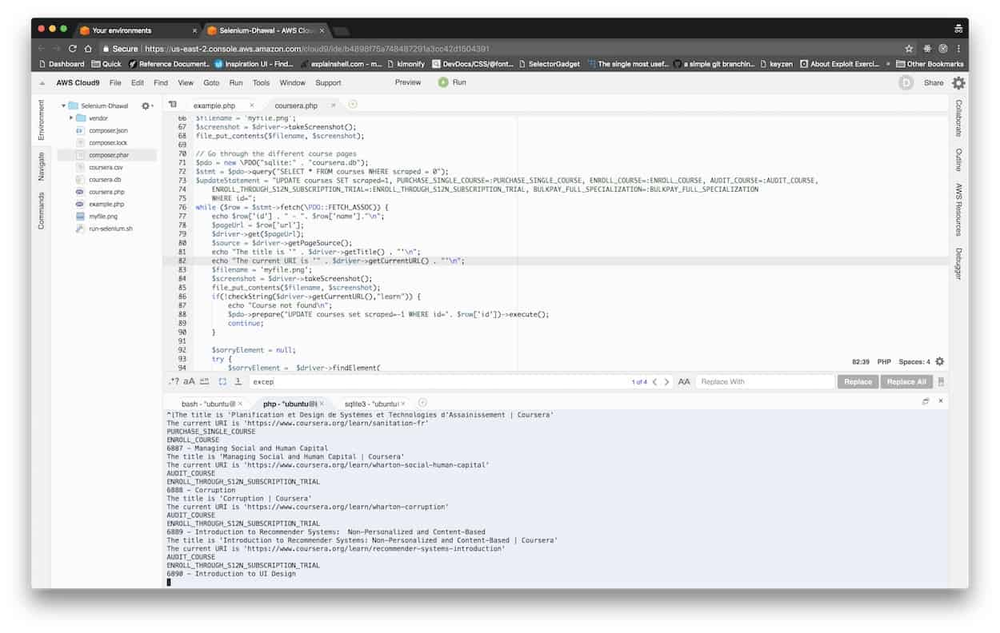

[2023] 1600+ कौरसेरा पाठ्यक्रम जो अभी भी पूरी तरह से निःशुल्क हैं
क्या आप जानते हैं कौरसेरा के कई कोर्स हैं जो अभी भी पूरी तरह से निःशुल्क हैं? क्लास सेंट्रल की पूरी सूची है।

क्या कौरसेरा फ्री है?
Are Coursera courses still free? At क्लास सेंट्रल , we get that question so often that I wrote a मार्गदर्शक to answer it. Generally speaking, Coursera courses are free to audit, but if you want to access graded assignments or earn a Course Certificate, you will need to pay. This change was first की घोषणा की in October 2015, and went live in January 2016.
लेकिन मुझे हमेशा से पता था कि कुछ कोर्स ऐसे भी हैं जो अभी भी पूरी तरह से फ्री हैं। जब आप इन पाठ्यक्रमों के लिए साइन अप करते हैं, तो आपको "पूर्ण पाठ्यक्रम, कोई प्रमाणपत्र नहीं" का विकल्प दिखाई देगा। उन पाठ्यक्रमों के लिए जो नए मॉडल का हिस्सा हैं, आपको "ऑडिट" विकल्प का चयन करना होगा।

It can be tricky to figure out which courses have this option. This is because Coursera is a single page app, and the information is only available once you’re logged in. So instead of going through each course one by one and then clicking on enroll, I decided to use सेलेनियम to help me figure it out. बीओबी set me up with an AWS instance and a Cloud 9 IDE where I could do this automation. Below is a screenshot of the setup. (Yes, I prefer PHP.)

मुझे ~ 6,000 कौरसेरा पाठ्यक्रमों के एक सक्रिय कैटलॉग में से लगभग 50 या इतने ही मुफ्त पाठ्यक्रम मिलने की उम्मीद थी। 1,600 से अधिक कौरसेरा एमओओसी खोजने के लिए मेरे आश्चर्य (बल्कि सदमे) की कल्पना करें जो अभी भी पूरी तरह से मुक्त हैं (ग्रेडेड असाइनमेंट सहित, प्रमाण पत्र घटाएं)। यहां तक कि कौरसेरा के अपने सहायता पृष्ठ भी दावा करते हैं कि "सभी पाठ्यक्रमों" के लिए आप केवल गैर-श्रेणीबद्ध सामग्री और व्याख्यान मुफ्त में प्राप्त कर सकते हैं। (साइड नोट: मेरे शोध में, मुझे कुछ दर्जन पूरी तरह से भुगतान किए गए ऑनलाइन पाठ्यक्रम भी मिले)।
नि: शुल्क कौरसेरा पाठ्यक्रम
This list of completely free online Coursera courses contains a number of highly rated MOOCs, including a few from Class Central’s अब तक के सर्वश्रेष्ठ ऑनलाइन पाठ्यक्रम . In fact, Coursera’s two most popular MOOCs by far — Barbara Oakley’s सीखना कैसे सीखना है and Coursera co-founder Andrew Ng’s यंत्र अधिगम MOOC — are also part of this list. Courses from 178 universities, including Stanford, Georgia Tech, Yale, Duke, and Michigan, are part of the list. Around 37% of the courses are not in English.
मैंने पाठ्यक्रमों को नीचे दी गई श्रेणियों में व्यवस्थित किया है। उस विशेष श्रेणी से मुक्त पाठ्यक्रमों की सूची पर सीधे जाने के लिए श्रेणी के नाम पर क्लिक करें।
- व्यक्तिगत विकास
- स्वास्थ्य और चिकित्सा
- विज्ञान
- मानविकी
- अंक शास्त्र
- कंप्यूटर विज्ञान
- प्रोग्रामिंग
- अभियांत्रिकी
- सामाजिक विज्ञान
- व्यवसाय
- कला डिजाइन
- डेटा विज्ञान
- शिक्षा और शिक्षण

यह
विषयवस्तु का व्यापार
विपणन रणनीति
Learn proven tactics and strategies from top marketing experts.
नि: शुल्क पंजीयन कराएं
.
व्यक्तिगत विकास (72)
- सीखना कैसे सीखें: कठिन विषयों में महारत हासिल करने में आपकी मदद करने के लिए शक्तिशाली मानसिक उपकरण from कैलिफोर्निया विश्वविद्यालय, सैन डिएगो ★★★★★(20240)
- माइंडशिफ्ट: सीखने में आने वाली बाधाओं को तोड़ें और अपनी छिपी हुई क्षमता को खोजें from मैकमास्टर विश्वविद्यालय ★★★★★(6741)
- लर्निंग हाउ टू लर्न फॉर यूथ from एरिजोना राज्य विश्वविद्यालय ★★★★★(791)
- लर्निंग हाउ टू लर्न (एसीए): शक्तिशाली मानसिक उपकरण जो आपको कठिन विषयों में महारत हासिल करने में मदद करेंगे from मैकमास्टर विश्वविद्यालय ★★★★★(253)
- सीखना from मेक्सिको का राष्ट्रीय स्वायत्त विश्वविद्यालय ★★★★★(106)
- अपने आप को जानें - आत्म-ज्ञान का मूल्य और सीमाएँ: परीक्षित जीवन from एडिनबर्ग विश्वविद्यालय ★★★★★(30)
- सफल बातचीत: आवश्यक रणनीतियाँ और कौशल from मिशिगन यूनिवर्सिटी ★★★★★(15)
- रचनात्मक सोच: सफलता के लिए तकनीक और उपकरण from इंपीरियल कॉलेज लंदन ★★★★★(14)
- नेगोशिएशन का परिचय: एक सैद्धांतिक और प्रेरक वार्ताकार बनने के लिए एक रणनीतिक प्लेबुक from येल विश्वविद्यालय ★★★★★(13)
- सीखने के लिए सीखना: शक्तिशाली मानसिक उपकरण जिसके साथ आप कठिन विषयों में महारत हासिल कर सकते हैं ( Learning How to Learn ) from कैलिफोर्निया विश्वविद्यालय, सैन डिएगो ★★★★★(8)
- कुशल कैसे बनें: व्यक्तिगत कौशल प्रबंधन का परिचय (परियोजना-केंद्रित पाठ्यक्रम) from स्टेट यूनिवर्सिटी ऑफ़ न्यू यॉर्क ★★★★☆(7)
- माइंडवेयर: सूचना युग के लिए गंभीर सोच from मिशिगन यूनिवर्सिटी ★★★★★(6)
- सीखना कैसे सीखें: शक्तिशाली मानसिक उपकरण आपको कठिन विषयों में मदद करने के लिए [सीखना कैसे सीखें] from कैलिफोर्निया विश्वविद्यालय, सैन डिएगो ★★★★☆(5)
- द आर्ट्स एंड साइंस ऑफ़ रिलेशनशिप: अंडरस्टैंडिंग ह्यूमन नीड्स from टोरोन्टो विश्वविद्यालय ★★★★☆(5)
- डिजिटल कौशल। कार्यालय उपकरण (माइक्रोसॉफ्ट वर्ड, एक्सेल, पावर प्वाइंट) from बार्सिलोना के स्वायत्त विश्वविद्यालय ★★★★★(3)
- सीखना कैसे सीखें: कठिन विषयों में महारत हासिल करने में आपकी मदद करने के लिए शक्तिशाली मानसिक उपकरण from मैकमास्टर विश्वविद्यालय ★★★★★(2)
- सीखना कैसे सीखें: जटिल विषयों में महारत हासिल करने में आपकी मदद करने के लिए शक्तिशाली बौद्धिक उपकरण (सीखना कैसे सीखें) from कैलिफोर्निया विश्वविद्यालय, सैन डिएगो ★★★★★(2)
- आजीवन सीखने और सफलता के लिए उभरती प्रौद्योगिकियों की खोज from भैंस में विश्वविद्यालय ★★★★☆(2)
- डिजिटल पदचिह्न from एडिनबर्ग विश्वविद्यालय ★★★★★(2)
- ट्रांसमीडिया स्टोरीटेलिंग: नैरेटिव वर्ल्ड्स, इमर्जिंग टेक्नोलॉजीज और ग्लोबल ऑडियंस from न्यू साउथ वेल्स यूनिवर्सिटी ★★★☆☆(2)
- अनिश्चितता और तनाव के समय में भावनाओं को प्रबंधित करना from येल विश्वविद्यालय ★★★★★(1)
- पाठ | छोटी सी बात और संवादी शब्दावली from जॉर्जिया तकनीकी संस्थान ★★★★★(1)
- नौकरी में सफलता: 3 चरणों में नौकरी पर रखें या पदोन्नत हों from स्टेट यूनिवर्सिटी ऑफ़ न्यू यॉर्क ★☆☆☆☆(1)
- पुलिस कार्य के तनाव को समझना और प्रबंधित करना from टोरोन्टो विश्वविद्यालय ★★★☆☆(1)
- "मेकिंग" प्रोग्रेस टीच-आउट from एमोरी विश्वविद्यालय ★★★★★(1)
- खुश रहने के लिए काम करो from ऑस्ट्रेलिया विश्वविद्यालय ★★★☆☆(1)
- अभ्यास में अनुवाद from नानजिंग विश्वविद्यालय ★★★☆☆(1)
- सफल बातचीत: आवश्यक रणनीतियाँ और कौशल (पुर्तगाली में) from मिशिगन यूनिवर्सिटी
- सफल बातचीत: आवश्यक रणनीतियाँ और कौशल (स्पेनिश में) from मिशिगन यूनिवर्सिटी
- लोगों को कैसे प्रभावित करें from मिशिगन यूनिवर्सिटी
- ब्रिलियंट, पैशनेट यू from मिशिगन यूनिवर्सिटी
- सफलता का विज्ञान: शोधकर्ताओं को क्या पता होना चाहिए from मिशिगन यूनिवर्सिटी
- अंतर्राष्ट्रीय यात्रा तैयारी, सुरक्षा और कल्याण from जॉन्स हॉपकिन्स विश्वविद्यालय
- अधिक मेहनत से नहीं, होशियारी से काम करें: व्यक्तिगत और पेशेवर उत्पादकता के लिए समय प्रबंधन from कैलिफोर्निया विश्वविद्यालय, इरविन
- लर्निंग ट्रांसफर और लाइफ लॉन्ग लर्निंग (3L) का परिचय from कैलिफोर्निया विश्वविद्यालय, इरविन
- नेगोशिएशन का परिचय: एक सैद्धांतिक और प्रेरक वार्ताकार बनने के लिए एक रणनीतिक गाइड from येल विश्वविद्यालय
- सीखना कैसे सीखना है: प्रभावी मानसिक उपकरण जो आपको कठिन विषयों से निपटने में मदद करते हैं (सीखना कैसे सीखें) from मैकमास्टर विश्वविद्यालय
- पाठ | वीडियो कॉन्फ्रेंसिंग: आमने-सामने लेकिन ऑनलाइन from जॉर्जिया तकनीकी संस्थान
- पाठ | टेलीफोन भाषा from जॉर्जिया तकनीकी संस्थान
- पाठ | साक्षात्कार के लिए तैयार हो जाइए from जॉर्जिया तकनीकी संस्थान
- पाठ | अपनी पिच व्यवस्थित करें from जॉर्जिया तकनीकी संस्थान
- पाठ | अपने आप को व्यक्त करें: उच्चारण from जॉर्जिया तकनीकी संस्थान
- पाठ | फोन पर समझें और समझें from जॉर्जिया तकनीकी संस्थान
- प्रेरक बयानबाजी: प्रेरक तर्कों और प्रभावी भाषा के साथ दर्शकों को प्रेरित करना from वाशिंगटन विश्वविद्यालय
- सत्य के बाद की दुनिया में खुद को सशक्त बनाना from स्टेट यूनिवर्सिटी ऑफ़ न्यू यॉर्क
- पावर ऑनबोर्डिंग from नॉर्थवेस्टर्न यूनिवर्सिटी
- सीखना सीख रहा हूं। अपना सारा समय पढ़ाई में लगाए बिना स्कूल में कैसे सफल हो सकते हैं from हायर स्कूल ऑफ इकोनॉमिक्स
- अपनी पहली नौकरी कैसे पाएं? विश्वविद्यालय के छात्रों के लिए व्यावहारिक पाठ्यक्रम from हायर स्कूल ऑफ इकोनॉमिक्स
- भाषण शिष्टाचार: राजनीति और संचार रणनीतियाँ from हायर स्कूल ऑफ इकोनॉमिक्स
- पेशेवर सफलता का मनोविज्ञान from हायर स्कूल ऑफ इकोनॉमिक्स
- कार्य का भविष्य डिजाइन करना from न्यू साउथ वेल्स यूनिवर्सिटी
- बातचीत की बुनियादी बातें from ईएसएसईसी बिजनेस स्कूल
- व्यावसायिकता from नेशनल ताईवान यूनीवर्सिटी
- नैतिक संघर्ष का समाधान from मेक्सिको का राष्ट्रीय स्वायत्त विश्वविद्यालय
- संघर्ष समाधान का अभ्यास। मैं - परिवार - कार्य - समाज from शिघुआ विश्वविद्यालय
- पब्लिक में अच्छा कैसे बोलें from बार्सिलोना के स्वायत्त विश्वविद्यालय
- डिजिटल कौशल। डेटाबेस: एक्सेस from बार्सिलोना के स्वायत्त विश्वविद्यालय
- डिजिटल कौशल। बुनियादी अवधारणाएं और उपकरण from बार्सिलोना के स्वायत्त विश्वविद्यालय
- जीवन का काम खोजने की बुनियादी बातें। भाग 2। प्रश्न के पीछे क्या है "खुद को कैसे खोजें?" from नेशनल रिसर्च न्यूक्लियर यूनिवर्सिटी MEPhI
- जीवन का काम खोजने की बुनियादी बातें। भाग 1. टालना कैसे बंद करें? from नेशनल रिसर्च न्यूक्लियर यूनिवर्सिटी MEPhI
- व्यवसाय का मनोविज्ञान from टॉम्स्क स्टेट यूनिवर्सिटी
- सभी अवसरों के लिए शिष्टाचार from टॉम्स्क स्टेट यूनिवर्सिटी
- पेशेवर प्रक्षेपवक्र प्रबंधन from टॉम्स्क स्टेट यूनिवर्सिटी
- साइकोडायग्नोस्टिक्स और मनोवैज्ञानिक मूल्यांकन from टॉम्स्क स्टेट यूनिवर्सिटी
- बातचीत 4.0 from ऑस्ट्रेलिया विश्वविद्यालय
- रोजगार के लिए कौशल from ऑस्ट्रेलिया विश्वविद्यालय
- कहानी कहना और प्रभाव: समझाने के लिए संवाद करें from मैक्वेरी विश्वविद्यालय
- स्टोरीटेलिंग एंड इन्फ्लुएंस: इफेक्टिव कम्युनिकेशन from मैक्वेरी विश्वविद्यालय
- मेरी पहली नौकरी (एमपीई) from चिली विश्वविद्यालय
- प्रभावी बोल from कोक विश्वविद्यालय
- परिवर्तन के युग में व्यावसायिकता from उट्रेच विश्वविद्यालय
- अंतर्राष्ट्रीय वार्ताओं की तकनीक from मॉस्को स्टेट इंस्टीट्यूट ऑफ इंटरनेशनल रिलेशंस (एमजीआईएमओ)
स्वास्थ्य और चिकित्सा (185)
- क्लिनिकल रिसर्च को समझना: सांख्यिकी के पीछे from केप टाउन विश्वविद्यालय ★★★★★(668)
- मेडिकल रिसर्च को समझना: आपका फेसबुक फ्रेंड गलत है from येल विश्वविद्यालय ★★★★★(364)
- डी-मिस्टीफाइंग माइंडफुलनेस from लीडेन विश्वविद्यालय ★★★★★(92)
- चीनी चिकित्सा में स्वास्थ्य अवधारणाओं from विज्ञान और प्रौद्योगिकी के हांगकांग विश्वविद्यालय ★★★★★(65)
- महत्वपूर्ण संकेत: यह समझना कि शरीर हमें क्या बता रहा है from पेनसिल्वेनिया यूनिवर्सिटी ★★★★★(51)
- बौद्ध धर्म और आधुनिक मनोविज्ञान from प्रिंसटन विश्वविद्यालय ★★★★★(29)
- महामारी विज्ञान: सार्वजनिक स्वास्थ्य का मूल विज्ञान from चैपल हिल में उत्तरी कैरोलिना विश्वविद्यालय ★★★★☆(28)
- सकारात्मक मनोरोग और मानसिक स्वास्थ्य from सिडनी विश्वविद्यालय ★★★★★(22)
- गंभीर से गंभीर बौद्धिक विकलांगता: देखभाल और शिक्षा के मंडल from केप टाउन विश्वविद्यालय ★★★★★(18)
- कम बैठो, सक्रिय हो जाओ from एडिनबर्ग विश्वविद्यालय ★★★★☆(16)
- अंगदान: मृत्यु से जीवन तक from केप टाउन विश्वविद्यालय ★★★★★(13)
- वैश्विक स्वास्थ्य की चुनौतियां from ड्यूक विश्वविद्यालय ★★★★★(11)
- महामारी - संक्रामक रोगों की गतिशीलता from पेंसिल्वेनिया स्टेट यूनिवर्सिटी ★★★★☆(11)
- COVID-19: आपको क्या जानना चाहिए (CME योग्य) from ऑस्मोसिस विश्वविद्यालय ★★★★★(11)
- मन पर नियंत्रण: COVID-19 के दौरान अपने मानसिक स्वास्थ्य का प्रबंधन from टोरोन्टो विश्वविद्यालय ★★★★☆(10)
- नर्सिंग होम में संक्रमण की रोकथाम from चैपल हिल में उत्तरी कैरोलिना विश्वविद्यालय ★★★★☆(10)
- अंतर्राष्ट्रीय और अमेरिकी छात्रों के लिए नैदानिक शब्दावली from पिट्सबर्ग विश्वविद्यालय ★★★★★(10)
- दंत चिकित्सा का परिचय from पेनसिल्वेनिया यूनिवर्सिटी ★★★★☆(9)
- बैक्टीरिया और जीर्ण संक्रमण from कोपेनहेगन विश्वविद्यालय ★★★★★(8)
- स्तन कैंसर का परिचय from येल विश्वविद्यालय ★★★★★(7)
- मधुमेह - एक वैश्विक चुनौती from कोपेनहेगन विश्वविद्यालय ★★★★☆(7)
- रसायन और स्वास्थ्य from जॉन्स हॉपकिन्स विश्वविद्यालय ★★★★☆(6)
- पुराने दर्द की रोकथाम: एक मानव प्रणाली दृष्टिकोण from मिनेसोटा विश्वविद्यालय ★★★★★(6)
- साइंस मैटर्स: आइए बात करते हैं COVID-19 के बारे में from इंपीरियल कॉलेज लंदन ★★★★★(6)
- जेंडर स्पेक्ट्रम के पार स्वास्थ्य from स्टैनफोर्ड विश्वविद्यालय ★★★★★(5)
- पब्लिक हेल्थ में सिस्टम थिंकिंग from जॉन्स हॉपकिन्स विश्वविद्यालय ★★★★★(5)
- EDIVET: क्या आपके पास पशु चिकित्सक बनने के लिए क्या है? from एडिनबर्ग विश्वविद्यालय ★★★★☆(5)
- अपने स्वास्थ्य का प्रबंधन: शारीरिक उपचार और व्यायाम की भूमिका from टोरोन्टो विश्वविद्यालय ★★★★☆(5)
- नैदानिक अनुसंधान के लिए डेटा प्रबंधन from वेंडरबिल्ट विश्वविद्यालय ★★★★☆(5)
- पेट और श्रोणि की शारीरिक रचना; आधार से क्लिनिक तक की यात्रा। from लीडेन विश्वविद्यालय ★★★★★(5)
- द न्यू नॉर्डिक डाइट - गैस्ट्रोनॉमी से लेकर स्वास्थ्य तक from कोपेनहेगन विश्वविद्यालय ★★★★☆(5)
- त्वचाविज्ञान: त्वचा की यात्रा from नोवोसिबिर्स्क स्टेट यूनिवर्सिटी ★★★★☆(5)
- शिक्षण और नैदानिक कौशल का आकलन from मिशिगन यूनिवर्सिटी ★★★★★(4)
- एडीएचडी: प्राथमिक छात्रों के लिए हर दिन की रणनीतियाँ from स्टेट यूनिवर्सिटी ऑफ़ न्यू यॉर्क ★★★★★(4)
- मानसिक स्वास्थ्य और बीमारी का सामाजिक संदर्भ from टोरोन्टो विश्वविद्यालय ★★★★☆(4)
- सार्वजनिक स्वास्थ्य में रोग जांच from जिनेवा विश्वविद्यालय ★★★★☆(4)
- इबोला: स्वास्थ्य पेशेवरों के लिए आवश्यक ज्ञान from एम्स्टर्डम विश्वविद्यालय ★★★★★(4)
- रोगाणुरोधी प्रतिरोध - सिद्धांत और तरीके from डेनमार्क के तकनीकी विश्वविद्यालय (डीटीयू) ★★★★☆(4)
- गर्भावस्था में पोषण और जीवन शैली from लुडविग-मैक्सिमिलियन्स-यूनिवर्सिटी म्यूनिख ★★★★☆(4)
- तीव्र और जीर्ण राइनोसिनिटिस: एक व्यापक समीक्षा from माउंट सिनाई में इकान स्कूल ऑफ मेडिसिन ★★★★★(4)
- एंटीबायोटिक प्रबंधन from स्टैनफोर्ड विश्वविद्यालय ★★★★★(3)
- स्तनपान पर स्टैनफोर्ड का लघु पाठ्यक्रम from स्टैनफोर्ड विश्वविद्यालय ★★★★★(3)
- मिशिगन स्पोर्ट-संबंधित कंस्यूशन ट्रेनिंग सर्टिफिकेशन from मिशिगन यूनिवर्सिटी ★★★★☆(3)
- चमगादड़, बत्तख और महामारी: एक स्वास्थ्य नीति का परिचय from प्रिंसटन विश्वविद्यालय ★★★★★(3)
- ट्रॉपिकल पैरासिटोलॉजी: प्रोटोजोअन्स, वर्म्स, वेक्टर्स एंड ह्यूमन डिजीज from ड्यूक विश्वविद्यालय ★★★★★(3)
- होम केयर में सहायता के लिए नींव from स्टेट यूनिवर्सिटी ऑफ़ न्यू यॉर्क ★★★★★(3)
- चिकन व्यवहार और कल्याण from एडिनबर्ग विश्वविद्यालय ★★★☆☆(3)
- वैश्विक स्वास्थ्य: एक अंतःविषय अवलोकन from जिनेवा विश्वविद्यालय ★★★★☆(3)
- इबोला वायरस रोग: एक उभरती हुई महामारी from एमोरी विश्वविद्यालय ★★★★☆(3)
- क्लिनिकल किडनी, अग्न्याशय और आइलेट प्रत्यारोपण from लीडेन विश्वविद्यालय ★★★★☆(3)
- वैश्विक स्वास्थ्य के लिए एक परिचय from कोपेनहेगन विश्वविद्यालय ★★★★☆(3)
- मोतियाबिंद सर्जरी का परिचय from मिशिगन यूनिवर्सिटी ★★★★☆(2)
- एड्स: भय और आशा from मिशिगन यूनिवर्सिटी ★★★★★(2)
- वैश्विक स्वास्थ्य की अनिवार्यता from येल विश्वविद्यालय ★★★★☆(2)
- छाती, गर्दन, पेट और श्रोणि की शारीरिक रचना from येल विश्वविद्यालय ★★★★★(2)
- स्वास्थ्य देखभाल वितरण का विज्ञान from एरिजोना राज्य विश्वविद्यालय ★★★★★(2)
- कैरियर 911: चिकित्सा और स्वास्थ्य सेवा में आपका भविष्य का काम from नॉर्थवेस्टर्न यूनिवर्सिटी ★★★★★(2)
- प्रसव: एक वैश्विक परिप्रेक्ष्य from एमोरी विश्वविद्यालय ★★★★★(2)
- एक प्रकार का मानसिक विकार from वेस्लेयन विश्वविद्यालय ★★★★★(2)
- टाइप 2 डायबिटीज मेलिटस वाले रोगियों के प्रबंधन पर अपडेट from मेक्सिको का राष्ट्रीय स्वायत्त विश्वविद्यालय ★★★★★(2)
- ज़िंग्लिन में ख़ज़ाने की खोज ——पारंपरिक चीनी चिकित्सा को पहचानना from शंघाई जे आई एओ टोंग विश्वविद्यालय ★★★★★(2)
- हर रोज चीनी दवा from चीनी विश्वविद्यालय, हांग कांग ★★★★☆(2)
- प्रत्यारोपण दंत चिकित्सा from हांगकांग विश्वविद्यालय ★★★★★(2)
- मधुमेह - आवश्यक तथ्य from कोपेनहेगन विश्वविद्यालय ★★★★★(2)
- मोटापा, मधुमेह और हृदय रोग के बोझ को कम करना from सिडनी विश्वविद्यालय ★★★★★(2)
- एमआरआई बुनियादी बातों from कोरिया उन्नत विज्ञान और प्रौद्योगिकी संस्थान ★★★☆☆(2)
- सुनवाई हानि का परिचय from माउंट सिनाई में इकान स्कूल ऑफ मेडिसिन ★★★★★(2)
- स्वास्थ्य देखभाल आईटी: चुनौतियां और अवसर from माउंट सिनाई में इकान स्कूल ऑफ मेडिसिन ★★★☆☆(2)
- संक्रमण की कहानियां from स्टैनफोर्ड विश्वविद्यालय ★★★★★(1)
- द ओरल कैविटी: पोर्टल टू हेल्थ एंड डिजीज from पेनसिल्वेनिया यूनिवर्सिटी ★★★★★(1)
- थोरैसिक ऑन्कोलॉजी from मिशिगन यूनिवर्सिटी ★★★★☆(1)
- मानवीय संकट में सार्वजनिक स्वास्थ्य 2 from जॉन्स हॉपकिन्स विश्वविद्यालय ★★★★★(1)
- वैश्विक स्वास्थ्य कूटनीति from स्टेट यूनिवर्सिटी ऑफ़ न्यू यॉर्क ★★★★★(1)
- व्यक्तिगत चिकित्सा में केस स्टडीज from वेंडरबिल्ट विश्वविद्यालय ★★★★★(1)
- घरेलू जल उपचार और सुरक्षित भंडारण का परिचय from लुसाने में संघीय प्रौद्योगिकी संस्थान ★★★★★(1)
- खाद्य सुरक्षा और विष विज्ञान from नेशनल ताईवान यूनीवर्सिटी ★★☆☆☆(1)
- खाद्य सुरक्षा और जोखिम विश्लेषण from नेशनल ताईवान यूनीवर्सिटी ★★★★★(1)
- पोषण और मोटापा: अधिक वजन नियंत्रण from मेक्सिको का राष्ट्रीय स्वायत्त विश्वविद्यालय ★★★★★(1)
- पुराने दर्द के खिलाफ काम करें from बार्सिलोना के स्वायत्त विश्वविद्यालय ★★★★★(1)
- COVID-19 - एक क्लिनिकल अपडेट from फ्लोरिडा विश्वविद्यालय ★★★★★(1)
- स्वास्थ्य सेवा और समाज को पाटना from टॉम्स्क स्टेट यूनिवर्सिटी ★★★☆☆(1)
- हर रोज चीनी दवा 2 from चीनी विश्वविद्यालय, हांग कांग ★★★★★(1)
- प्रत्यारोपण दंत चिकित्सा from हांगकांग विश्वविद्यालय ★★★★★(1)
- बूढ़ी होती आबादी के लिए नवोन्मेषी समाधान from कोपेनहेगन विश्वविद्यालय ★★★★★(1)
- दुनिया भर में नौकायन के लिए भोजन और आहार from बार्सिलोना विश्वविद्यालय ★★★★★(1)
- RACE स्केल का उपयोग करके एंडोवास्कुलर उपचार के लिए तीव्र स्ट्रोक और रोगी चयन की पूर्व-अस्पताल देखभाल from बार्सिलोना विश्वविद्यालय ★★★★★(1)
- eHealth: केवल एक इलेक्ट्रॉनिक रिकॉर्ड से अधिक from सिडनी विश्वविद्यालय ★★★★☆(1)
- अग्रणी हेल्थकेयर गुणवत्ता और सुरक्षा from जॉर्ज वाशिंगटन विश्वविद्यालय ★★★★★(1)
- नवजात शिशु की देखभाल में सामान्य देखभाल और प्रक्रियाएं from चिली विश्वविद्यालय ★☆☆☆☆(1)
- कण त्वरक के चिकित्सा अनुप्रयोग (NPAP MOOC) from लुंड विश्वविद्यालय ★★★☆☆(1)
- बांझपन नर्सिंग (बांझपन नर्सिंग) from कोक विश्वविद्यालय ★★★★★(1)
- नैदानिक महामारी विज्ञान from उट्रेच विश्वविद्यालय ★★★★★(1)
- COVID-19 की रोकथाम और नियंत्रण के लिए व्याख्यान श्रृंखला from ξ'press j i Aotong विश्वविद्यालय ★★★★★(1)
- कैंसर के बाद का स्वास्थ्य: प्राथमिक देखभाल के लिए कैंसर की उत्तरजीविता from स्टैनफोर्ड विश्वविद्यालय
- दुनिया को खिलाना from पेनसिल्वेनिया यूनिवर्सिटी
- बच्चों में सुनवाई हानि from मिशिगन यूनिवर्सिटी
- सेवा रूपांतरित: अमेरिकी वयोवृद्ध केंद्रित देखभाल में पाठ from मिशिगन यूनिवर्सिटी
- COVID-19 संपर्क अनुरेखण from जॉन्स हॉपकिन्स विश्वविद्यालय
- COVID-19 कॉन्टैक्ट ट्रेसिंग from जॉन्स हॉपकिन्स विश्वविद्यालय
- व्यसन उपचार: स्वास्थ्य सेवा प्रदाताओं के लिए नैदानिक कौशल from येल विश्वविद्यालय
- वैश्विक गुणवत्ता मातृ एवं नवजात देखभाल from येल विश्वविद्यालय
- हैकिंग COVID-19 — पाठ्यक्रम 1: एक घातक रोगज़नक़ की पहचान करना from कैलिफोर्निया विश्वविद्यालय, सैन डिएगो
- मोटापे को समझना from एडिनबर्ग विश्वविद्यालय
- सामाजिक जांच और अनुसंधान के तरीके (भाग 1) सामाजिक अनुसंधान के तरीके (भाग I) from पीकिंग विश्वविद्यालय
- सामाजिक जांच और अनुसंधान के तरीके (भाग 2) सामाजिक अनुसंधान के तरीके (भाग 2) from पीकिंग विश्वविद्यालय
- व्यापक रजोनिवृत्ति प्रबंधन from पीकिंग विश्वविद्यालय
- कॉलेज छात्र योग from पीकिंग विश्वविद्यालय
- महामारी विज्ञान आधार (भाग 1) from पीकिंग विश्वविद्यालय
- सामुदायिक जागरूकता पाठ्यक्रम: कामुकता और विकलांगता from मिनेसोटा विश्वविद्यालय
- इबोला: एक साथ हार! from जिनेवा विश्वविद्यालय
- स्वास्थ्य सेवा के खिलाफ हिंसा from जिनेवा विश्वविद्यालय
- ज़िका के नक्शेकदम पर ... अज्ञात के निकट from जिनेवा विश्वविद्यालय
- नैदानिक तर्क का पर्यवेक्षण from जिनेवा विश्वविद्यालय
- अंतर्राष्ट्रीय स्वास्थ्य विनियमों के माध्यम से वैश्विक स्वास्थ्य सुरक्षा, एकजुटता और स्थिरता from जिनेवा विश्वविद्यालय
- कोविड-19: कॉन्टैक्ट ट्रेसिंग from जिनेवा विश्वविद्यालय
- आत्मकेंद्रित स्पेक्ट्रम विकार: निदान from जिनेवा विश्वविद्यालय
- सटीक चिकित्सा from जिनेवा विश्वविद्यालय
- तेजी से एक साथ, नैदानिक परीक्षणों में अल्पसंख्यकों की भर्ती में वृद्धि from वेंडरबिल्ट विश्वविद्यालय
- COVID-19 टाइम्स में स्वास्थ्य, समाज और कल्याण from कोलोराडो बोल्डर विश्वविद्यालय
- वैश्विक स्वास्थ्य उत्तरदाताओं के लिए नींव from यूनिवर्सिटी ऑफ कोलोराडो सिस्टम
- मानवीय संदर्भों में सार्वजनिक स्वास्थ्य इंजीनियरिंग का परिचय from लुसाने में संघीय प्रौद्योगिकी संस्थान
- एक पाठ आपको फेफड़ों के कैंसर के बारे में बताता है (बेसिक कॉन्सेप्ट ऑफ लंग कैंसर: डायग्नोसिस एंड ट्रीटमेंट) from नेशनल ताईवान यूनीवर्सिटी
- ताइवान में मेडिसिन और मेडिकल ब्रेकथ्रू के पायनियर्स from नेशनल ताईवान यूनीवर्सिटी
- पेरिटोनियल डायलिसिस from मेक्सिको का राष्ट्रीय स्वायत्त विश्वविद्यालय
- दंत क्षय का आधुनिक प्रबंधन from मेक्सिको का राष्ट्रीय स्वायत्त विश्वविद्यालय
- कृषि-खाद्य सुरक्षा from मेक्सिको का राष्ट्रीय स्वायत्त विश्वविद्यालय
- रेजिडेंट डॉक्टर की शिक्षण भूमिका from मेक्सिको का राष्ट्रीय स्वायत्त विश्वविद्यालय
- अस्पताल की सेटिंग में घाव की देखभाल from मेक्सिको का राष्ट्रीय स्वायत्त विश्वविद्यालय
- प्रोस्टेट कैंसर from मेक्सिको का राष्ट्रीय स्वायत्त विश्वविद्यालय
- ओकुलर फार्माकोविजिलेंस from मेक्सिको का राष्ट्रीय स्वायत्त विश्वविद्यालय
- दंत चिकित्सकों के लिए फार्माकोलॉजी from मेक्सिको का राष्ट्रीय स्वायत्त विश्वविद्यालय
- नैदानिक परिदृश्य में सीखने का मूल्यांकन from टेक्नोलॉजिको डी मॉन्टेरी
- जनसंख्या स्वास्थ्य: शासन from लीडेन विश्वविद्यालय
- जनसंख्या स्वास्थ्य: वैकल्पिक भुगतान मॉडल from लीडेन विश्वविद्यालय
- जनसंख्या स्वास्थ्य: स्वास्थ्य और स्वास्थ्य व्यवहार from लीडेन विश्वविद्यालय
- जनसंख्या स्वास्थ्य: जिम्मेदार डेटा विश्लेषण from लीडेन विश्वविद्यालय
- जनसंख्या स्वास्थ्य: अध्ययन डिजाइन from लीडेन विश्वविद्यालय
- जनसंख्या स्वास्थ्य: जनसंख्या स्वास्थ्य प्रबंधन के मूल तत्व from लीडेन विश्वविद्यालय
- जनसंख्या स्वास्थ्य: पैनल प्रबंधन अगला स्तर from लीडेन विश्वविद्यालय
- हर किसी की पहुंच के भीतर हार्मोनल गर्भनिरोधक from बार्सिलोना के स्वायत्त विश्वविद्यालय
- मनोवैज्ञानिक प्राथमिक चिकित्सा (पीएपी)। COVID-19 विशेष संस्करण from बार्सिलोना के स्वायत्त विश्वविद्यालय
- प्राथमिक देखभाल में न्यूरोपैथिक दर्द का निदान और उपचार from एंडीज विश्वविद्यालय
- संक्रमण में स्वास्थ्य और स्वास्थ्य सेवा: शासन की दुविधाएं from टॉम्स्क स्टेट यूनिवर्सिटी
- स्वस्थ हृदय, स्वस्थ रक्त वाहिकाएं from टॉम्स्क स्टेट यूनिवर्सिटी
- महिलाओं का प्रजनन स्वास्थ्य और सुरक्षित गर्भावस्था from टॉम्स्क स्टेट यूनिवर्सिटी
- आणविक आहार विज्ञान: जीन, भोजन और स्वास्थ्य from टॉम्स्क स्टेट यूनिवर्सिटी
- पारिवारिक स्वास्थ्य: वंशावली रहस्य from टॉम्स्क स्टेट यूनिवर्सिटी
- बायोमेडिकल विज़ुअलाइज़ेशन from ग्लासगो विश्वविद्यालय
- चरण दर चरण योग from शंघाई जे आई एओ टोंग विश्वविद्यालय
- पारंपरिक पूर्वी व्यायामों के आधार पर प्रतिरक्षा में सुधार from शंघाई जे आई एओ टोंग विश्वविद्यालय
- [नई] पारंपरिक चीनी चिकित्सा और चीनी संस्कृति from शंघाई जे आई एओ टोंग विश्वविद्यालय
- जीवन सुरक्षा और बचावजीवन सुरक्षा और बचाव from शंघाई जे आई एओ टोंग विश्वविद्यालय
- सामान्य पुरानी बीमारियों का स्वास्थ्य प्रबंधन from शंघाई जे आई एओ टोंग विश्वविद्यालय
- महामारी from हांगकांग विश्वविद्यालय
- वृद्ध लोगों के लिए अभिनव देखभाल के लिए बिजनेस मॉडल from कोपेनहेगन विश्वविद्यालय
- वैश्विक स्वास्थ्य के लिए एक परिचय from कोपेनहेगन विश्वविद्यालय
- मानवीय सेटिंग में गैर-संचारी रोग from कोपेनहेगन विश्वविद्यालय
- गैर-अल्कोहलिक फैटी लिवर रोग - अनिवार्य from कोपेनहेगन विश्वविद्यालय
- आपातकाल में गंभीर रूप से बीमार: मानसिक स्वास्थ्य क्यों मायने रखता है from कोपेनहेगन विश्वविद्यालय
- दवाओं पर रोगी परिप्रेक्ष्य: गुणात्मक साक्षात्कार from कोपेनहेगन विश्वविद्यालय
- दवाओं पर रोगी के दृष्टिकोण को समझना from कोपेनहेगन विश्वविद्यालय
- रोगाणुरोधी और सुपरबग- देवदूतों और शैतानों के बीच का खेल from फुदान विश्वविद्यालय
- वैश्विक स्वास्थ्य का परिचय from फुदान विश्वविद्यालय
- रेस स्केल: स्ट्रोक के लिए प्रीहॉस्पिटल स्क्रीनिंग जिसमें बड़े सेरेब्रल वेसल ऑक्लूजन शामिल हैं from बार्सिलोना विश्वविद्यालय
- RACE स्केल के साथ एंडोवास्कुलर उपचार के लिए तीव्र स्ट्रोक और रोगियों के चयन की पूर्व-अस्पताल देखभाल from बार्सिलोना विश्वविद्यालय
- कोविड-19 के कारण अर्ध-गंभीर और गंभीर रूप से बीमार रोगी का प्रबंधन from बार्सिलोना विश्वविद्यालय
- वैश्विक स्वास्थ्य और मानवतावाद from मैनचेस्टर विश्वविद्यालय
- डूइंग क्लिनिकल रिसर्च: बायोस्टैटिस्टिक्स विथ द वोल्फ्राम लैंग्वेज from केप टाउन विश्वविद्यालय
- जीवन, स्वास्थ्य और विकिरण from सिडनी विश्वविद्यालय
- स्वास्थ्य व्यवसायों के नैदानिक सिमुलेशन में अनिवार्य from जॉर्ज वाशिंगटन विश्वविद्यालय
- ट्रामा सर्जरी की मूल बातें from म्यूनिख के तकनीकी विश्वविद्यालय
- आघात सर्जरी की मूल बातें from म्यूनिख के तकनीकी विश्वविद्यालय
- विचार 2 प्रभाव: सहायक स्वास्थ्य तकनीकों और अन्य उत्पादों के अनुवाद का एक परिचय from पिट्सबर्ग विश्वविद्यालय
- ध्यान: अपने जीवन में अपने लक्ष्यों को प्राप्त करने का एक तरीका from कोरिया उन्नत विज्ञान और प्रौद्योगिकी संस्थान
- प्राथमिक स्वास्थ्य देखभाल: गैर-संचारी रोगों की चुनौती from पोंटिफिकल कैथोलिक यूनिवर्सिटी ऑफ चिली
- मिरगी के दौरे का प्रबंधन और सामाजिक समावेश को बढ़ावा देना from पोंटिफिकल कैथोलिक यूनिवर्सिटी ऑफ चिली
- कोलोरेक्टल सर्जरी में अनुकूलित रिकवरी from पोंटिफिकल कैथोलिक यूनिवर्सिटी ऑफ चिली
- हेल्थकेयर सिस्टम में विनियमित प्रतियोगिता: सिद्धांत और व्यवहार from इरास्मस विश्वविद्यालय रॉटरडैम
- पोषण और स्वास्थ्य from नानजिंग विश्वविद्यालय
- सर्कैडियन घड़ियाँ: कैसे लय जीवन की संरचना करती है from लुडविग-मैक्सिमिलियन्स-यूनिवर्सिटी म्यूनिख
- वैश्विक स्वास्थ्य नीति from टोक्यो विश्वविद्यालय
- साक्ष्य आधारित स्वास्थ्य from कैंपिनास स्टेट यूनिवर्सिटी
- व्यवस्थित समीक्षा और मेटा-विश्लेषण from कैंपिनास स्टेट यूनिवर्सिटी
- वायरोलॉजी की मूल बातें (वायरोलॉजी का परिचय) from नोवोसिबिर्स्क स्टेट यूनिवर्सिटी
- जिंदा रहते हुए! आपात स्थिति में प्राथमिक उपचार from ई-लर्निंग डेवलपमेंट फंड
विज्ञान (220)
- पर्वत 101 from अल्बर्टा विश्वविद्यालय ★★★★★(579)
- दिनों 101: डायनासोर पलेओबिओलोग्य from अल्बर्टा विश्वविद्यालय ★★★★★(119)
- गैस्ट्रोनॉमी का विज्ञान from विज्ञान और प्रौद्योगिकी के हांगकांग विश्वविद्यालय ★★★★☆(109)
- सौर मंडल का विज्ञान from कैलिफोर्निया प्रौद्योगिकी संस्थान ★★★★★(50)
- चिकित्सा तंत्रिका विज्ञान from ड्यूक विश्वविद्यालय ★★★★★(46)
- जीवाश्म विज्ञान: थेरोपोड डायनासोर और पक्षियों की उत्पत्ति from अल्बर्टा विश्वविद्यालय ★★★★★(39)
- एस्ट्रोबायोलॉजी एंड द सर्च फॉर एक्स्ट्राटेरेस्ट्रियल लाइफ from एडिनबर्ग विश्वविद्यालय ★★★★★(33)
- आनुवंशिकी और विकास का परिचय from ड्यूक विश्वविद्यालय ★★★★☆(32)
- परिचयात्मक मानव फिजियोलॉजी from ड्यूक विश्वविद्यालय ★★★★☆(29)
- जीवाश्म विज्ञान: प्राचीन समुद्री सरीसृप from अल्बर्टा विश्वविद्यालय ★★★★★(28)
- अंडरस्टैंडिंग द ब्रेन: द न्यूरोबायोलॉजी ऑफ एवरीडे लाइफ from शिकागो विश्वविद्यालय ★★★★★(28)
- विकासशील देशों में जलवायु परिवर्तन शमन from केप टाउन विश्वविद्यालय ★★★★☆(27)
- एस्ट्रोनॉमी: एक्सप्लोरिंग टाइम एंड स्पेस from एरिजोना विश्वविद्यालय ★★★★★(21)
- जीवाश्म विज्ञान: प्रारंभिक कशेरुकी विकास from अल्बर्टा विश्वविद्यालय ★★★★★(20)
- कुत्ते की भावना और अनुभूति from ड्यूक विश्वविद्यालय ★★★★☆(19)
- न्यूरोइकॉनॉमिक्स का परिचय: मस्तिष्क कैसे निर्णय लेता है from हायर स्कूल ऑफ इकोनॉमिक्स ★★★★☆(19)
- आइंस्टीन को समझना: सापेक्षता का विशेष सिद्धांत from स्टैनफोर्ड विश्वविद्यालय ★★★★★(18)
- बिग बैंग से डार्क एनर्जी तक from टोक्यो विश्वविद्यालय ★★★★☆(17)
- फॉरेंसिक साइंस का परिचय from नानयांग प्रौद्योगिकी विश्वविद्यालय ★★★★☆(17)
- पशु व्यवहार और कल्याण from एडिनबर्ग विश्वविद्यालय ★★★★☆(13)
- आपदा तैयारियां from पिट्सबर्ग विश्वविद्यालय ★★★★☆(13)
- भौतिक रसायन विज्ञान का परिचय from मैनचेस्टर विश्वविद्यालय ★★★★☆(12)
- उपभोक्ता तंत्रिका विज्ञान और तंत्रिकाविपणन का परिचय from कोपेनहेगन बिजनेस स्कूल ★★★☆☆(12)
- एस्ट्रोटेक: खगोलीय खोज के पीछे का विज्ञान और प्रौद्योगिकी from एडिनबर्ग विश्वविद्यालय ★★★★☆(11)
- पौधों को समझना - भाग I: एक पौधा क्या जानता है from तेल अवीव विश्वविद्यालय ★★★★★(11)
- बिल्लियों और कुत्तों के बारे में सच्चाई from एडिनबर्ग विश्वविद्यालय ★★★★★(10)
- गट चेक: अपने माइक्रोबायोम की खोज from कोलोराडो बोल्डर विश्वविद्यालय ★★★★☆(10)
- ओस्टियोआर्कियोलॉजी: द ट्रुथ इन अवर बोन्स from लीडेन विश्वविद्यालय ★★★★★(10)
- द्विभाषी मस्तिष्क from ह्यूस्टन प्रणाली विश्वविद्यालय ★★★★☆(10)
- सिनैप्स, न्यूरॉन्स और दिमाग from यरूशलेम के हिब्रू विश्वविद्यालय ★★★★☆(10)
- कम्प्यूटेशनल तंत्रिका विज्ञान from वाशिंगटन विश्वविद्यालय ★★★★☆(9)
- क्वांटम भौतिकी की खोज from मैरीलैंड विश्वविद्यालय, कॉलेज पार्क ★★★★☆(9)
- ग्लोबल वार्मिंग I: जलवायु परिवर्तन का विज्ञान और मॉडलिंग from शिकागो विश्वविद्यालय ★★★★☆(9)
- रसायन विज्ञान का परिचय: प्रतिक्रियाएँ और अनुपात from ड्यूक विश्वविद्यालय ★★★★★(8)
- विकासशील देशों में जल आपूर्ति और स्वच्छता नीति भाग 1: जटिल समस्याओं को समझना from मैनचेस्टर विश्वविद्यालय ★★★★★(8)
- इकोलॉजी: इकोसिस्टम डायनेमिक्स एंड कंजर्वेशन from अमेरिकी प्राकृतिक इतिहास संग्रहालय ★★★★★(8)
- उन्नत रसायन विज्ञान from केंटकी विश्वविद्यालय ★★★★★(8)
- उत्पत्ति - ब्रह्मांड, सौर मंडल, पृथ्वी और जीवन का गठन from कोपेनहेगन विश्वविद्यालय ★★★★★(7)
- ग्रीनिंग द इकोनॉमी: लेसन्स फ्रॉम स्कैंडिनेविया from लुंड विश्वविद्यालय ★★★★☆(7)
- दृश्य धारणा और मस्तिष्क from ड्यूक विश्वविद्यालय ★★★★☆(6)
- आर्कियोएस्ट्रोनॉमी from पोलिटेक्निको डी मिलानो ★★★★★(6)
- एस्ट्रो 101: ब्लैक होल from अल्बर्टा विश्वविद्यालय ★★★★★(6)
- ब्रह्मांड का विश्लेषण from रटगर्स यूनिवर्सिटी ★★★★☆(6)
- आणविक स्पेक्ट्रोस्कोपी का परिचय from मैनचेस्टर विश्वविद्यालय ★★★★☆(6)
- कृषि, अर्थशास्त्र और प्रकृति from पश्चिमी ऑस्ट्रेलिया विश्वविद्यालय ★★★★★(6)
- रसायन विज्ञान from केंटकी विश्वविद्यालय ★★★★★(6)
- ऊष्मप्रवैगिकी का परिचय: ऊर्जा को यहां से वहां स्थानांतरित करना from मिशिगन यूनिवर्सिटी ★★★★☆(5)
- नींद: तंत्रिका जीव विज्ञान, चिकित्सा और समाज from मिशिगन यूनिवर्सिटी ★★★★★(5)
- सामग्री विज्ञान: 10 बातें जो हर इंजीनियर को पता होनी चाहिए from कैलिफोर्निया विश्वविद्यालय, डेविस ★★★★☆(5)
- सामान्य रसायन विज्ञान: अवधारणा विकास और अनुप्रयोग from चावल विश्वविद्यालय ★★★★☆(5)
- हमारी पृथ्वी: इसकी जलवायु, इतिहास और प्रक्रियाएं from मैनचेस्टर विश्वविद्यालय ★★★★★(5)
- भौतिकी में समस्याओं के लिए परिमित तत्व विधि from मिशिगन यूनिवर्सिटी ★★★★☆(4)
- जीव विज्ञान के रूप में संगीत: हम क्या सुनना पसंद करते हैं और क्यों from ड्यूक विश्वविद्यालय ★★★★☆(4)
- रसायन विज्ञान का परिचय: संरचनाएं और समाधान from ड्यूक विश्वविद्यालय ★★★★☆(4)
- प्रायोगिक भौतिकी का परिचय: यांत्रिकी, ऊष्मप्रवैगिकी from पोलिटेक्निको डी मिलानो ★★★★★(4)
- कीड़े 101: कीट-मानव सहभागिता from अल्बर्टा विश्वविद्यालय ★★★★★(4)
- पादपों को समझना - भाग II: पादप जीव विज्ञान के मूल सिद्धांत from तेल अवीव विश्वविद्यालय ★★★★☆(4)
- अन्य पृथ्वी की कल्पना करना from प्रिंसटन विश्वविद्यालय ★★★★☆(3)
- वैज्ञानिक सोच from मेक्सिको का राष्ट्रीय स्वायत्त विश्वविद्यालय ★★★☆☆(3)
- द हॉर्स कोर्स: इंट्रोडक्शन टू बेसिक केयर एंड मैनेजमेंट from फ्लोरिडा विश्वविद्यालय ★★★★★(3)
- बदलता आर्कटिक from टॉम्स्क स्टेट यूनिवर्सिटी ★★★☆☆(3)
- स्टेम सेल का विज्ञान from अमेरिकी प्राकृतिक इतिहास संग्रहालय ★★★★★(3)
- सांख्यिकीय यांत्रिकी: एल्गोरिदम और संगणना from इकोले नॉर्मले सुप्रीयर ★★★★★(3)
- विज्ञान और रोजमर्रा की जिंदगी में उभरती घटनाएं from कैलिफोर्निया विश्वविद्यालय, इरविन ★★★★☆(2)
- भौतिक व्यवहार from जॉर्जिया तकनीकी संस्थान ★★★☆☆(2)
- पशुधन स्वास्थ्य प्रबंधन के माध्यम से सतत खाद्य उत्पादन from अरबाना - केंपेन में इलिनोइस विश्वविद्यालय ★★★★★(2)
- सापेक्षता के सामान्य सिद्धांत का परिचय from हायर स्कूल ऑफ इकोनॉमिक्स ★★★☆☆(2)
- रासायनिक जीव विज्ञान from जिनेवा विश्वविद्यालय ★★★★★(2)
- कण भौतिकी: एक परिचय from जिनेवा विश्वविद्यालय ★★★★★(2)
- जल संसाधन प्रबंधन और नीति from जिनेवा विश्वविद्यालय ★★★☆☆(2)
- ऊष्मप्रवैगिकी: मूल बातें from लुसाने में संघीय प्रौद्योगिकी संस्थान ★★★★★(2)
- वायु प्रदूषण - हमारे स्वास्थ्य के लिए एक वैश्विक खतरा from कोपेनहेगन विश्वविद्यालय ★★★★★(2)
- डेटा-संचालित खगोल विज्ञान from सिडनी विश्वविद्यालय ★★★★★(2)
- एक सतत 2050 के लिए सर्वोत्तम अभ्यास खेती की खोज करें from पश्चिमी ऑस्ट्रेलिया विश्वविद्यालय ★★★★☆(2)
- सुधार के लिए प्रयोग from मैकमास्टर विश्वविद्यालय ★★★★★(2)
- संरचनात्मक जैव रसायन from नानजिंग विश्वविद्यालय ★★★☆☆(2)
- विकास: शिक्षकों के लिए एक कोर्स from अमेरिकी प्राकृतिक इतिहास संग्रहालय ★★★★★(2)
- गतिशील पृथ्वी: शिक्षकों के लिए एक कोर्स from अमेरिकी प्राकृतिक इतिहास संग्रहालय ★★★★☆(2)
- चिंपैंजी व्यवहार और संरक्षण from ड्यूक विश्वविद्यालय ★★★★★(1)
- ग्लोबल पोस्ट हार्वेस्ट लॉस प्रिवेंशन: फंडामेंटल, टेक्नोलॉजीज और एक्टर्स from अरबाना - केंपेन में इलिनोइस विश्वविद्यालय ★★★★★(1)
- प्रजनन का परिचय from नॉर्थवेस्टर्न यूनिवर्सिटी ★★★★★(1)
- उन्नत न्यूरोबायोलॉजी आई from पीकिंग विश्वविद्यालय ★★★☆☆(1)
- उन्नत न्यूरोबायोलॉजी II from पीकिंग विश्वविद्यालय ★☆☆☆☆(1)
- मानव-पशु-पारिस्थितिकी तंत्र इंटरफेस पर वैश्विक स्वास्थ्य from जिनेवा विश्वविद्यालय ★★★★★(1)
- लोगों, संपत्ति और पर्यावरण पर आग का प्रभाव from मैरीलैंड विश्वविद्यालय, कॉलेज पार्क ★★★★★(1)
- अगस्त 2017 का सूर्य और कुल ग्रहण from कोलोराडो बोल्डर विश्वविद्यालय ★★★☆☆(1)
- यांत्रिकी: गति, बल, ऊर्जा और गुरुत्वाकर्षण, कणों से ग्रहों तक from न्यू साउथ वेल्स यूनिवर्सिटी ★★★★☆(1)
- न्यूटन के यांत्रिकी from लुसाने में संघीय प्रौद्योगिकी संस्थान ★★★★★(1)
- मल कीचड़ प्रबंधन का परिचय from लुसाने में संघीय प्रौद्योगिकी संस्थान ★★★☆☆(1)
- हार्डवेयर बिंदु यांत्रिकी from लुसाने में संघीय प्रौद्योगिकी संस्थान ★★★★☆(1)
- वर्ष के मौसम और मौसम from मेक्सिको का राष्ट्रीय स्वायत्त विश्वविद्यालय ★★★★★(1)
- जैसा?! मेरे घर में रसायन? from मेक्सिको का राष्ट्रीय स्वायत्त विश्वविद्यालय ★★★★★(1)
- विकास आज from लीडेन विश्वविद्यालय ★★★★★(1)
- फ्लुइड-सॉलिड इंटरेक्शन के फंडामेंटल from बहुशिल्प विश्वविद्यालय ★★★★★(1)
- क्वांटम यांत्रिकी from बहुशिल्प विश्वविद्यालय ★★★★★(1)
- प्रायोगिक भौतिकी का परिचय: विद्युत चुंबकत्व, प्रकाशिकी, आधुनिक भौतिकी from पोलिटेक्निको डी मिलानो ★★★★★(1)
- आर्कटिक का परिचय: जलवायु from अल्बर्टा विश्वविद्यालय ★★★★★(1)
- विज्ञान और धर्म 101 from अल्बर्टा विश्वविद्यालय ★★★★★(1)
- सतत कृषि भूमि प्रबंधन from फ्लोरिडा विश्वविद्यालय ★★★★★(1)
- विकासशील ब्रह्मांड from कैलिफोर्निया प्रौद्योगिकी संस्थान ★★★★☆(1)
- वैश्विक खाद्य प्रणाली का परिवर्तन from कोपेनहेगन विश्वविद्यालय ★★★★★(1)
- लौकिक संदर्भ में जीवन की उत्पत्ति from साओ पाउलो विश्वविद्यालय ★☆☆☆☆(1)
- बड़े सवालों का सामना: आधुनिक खगोल विज्ञान की मुख्य विशेषताएं from रोचेस्टर विश्वविद्यालय ★★★★☆(1)
- समुद्र विज्ञान: हमारी दुनिया को बेहतर ढंग से समझने की कुंजी from बार्सिलोना विश्वविद्यालय ★☆☆☆☆(1)
- जीतने की रणनीतियाँ। दुनिया भर में मौसम from बार्सिलोना विश्वविद्यालय ★☆☆☆☆(1)
- औद्योगिक जैव प्रौद्योगिकी from मैनचेस्टर विश्वविद्यालय ★★★★★(1)
- क्लाइमेट साइंस से एक्शन तक from ऑनलाइन लर्निंग कैंपस - विश्व बैंक समूह ★★★☆☆(1)
- मानव अंतरिक्ष यान का एक संक्षिप्त इतिहास from ह्यूस्टन प्रणाली विश्वविद्यालय ★★★★☆(1)
- बायोटेक्नोलॉजी में पेटेंटिंग from डेनमार्क के तकनीकी विश्वविद्यालय (डीटीयू) ★★★★★(1)
- ग्लोबल वार्मिंग II: पायथन में अपना खुद का मॉडल बनाएं from शिकागो विश्वविद्यालय ★★☆☆☆(1)
- स्विट्जरलैंड में पानी from ज्यूरिख विश्वविद्यालय ★★★★★(1)
- ध्वनिकी का परिचय (भाग 2) from कोरिया उन्नत विज्ञान और प्रौद्योगिकी संस्थान ★★☆☆☆(1)
- एस्ट्रोबायोलॉजी: एक्सप्लोरिंग अदर वर्ल्ड्स from एरिजोना विश्वविद्यालय ★★★★★(1)
- बायोस्फीयर 2 हमारे ग्रह के भविष्य के लिए विज्ञान from एरिजोना विश्वविद्यालय ★★★★★(1)
- लकड़ी विज्ञान: भवन से परे from वेस्ट वर्जीनिया विश्वविद्यालय ★★★★★(1)
- एक्सप्लोरिंग लाइट: हैंड्स-ऑन एक्टिविटीज एंड स्ट्रैटेजीज फॉर टीचर्स from खोजपूर्ण ★★★★☆(1)
- थॉमस बेरी का विश्वदृष्टि: पृथ्वी समुदाय का उत्कर्ष from येल विश्वविद्यालय
- ब्रह्मांड की यात्रा: ज्ञान और कर्म बुनना from येल विश्वविद्यालय
- जर्नी ऑफ द यूनिवर्स: द अनफोल्डिंग ऑफ लाइफ from येल विश्वविद्यालय
- शैवाल जैव प्रौद्योगिकी from कैलिफोर्निया विश्वविद्यालय, सैन डिएगो
- शैवाल का परिचय from कैलिफोर्निया विश्वविद्यालय, सैन डिएगो
- ह्यूमन फिजियोलॉजी का परिचय (चीनी संस्करण) from ड्यूक विश्वविद्यालय
- सामग्री डेटा विज्ञान और सूचना विज्ञान from जॉर्जिया तकनीकी संस्थान
- जैविक अवधारणाएं और दृष्टिकोण from पीकिंग विश्वविद्यालय
- इलेक्ट्रोमैग्नेटिज्म के तहत - लगातार चुंबकीय क्षेत्र और समय-भिन्न विद्युत चुंबकीय क्षेत्र from पीकिंग विश्वविद्यालय
- आनुवंशिकी प्रयोग from पीकिंग विश्वविद्यालय
- सामान्य रसायन विज्ञान विश्वविद्यालय रसायन विज्ञान from पीकिंग विश्वविद्यालय
- विद्युत चुंबकत्व में - एक निरंतर विद्युत क्षेत्र from पीकिंग विश्वविद्यालय
- जैविक विकास from पीकिंग विश्वविद्यालय
- विश्वविद्यालय रसायन शास्त्र from पीकिंग विश्वविद्यालय
- भौतिकी के गणितीय तरीकों का परिचय from हायर स्कूल ऑफ इकोनॉमिक्स
- जलवायु परिवर्तन और पहाड़ों में पानी: एक वैश्विक चिंता from जिनेवा विश्वविद्यालय
- आणविक आनुवंशिकी में शास्त्रीय कागजात from जिनेवा विश्वविद्यालय
- कण भौतिकी - एक परिचय from जिनेवा विश्वविद्यालय
- आनुवंशिक महामारी विज्ञान नींव from यूनिवर्सिटी ऑफ कोलोराडो सिस्टम
- [नई] यांत्रिकी द्वितीय from लुसाने में संघीय प्रौद्योगिकी संस्थान
- वैश्विक आर्कटिक from लुसाने में संघीय प्रौद्योगिकी संस्थान
- यांत्रिकी मैं from लुसाने में संघीय प्रौद्योगिकी संस्थान
- सामग्री विज्ञान के लिए ट्रांसमिशन इलेक्ट्रॉन माइक्रोस्कोपी from लुसाने में संघीय प्रौद्योगिकी संस्थान
- Lagrangian यांत्रिकी from लुसाने में संघीय प्रौद्योगिकी संस्थान
- यांत्रिकी: ठोस अविकृत from लुसाने में संघीय प्रौद्योगिकी संस्थान
- ऊष्मप्रवैगिकी: अनुप्रयोग from लुसाने में संघीय प्रौद्योगिकी संस्थान
- भौगोलिक सूचना प्रणाली का परिचय - भाग 2 from लुसाने में संघीय प्रौद्योगिकी संस्थान
- स्वच्छता प्रणालियों और प्रौद्योगिकियों की योजना और डिजाइन from लुसाने में संघीय प्रौद्योगिकी संस्थान
- इलेक्ट्रिक उद्योग संचालन और बाजार from मॉस्को इंस्टीट्यूट ऑफ फिजिक्स एंड टेक्नोलॉजी
- सामान्य भौतिकी - विद्युत चुंबकत्व, प्रकाशिकी और आधुनिक भौतिकी (सामान्य भौतिकी (1)) from नेशनल ताईवान यूनीवर्सिटी
- सामग्री के यांत्रिकी (1) from नेशनल ताईवान यूनीवर्सिटी
- मूल प्रकाशिकी 1 (प्रकाशिकी का परिचय (1)) from नेशनल ताईवान यूनीवर्सिटी
- एग्रोटेक फंडामेंटल from मेक्सिको का राष्ट्रीय स्वायत्त विश्वविद्यालय
- चार्ल्स डार्विन: आधुनिक विकासवाद की उत्पत्ति from मेक्सिको का राष्ट्रीय स्वायत्त विश्वविद्यालय
- शहरी और पेरी-शहरी कृषि from मेक्सिको का राष्ट्रीय स्वायत्त विश्वविद्यालय
- कार्बन के रसायन शास्त्र के लिए एक दृष्टिकोण from मेक्सिको का राष्ट्रीय स्वायत्त विश्वविद्यालय
- कॉमन्स के अध्ययन का परिचय from मेक्सिको का राष्ट्रीय स्वायत्त विश्वविद्यालय
- जल सुरक्षा from मेक्सिको का राष्ट्रीय स्वायत्त विश्वविद्यालय
- भूतापीय का परिचय from मेक्सिको का राष्ट्रीय स्वायत्त विश्वविद्यालय
- एग्रोसिल्वोपास्टोरल सिस्टम: पशुधन के लिए एक जलवायु-स्मार्ट विकल्प from मेक्सिको का राष्ट्रीय स्वायत्त विश्वविद्यालय
- भौतिकी: आयाम और गति from टेक्नोलॉजिको डी मॉन्टेरी
- भौतिकी: क्षेत्र, कार्य और ऊर्जा from टेक्नोलॉजिको डी मॉन्टेरी
- विश्वविद्यालय भौतिकी के लिए अवधारणाएं और उपकरण from टेक्नोलॉजिको डी मॉन्टेरी
- माइंड ऑफ द यूनिवर्स - जेनेटिक प्राइवेसी: क्या हमें चिंतित होना चाहिए? from लीडेन विश्वविद्यालय
- वैज्ञानिक होने पर from लीडेन विश्वविद्यालय
- पर्यावरण जीव विज्ञान में महिलाएं from बार्सिलोना के स्वायत्त विश्वविद्यालय
- एक अनन्तता से दूसरी अनन्तता तक - असीम रूप से बड़े से असीम रूप से छोटे तक की यात्राएँ from बहुशिल्प विश्वविद्यालय
- सघनता व्यावहारिक सिद्धांत from बहुशिल्प विश्वविद्यालय
- असीम रूप से बड़े की ओर - असीम रूप से बड़े से असीम रूप से छोटे तक की यात्रा from बहुशिल्प विश्वविद्यालय
- असीम रूप से छोटे की ओर - असीम रूप से बड़े से असीम रूप से छोटे तक की यात्रा from बहुशिल्प विश्वविद्यालय
- क्वांटम ऑप्टिक्स 2 - दो फोटॉन और अधिक from बहुशिल्प विश्वविद्यालय
- तरंगों और कंपन की मूल बातें from बहुशिल्प विश्वविद्यालय
- दो अनन्त और हम - असीम रूप से बड़े से असीम रूप से छोटे तक की यात्राएँ from बहुशिल्प विश्वविद्यालय
- प्रयोगों में भौतिकी। भाग 3. कंपन और आणविक भौतिकी from नेशनल रिसर्च न्यूक्लियर यूनिवर्सिटी MEPhI
- एक वैश्विक परियोजना के रूप में भौतिकी from नेशनल रिसर्च न्यूक्लियर यूनिवर्सिटी MEPhI
- परमाणु और परमाणु भौतिकी के तत्व from नेशनल रिसर्च न्यूक्लियर यूनिवर्सिटी MEPhI
- प्रयोगों में भौतिकी। भाग 1. यांत्रिकी from नेशनल रिसर्च न्यूक्लियर यूनिवर्सिटी MEPhI
- प्रयोगों में भौतिकी। भाग 2। विद्युत और चुंबकत्व from नेशनल रिसर्च न्यूक्लियर यूनिवर्सिटी MEPhI
- आविष्कार जिन्होंने दुनिया बदल दी from नेशनल रिसर्च न्यूक्लियर यूनिवर्सिटी MEPhI
- प्रयोगों में भौतिकी। भाग 4. तरंगें और प्रकाशिकी from नेशनल रिसर्च न्यूक्लियर यूनिवर्सिटी MEPhI
- वैज्ञानिक और तकनीकी पाठ का निर्माण from नेशनल रिसर्च न्यूक्लियर यूनिवर्सिटी MEPhI
- उन्नत कार्यात्मक मिट्टी के पात्र from योनसी विश्वविद्यालय
- भौतिकी के खजाने और इसके खोजकर्ता I from एंडीज विश्वविद्यालय
- विज्ञान साक्षरता from अल्बर्टा विश्वविद्यालय
- अनुसंधान पद्धति और मुहरें from फ्रू
- पारिस्थितिकी: कोशिकाओं से गैया तक from टॉम्स्क स्टेट यूनिवर्सिटी
- मिट्टी में जीवन from टॉम्स्क स्टेट यूनिवर्सिटी
- प्राणी मनोविज्ञान from टॉम्स्क स्टेट यूनिवर्सिटी
- क्रायो-ईएम में आरंभ करना from कैलिफोर्निया प्रौद्योगिकी संस्थान
- जीवन विज्ञान का इतिहास from शंघाई जे आई एओ टोंग विश्वविद्यालय
- पर्यावरण के अध्ययन के लिए बुनियादी अवधारणाएँ from ऑस्ट्रेलिया विश्वविद्यालय
- जीतने की रणनीतियाँ। एक राउंड वर्ल्ड रेगाटा में मौसम विज्ञान from बार्सिलोना विश्वविद्यालय
- सूक्ष्म लक्षण वर्णन तकनीक from बार्सिलोना विश्वविद्यालय
- समुद्र विज्ञान: हमारी दुनिया को बेहतर ढंग से समझने की कुंजी from बार्सिलोना विश्वविद्यालय
- विकासशील देशों में जल आपूर्ति और स्वच्छता नीति भाग 2: प्रभावी हस्तक्षेप विकसित करना from मैनचेस्टर विश्वविद्यालय
- टर्न डाउन द हीट: फ्रॉम क्लाइमेट साइंस टू एक्शन from ऑनलाइन लर्निंग कैंपस - विश्व बैंक समूह
- बड़े समुद्री पारिस्थितिक तंत्र: आकलन और प्रबंधन from केप टाउन विश्वविद्यालय
- अफ्रीका में जलवायु अनुकूलन from केप टाउन विश्वविद्यालय
- मेटाजेनोमिक्स ने रोगजनकों और रोगाणुरोधी प्रतिरोध की निगरानी के लिए आवेदन किया from डेनमार्क के तकनीकी विश्वविद्यालय (डीटीयू)
- सांख्यिकीय ऊष्मप्रवैगिकी: मशीनों के लिए अणु from करनेगी मेलों विश्वविद्याल
- कैलिफोर्निया के पारिस्थितिक तंत्र from कैलिफोर्निया विश्वविद्यालय, सांता क्रूज़
- परिवहन मांग मॉडल का परिचय from पोंटिफिकल कैथोलिक यूनिवर्सिटी ऑफ चिली
- माइंड ऑफ द यूनिवर्स: साइंस इन प्रोग्रेस from इरास्मस विश्वविद्यालय रॉटरडैम
- अफ्रीकी शहरों में जलवायु परिवर्तन के लिए योजना from इरास्मस विश्वविद्यालय रॉटरडैम
- खगोल विज्ञान में from नानजिंग विश्वविद्यालय
- खगोल विज्ञान क्वेस्ट from नानजिंग विश्वविद्यालय
- हमारी पृथ्वी का भविष्य from अमेरिकी प्राकृतिक इतिहास संग्रहालय
- जेनेटिक्स एंड सोसाइटी: ए कोर्स फॉर एजुकेटर्स from अमेरिकी प्राकृतिक इतिहास संग्रहालय
- कण त्वरक का परिचय (NPAP MOOC) from लुंड विश्वविद्यालय
- कण त्वरक प्रौद्योगिकी के मूल सिद्धांत (NPAP MOOC) from लुंड विश्वविद्यालय
- आणविक जीव विज्ञान के तरीके from सेंट पीटर्सबर्ग स्टेट पॉलिटेक्निक यूनिवर्सिटी
- स्मार्ट सामग्री: सूक्ष्म पैमाने और मैक्रोस्केल दृष्टिकोण from सेंट पीटर्सबर्ग स्टेट पॉलिटेक्निक यूनिवर्सिटी
- भूकंपीय टोमोग्राफी: पृथ्वी के अंदर देखें from नोवोसिबिर्स्क स्टेट यूनिवर्सिटी
- रोग से जीन और पीठ तक from नोवोसिबिर्स्क स्टेट यूनिवर्सिटी
- भौतिक रसायन from नोवोसिबिर्स्क स्टेट यूनिवर्सिटी
- कार्बनिक रसायन विज्ञान from नोवोसिबिर्स्क स्टेट यूनिवर्सिटी
- biosensors from नोवोसिबिर्स्क स्टेट यूनिवर्सिटी
- जीएमओ: निर्माण और अनुप्रयोग की प्रौद्योगिकियां from नोवोसिबिर्स्क स्टेट यूनिवर्सिटी
- अकार्बनिक रसायन शास्त्र from नोवोसिबिर्स्क स्टेट यूनिवर्सिटी
- आनुवंशिकी from नोवोसिबिर्स्क स्टेट यूनिवर्सिटी
- चुनौतीपूर्ण फोरेंसिक विज्ञान: विज्ञान को न्यायालय से कैसे बात करनी चाहिए from लुसाने विश्वविद्यालय
- कोर्ट में फोरेंसिक साइंस: विश्वसनीय गवाह? from लुसाने विश्वविद्यालय
- कार्बनिक रसायन विज्ञान from ξ'press j i Aotong विश्वविद्यालय
- पारिस्थितिकी को समझना, एक नवोन्मेषी अर्थव्यवस्था के लिए from ईएससीपी यूरोप
मानविकी (201)
- खुशी और पूर्ति का जीवन from इंडियन स्कूल ऑफ बिजनेस ★★★★★(503)
- आधुनिक और समकालीन अमेरिकी कविता ("मॉडपो") from पेनसिल्वेनिया यूनिवर्सिटी ★★★★★(190)
- पहला कदम कोरियाई from योनसी विश्वविद्यालय ★★★★★(124)
- मानव भाषा के चमत्कार: भाषाविज्ञान का एक परिचय from लीडेन विश्वविद्यालय ★★★★★(80)
- दर्शनशास्त्र का परिचय from एडिनबर्ग विश्वविद्यालय ★★★★☆(74)
- शुरुआती के लिए चीनी from पीकिंग विश्वविद्यालय ★★★★☆(59)
- दर्शन, विज्ञान और धर्म: धर्म और विज्ञान from एडिनबर्ग विश्वविद्यालय ★★★★☆(52)
- स्टैनफोर्ड इंट्रोडक्शन टू फूड एंड हेल्थ from स्टैनफोर्ड विश्वविद्यालय ★★★★☆(42)
- रोजमर्रा की जिंदगी की नैतिकता from येल विश्वविद्यालय ★★★★★(42)
- बाल पोषण और पाक कला from स्टैनफोर्ड विश्वविद्यालय ★★★★☆(31)
- प्राचीन यूनानियों from वेस्लेयन विश्वविद्यालय ★★★★★(30)
- द मॉडर्न वर्ल्ड, पार्ट वन: 1760 से 1910 तक वैश्विक इतिहास from वर्जीनिया विश्वविद्यालय ★★★★★(25)
- आधुनिक मध्य पूर्व का उद्भव - भाग I from तेल अवीव विश्वविद्यालय ★★★★★(25)
- कैरियर विकास के लिए अंग्रेजी from पेनसिल्वेनिया यूनिवर्सिटी ★★★★☆(24)
- दर्शन, विज्ञान और धर्म: दर्शन और धर्म from एडिनबर्ग विश्वविद्यालय ★★★★☆(23)
- ग्रीक और रोमन पौराणिक कथाओं from पेनसिल्वेनिया यूनिवर्सिटी ★★★★★(21)
- आधुनिक और उत्तर आधुनिक (भाग 1) from वेस्लेयन विश्वविद्यालय ★★★★★(21)
- तर्क का परिचय from स्टैनफोर्ड विश्वविद्यालय ★★★☆☆(20)
- अंग्रेजी रचना मैं from ड्यूक विश्वविद्यालय ★★★☆☆(19)
- पैनी दृष्टि: एक कविता कार्यशाला from कला के कैलिफोर्निया संस्थान ★★★★☆(19)
- पैट्रिक हेनरी: भूले हुए संस्थापक from वर्जीनिया विश्वविद्यालय ★★★★★(16)
- मध्य युग में जादू from बार्सिलोना विश्वविद्यालय ★★★★☆(16)
- पत्रकारिता के लिए अंग्रेजी from पेनसिल्वेनिया यूनिवर्सिटी ★★★★☆(15)
- बड़ा इतिहास: ज्ञान को जोड़ना from मैक्वेरी विश्वविद्यालय ★★★★☆(14)
- विज्ञान में लेखन from स्टैनफोर्ड विश्वविद्यालय ★★★★★(12)
- प्राचीन दर्शन: प्लेटो और उनके पूर्ववर्ती from पेनसिल्वेनिया यूनिवर्सिटी ★★★★★(12)
- चीन को समझना, 1700-2000: एक डेटा विश्लेषणात्मक दृष्टिकोण, भाग 1 from विज्ञान और प्रौद्योगिकी के हांगकांग विश्वविद्यालय ★★★★★(12)
- कोरियाई बोलना सीखें 1 from योनसी विश्वविद्यालय ★★★★★(12)
- सोरेन कीर्केगार्ड - सब्जेक्टिविटी, आयरनी एंड द क्राइसिस ऑफ मॉडर्निटी from कोपेनहेगन विश्वविद्यालय ★★★★☆(12)
- युवा पाठकों के लिए लेखन: खजाने की तिजोरी खोलना from राष्ट्रमंडल शिक्षा ट्रस्ट ★★★★☆(12)
- विज्ञान, प्रौद्योगिकी, इंजीनियरिंग और गणित के लिए अंग्रेजी from पेनसिल्वेनिया यूनिवर्सिटी ★★★★★(11)
- प्रभावी परोपकारिता from प्रिंसटन विश्वविद्यालय ★★★★☆(11)
- कैनेडी हाफ सेंचुरी from वर्जीनिया विश्वविद्यालय ★★★★☆(11)
- आधुनिक मध्य पूर्व का उद्भव - भाग II from तेल अवीव विश्वविद्यालय ★★★★★(11)
- मुस्लिम दुनिया में संवैधानिक संघर्ष from कोपेनहेगन विश्वविद्यालय ★★★★★(11)
- प्राचीन दर्शन: अरस्तू और उनके उत्तराधिकारी from पेनसिल्वेनिया यूनिवर्सिटी ★★★★☆(10)
- बौद्धिक विनम्रता: अभ्यास from एडिनबर्ग विश्वविद्यालय ★★★★★(10)
- जेफरसन की आयु from वर्जीनिया विश्वविद्यालय ★★★★★(10)
- बौद्धिक विनम्रता: विज्ञान from एडिनबर्ग विश्वविद्यालय ★★★★★(9)
- दर्शन और विज्ञान: भौतिक विज्ञान के दर्शन का परिचय from एडिनबर्ग विश्वविद्यालय ★★★★★(9)
- यरूशलेम का पतन और उदय from तेल अवीव विश्वविद्यालय ★★★★☆(9)
- आत्मा विश्वास: कारण और परिणाम - इकाई 1: ऐतिहासिक नींव from रटगर्स यूनिवर्सिटी ★★★☆☆(9)
- खेल और समाज from ड्यूक विश्वविद्यालय ★★★★★(8)
- केल्विन - एक सुधार का इतिहास और रिसेप्शन from जिनेवा विश्वविद्यालय ★★★★☆(8)
- व्यापार और उद्यमिता के लिए अंग्रेजी from पेनसिल्वेनिया यूनिवर्सिटी ★★★★★(7)
- प्रलय - एक परिचय (द्वितीय): अंतिम समाधान from याद वाशेम - विश्व प्रलय स्मरण केंद्र ★★★★☆(7)
- प्रलय - एक परिचय (I): नाज़ी जर्मनी: विचारधारा, यहूदी और विश्व from याद वाशेम - विश्व प्रलय स्मरण केंद्र ★★★★★(7)
- आधुनिक इज़राइल का इतिहास - भाग I: एक विचार से एक राज्य तक from तेल अवीव विश्वविद्यालय ★★★★☆(7)
- बौद्धिक विनम्रता: सिद्धांत from एडिनबर्ग विश्वविद्यालय ★★★★★(6)
- नौसिखियों के लिए अधिक चीनी from पीकिंग विश्वविद्यालय ★★★★★(6)
- संगठनों में अनैतिक निर्णय लेना from लुसाने विश्वविद्यालय ★★★★☆(6)
- प्राचीन मिस्र और इसकी सभ्यता का परिचय from पेनसिल्वेनिया यूनिवर्सिटी ★★★★☆(5)
- शुरुआत के लिए चीनी वर्ण from पीकिंग विश्वविद्यालय ★★★☆☆(5)
- शक्ति, इतिहास और प्रेम के बीच गेब्रियल गार्सिया मार्केज़ from एंडीज विश्वविद्यालय ★★★★★(5)
- कारण और अनुनय: प्लेटो द्वारा तीन संवादों के माध्यम से विचार करना from सिंगापुर का राष्ट्रीय विश्वविद्यालय ★★★★☆(5)
- प्राचीन मिस्र के चमत्कार from पेनसिल्वेनिया यूनिवर्सिटी ★★★★★(4)
- विदेशी नजरों से अमेरिका from चावल विश्वविद्यालय ★★★★★(4)
- शि जी from नेशनल ताईवान यूनीवर्सिटी ★★★★★(4)
- फ्रांस में अध्ययन: फ्रेंच इंटरमीडिएट कोर्स B1-B2 from बहुशिल्प विश्वविद्यालय ★★★★★(4)
- चीनी मानविकी के क्लासिक्स: गाइडेड रीडिंग्स from चीनी विश्वविद्यालय, हांग कांग ★★★★☆(4)
- भूमध्यसागरीय, विनिमय का एक स्थान (पुनर्जागरण से ज्ञानोदय तक) from बार्सिलोना विश्वविद्यालय ★☆☆☆☆(4)
- पश्चिमी ईसाई धर्म के माध्यम से एक यात्रा: सताए हुए विश्वास से लेकर वैश्विक धर्म तक (200 - 1650) from येल विश्वविद्यालय ★★★★☆(3)
- दर्शन और विज्ञान: संज्ञानात्मक विज्ञान के दर्शन का परिचय from एडिनबर्ग विश्वविद्यालय ★★★★★(3)
- द तल्मूड: ए मेथडोलॉजिकल इंट्रोडक्शन from नॉर्थवेस्टर्न यूनिवर्सिटी ★★★★☆(3)
- प्राचीन चीनी इतिहास और पात्र: किन शि हुआंग from नेशनल ताईवान यूनीवर्सिटी ★★★★☆(3)
- रोमन कला और पुरातत्व from एरिजोना विश्वविद्यालय ★★★★☆(3)
- ब्राज़ीलियाई पुर्तगाली में बहुलताएँ from कैंपिनास स्टेट यूनिवर्सिटी ★★★★☆(3)
- टाइटस का आर्क: रोम और मेनोराह from येशिवा विश्वविद्यालय ★★★★★(3)
- 9/11 को समझना: 9/11 क्यों हुआ और आतंकवाद आज हमारी दुनिया को कैसे प्रभावित करता है from ड्यूक विश्वविद्यालय ★★★☆☆(2)
- अपने आप को जानें - आत्म-ज्ञान का मूल्य और सीमाएँ: अचेतन from एडिनबर्ग विश्वविद्यालय ★★★★★(2)
- खेल विपणन from नॉर्थवेस्टर्न यूनिवर्सिटी ★★★★☆(2)
- एचएसके 5 के लिए चीनी from पीकिंग विश्वविद्यालय ★★★★★(2)
- एचएसके 4 के लिए चीनी from पीकिंग विश्वविद्यालय ★★★★★(2)
- चीन को समझना, 1700-2000: एक डेटा विश्लेषणात्मक दृष्टिकोण, भाग 2 from विज्ञान और प्रौद्योगिकी के हांगकांग विश्वविद्यालय ★★★★★(2)
- आधुनिक और उत्तर आधुनिक (भाग 2) from वेस्लेयन विश्वविद्यालय ★★★★☆(2)
- सु डोंग पो की सीआई पोएट्री from नेशनल ताईवान यूनीवर्सिटी ★★★★★(2)
- राजाओं की घाटी from बार्सिलोना के स्वायत्त विश्वविद्यालय ★★★★★(2)
- सुधार, शैली और स्पेनिश भाषा के रूपांतर from बार्सिलोना के स्वायत्त विश्वविद्यालय ★★★★☆(2)
- समकालीन दक्षिण कोरिया में लिंग, परिवार और सामाजिक परिवर्तन from योनसी विश्वविद्यालय ★★★★☆(2)
- मैकोंडो पढ़ना: गेब्रियल गार्सिया मार्केज़ का काम from एंडीज विश्वविद्यालय ★★★★★(2)
- प्रशिक्षण युवा एथलीटों का विज्ञान from फ्लोरिडा विश्वविद्यालय ★★★★★(2)
- एक साथ रूसी क्लासिक्स पढ़ना। एम। बुल्गाकोव "द मास्टर एंड मार्गारीटा" from टॉम्स्क स्टेट यूनिवर्सिटी ★☆☆☆☆(2)
- बड़ा इतिहास - बिग बैंग से लेकर आज तक from एम्स्टर्डम विश्वविद्यालय ★★★☆☆(2)
- आधुनिक इज़राइल का इतिहास - भाग II: एक संप्रभु राज्य के रूप में इज़राइल की चुनौतियाँ from तेल अवीव विश्वविद्यालय ★★★★★(2)
- आत्मा विश्वास: कारण और परिणाम - इकाई 3: यह सब कैसे समाप्त होता है? from रटगर्स यूनिवर्सिटी ★★★★★(2)
- राइटिंग योर वर्ल्ड: खुद को एकेडमिक स्पेस में खोजना from केप टाउन विश्वविद्यालय ★★★★★(2)
- सांस्कृतिक क्षमता - आदिवासी सिडनी from सिडनी विश्वविद्यालय ★★★★★(2)
- शेक्सपियर को किसने लिखा इसका परिचय from गोल्डस्मिथ, लंदन विश्वविद्यालय ★★★★☆(2)
- प्रलय: यूरोपीय ज्यूरी का विनाश from कैलिफोर्निया विश्वविद्यालय, सांता क्रूज़ ★★★★★(2)
- रूसी इतिहास: लेनिन से पुतिन तक from कैलिफोर्निया विश्वविद्यालय, सांता क्रूज़ ★★★★★(2)
- एक साम्राज्य का आयोजन: असीरियन मार्ग from लुडविग-मैक्सिमिलियन्स-यूनिवर्सिटी म्यूनिख ★★★★★(2)
- डोपिंग: खेल, संगठन और विज्ञान from लुसाने विश्वविद्यालय ★★★★☆(2)
- डेटा साइंस एथिक्स from मिशिगन यूनिवर्सिटी ★★★★☆(1)
- रिलाटिविज़्म from कैलिफोर्निया विश्वविद्यालय, इरविन ★★★★☆(1)
- पाठ | बिजनेस इंग्लिश स्किल्स: ईमेल में टोन, औपचारिकता और प्रत्यक्षता को कैसे नेविगेट करें from वाशिंगटन विश्वविद्यालय ★★★★★(1)
- दर्शनशास्त्र का परिचय (चीनी संस्करण) from एडिनबर्ग विश्वविद्यालय ★★★☆☆(1)
- दर्शन, विज्ञान और धर्म: विज्ञान और दर्शन from एडिनबर्ग विश्वविद्यालय ★★★☆☆(1)
- शुरुआत के लिए चीनी वर्ण (2) चीनी वर्ण (2) from पीकिंग विश्वविद्यालय ★★★★★(1)
- एचएसके 6 के लिए चीनी from पीकिंग विश्वविद्यालय ★★★★★(1)
- संस्कृति का दर्शन (संस्कृति का दर्शन) from हायर स्कूल ऑफ इकोनॉमिक्स ★★★★★(1)
- हिंसा और धर्म from जिनेवा विश्वविद्यालय ★☆☆☆☆(1)
- अच्छा, न्यायसंगत, उपयोगी। दार्शनिक नैतिकता का परिचय from जिनेवा विश्वविद्यालय ★★★★★(1)
- ज़ुआंगज़ी-मुद्रा, जागरूकता और भावना from नेशनल ताईवान यूनीवर्सिटी ★★★★★(1)
- द रेड चैंबर ड्रीम from नेशनल ताईवान यूनीवर्सिटी ★★★★★(1)
- ग्रीक दर्शनशास्त्र का उपयोग करना (ग्रीक दर्शनशास्त्र को समझना) from नेशनल ताईवान यूनीवर्सिटी ★★★★☆(1)
- कॉस्मोपॉलिटन मध्ययुगीन अरबी दुनिया from लीडेन विश्वविद्यालय ★★★★★(1)
- कैसे राजी करें? शब्दों, चित्रों और संख्याओं के साथ खेलना from बार्सिलोना के स्वायत्त विश्वविद्यालय ★★★☆☆(1)
- सुधार, शैली और भाषाई भिन्नता from बार्सिलोना के स्वायत्त विश्वविद्यालय ★★★☆☆(1)
- दस्तावेजी अनुसंधान from बहुशिल्प विश्वविद्यालय ★★★☆☆(1)
- कोरियाई संदर्भ में भगवान की री-इमेजिंग from योनसी विश्वविद्यालय ★★★★☆(1)
- साइबेरिया के बारे में रेखाचित्र। टॉम्स्क शहर: विदेशियों के लिए रूसी भाषा पाठ्यक्रम from टॉम्स्क स्टेट यूनिवर्सिटी ★★★☆☆(1)
- मैं रूसी बोलता हूँ / मैं रूसी बोलता हूँ from टॉम्स्क स्टेट यूनिवर्सिटी ★★★★★(1)
- प्रारंभिक चीन में बौद्धिक परिवर्तन: युद्धरत राज्य और हान from चीनी विश्वविद्यालय, हांग कांग ★★★★★(1)
- इंग्लैंड और अर्जेंटीना में फुटबॉल नियमों का इतिहास from ऑस्ट्रेलिया विश्वविद्यालय ★★★☆☆(1)
- प्रभाव के लिए अनुसंधान from केप टाउन विश्वविद्यालय ★★★★★(1)
- छवियों से निकले शब्द: उन्नीसवीं सदी के जापान में दृश्य और साहित्यिक संस्कृति from टोक्यो विश्वविद्यालय ★★★☆☆(1)
- भूमध्यसागरीय सभ्यता के मूल में: लेवांत से पश्चिम तक शहर का पुरातत्व - तीसरी-पहली सहस्राब्दी ई.पू. from Sapienza रोम के विश्वविद्यालय ★★★★☆(1)
- भूमध्यसागरीय सभ्यता के मूल में: लेवांत से पश्चिम तक शहर का पुरातत्व - III-I सहस्राब्दी ई.पू. from Sapienza रोम के विश्वविद्यालय ★★★★★(1)
- प्राचीन रोम का बदलता परिदृश्य। पैलेटाइन हिल का पुरातत्व और इतिहास from Sapienza रोम के विश्वविद्यालय ★★★★★(1)
- मीडिया और सूचना साक्षरता और इंटरकल्चरल डायलॉग - यूनेस्को और यूनिकैंप from कैंपिनास स्टेट यूनिवर्सिटी ★★★★★(1)
- संदेहवाद from कैलिफोर्निया विश्वविद्यालय, इरविन
- पाठ | बिजनेस इंग्लिश स्किल्स: बिजनेस सेटिंग में अपना परिचय देना from वाशिंगटन विश्वविद्यालय
- पाठ | बिजनेस इंग्लिश स्किल्स: ईमेल के प्रभावी उद्घाटन और समापन कैसे लिखें from वाशिंगटन विश्वविद्यालय
- एप्लाइड पब्लिक हिस्ट्री: प्लेसेज, पीपल, स्टोरीज from लंदन अंतर्राष्ट्रीय कार्यक्रम विश्वविद्यालय
- मैग्ना कार्टा और इसकी विरासतें: स्वतंत्रता और विरोध from लंदन अंतर्राष्ट्रीय कार्यक्रम विश्वविद्यालय
- अपना पहला उपन्यास लिखें from मिशिगन स्टेट विश्वविद्यालय
- लूथर और पश्चिम from नॉर्थवेस्टर्न यूनिवर्सिटी
- अरबी में मीडिया पेशेवरों के लिए भाषाई विकल्प from नॉर्थवेस्टर्न यूनिवर्सिटी
- हेल्थकेयर सेटिंग्स में सफल संचार के लिए स्पेनिश from चावल विश्वविद्यालय
- चीन-जापानी सांस्कृतिक आदान-प्रदान का इतिहास from पीकिंग विश्वविद्यालय
- प्राथमिक थीसिस लेखन (अकादमिक लेखन और अनुसंधान) from पीकिंग विश्वविद्यालय
- मध्यवर्ती व्यापार चीनी ——व्यावसायिक गतिविधियाँ from पीकिंग विश्वविद्यालय
- अंग्रेजी भाषणों और प्रस्तुतियों के लिए अनिवार्य अंग्रेजी भाषणों और प्रस्तुतियों from पीकिंग विश्वविद्यालय
- आधुनिक चीनी कोर व्याकरण from पीकिंग विश्वविद्यालय
- विरोधाभास: रूबिक क्यूब ऑफ थिंकिंग from पीकिंग विश्वविद्यालय
- मध्यवर्ती व्यापार चीनी (प्रवेश और विपणन) from पीकिंग विश्वविद्यालय
- चेतना का दर्शन from हायर स्कूल ऑफ इकोनॉमिक्स
- यूरोप और विश्व, सीए। 1500 से 1914 from हायर स्कूल ऑफ इकोनॉमिक्स
- चीन में धर्म और समाज from हायर स्कूल ऑफ इकोनॉमिक्स
- टुवर्ड्स लैंग्वेज यूनिवर्सल थ्रू लेक्सिकल सिमेंटिक्स: इंट्रोडक्शन टू लेक्सिकल एंड सिमेंटिक टाइपोलॉजी from हायर स्कूल ऑफ इकोनॉमिक्स
- मीडिया का इतिहास और सिद्धांत (मीडिया का इतिहास और सिद्धांत) from हायर स्कूल ऑफ इकोनॉमिक्स
- दर्शन के मूल तत्व: आज के बारे में दार्शनिक क्या तर्क देते हैं from हायर स्कूल ऑफ इकोनॉमिक्स
- ईसाई धर्म के आगमन पर: अंतिम पगानों का पुरातत्व from जिनेवा विश्वविद्यालय
- सभी प्रकार की सीमाएँ from जिनेवा विश्वविद्यालय
- संघर्ष परिवर्तन from एमोरी विश्वविद्यालय
- उच्च स्तरीय खेल के माध्यम से उत्कृष्टता का नेतृत्व from ईएसएसईसी बिजनेस स्कूल
- पूर्वी एशियाई कन्फ्यूशीवाद: मेन्कियस (1) from नेशनल ताईवान यूनीवर्सिटी
- तांग कविता पर नए विचार (तांग कविता) from नेशनल ताईवान यूनीवर्सिटी
- कौन बात कर रहा है — प्यारा ताइवान। (मध्यवर्ती चीनी) from नेशनल ताईवान यूनीवर्सिटी
- पूर्वी एशियाई कन्फ्यूशीवाद: मानवतावाद (2) from नेशनल ताईवान यूनीवर्सिटी
- पूर्वी एशियाई कन्फ्यूशीवाद: मानवतावाद (1) from नेशनल ताईवान यूनीवर्सिटी
- चीनी सीखना: शुरू से शुरू करें from नेशनल ताईवान यूनीवर्सिटी
- द रेड चैंबर ड्रीम (2) from नेशनल ताईवान यूनीवर्सिटी
- पूर्वी एशियाई कन्फ्यूशीवाद: मेन्कियस (2) from नेशनल ताईवान यूनीवर्सिटी
- ज़ुआंगज़ी-लोगों के बीच from नेशनल ताईवान यूनीवर्सिटी
- विकासात्मक मनोविज्ञान: दार्शनिक आधार और पद्धति from नेशनल ताईवान यूनीवर्सिटी
- डीप बटन कोंगमेंग (एन इंक्वायरी इन कन्फ्यूशियस एंड मेनशियस) from नेशनल ताईवान यूनीवर्सिटी
- आधुनिक साहित्य का परिचय: कविता, गद्य और उपन्यास from नेशनल ताईवान यूनीवर्सिटी
- रसायन विज्ञान, युद्ध और नैतिकता from मेक्सिको का राष्ट्रीय स्वायत्त विश्वविद्यालय
- डिजिटल पत्रकारिता और फर्जी खबरों के खिलाफ लड़ाई from मेक्सिको का राष्ट्रीय स्वायत्त विश्वविद्यालय
- अकादमिक लेखन की बुनियादी बातों from टेक्नोलॉजिको डी मॉन्टेरी
- लेखन मूल बातें from टेक्नोलॉजिको डी मॉन्टेरी
- ज्ञान का आदान-प्रदान: तीसरे पक्षों के साथ विचारों का उपयोग, सुरक्षा और मुद्रीकरण from लीडेन विश्वविद्यालय
- हमारे समाज में संगीत का महत्व और शक्ति from लीडेन विश्वविद्यालय
- द रूजवेल्टियन सेंचुरी from लीडेन विश्वविद्यालय
- यूरोपीय संघ: इतिहास, संस्थान और नीतियां from बार्सिलोना के स्वायत्त विश्वविद्यालय
- डिजिटल मानविकी from बार्सिलोना के स्वायत्त विश्वविद्यालय
- Oralpha: नए नागरिकों के लिए साक्षरता, प्रशिक्षकों के लिए एक कोर्स from बार्सिलोना के स्वायत्त विश्वविद्यालय
- आविष्कारों और खोजों का इतिहास - मानव जाति का दूसरा इतिहास from नेशनल रिसर्च न्यूक्लियर यूनिवर्सिटी MEPhI
- [नई] मैकोंडो पढ़ना: गेब्रियल गार्सिया मार्केज़ का काम from एंडीज विश्वविद्यालय
- मेरा मित्र एक रोबोट है: सामाजिक रोबोटिक्स का परिचय / मेरा मित्र एक रोबोट है: सामाजिक रोबोटिक्स का परिचय from टॉम्स्क स्टेट यूनिवर्सिटी
- भाषाओं और संस्कृतियों की सहभागिता: हम अपनी पहचान को संरक्षित और विस्तारित करते हैं (मूल और विदेशी भाषा के रूप में तातार भाषा का अध्ययन करने के उदाहरण पर) from टॉम्स्क स्टेट यूनिवर्सिटी
- आधुनिक रूसी में सक्रिय प्रक्रियाएं from टॉम्स्क स्टेट यूनिवर्सिटी
- सफल संचार के लिए एक उपकरण के रूप में रूसी भाषा from टॉम्स्क स्टेट यूनिवर्सिटी
- आरआरआई का प्रयास करें! जिम्मेदार अनुसंधान और नवाचार के लिए एक गाइड from एम्स्टर्डम विश्वविद्यालय
- मीडिया नैतिकता और शासन from एम्स्टर्डम विश्वविद्यालय
- पारंपरिक चीनी चिकित्सा और चीनी पारंपरिक संस्कृति from शंघाई जे आई एओ टोंग विश्वविद्यालय
- प्रारंभिक चीन में धार्मिक परिवर्तन: विभाजन की अवधि from चीनी विश्वविद्यालय, हांग कांग
- आधुनिक चीन में संरचना मूल्य from चीनी विश्वविद्यालय, हांग कांग
- चीनी मानविकी क्लासिक्स का परिचय from चीनी विश्वविद्यालय, हांग कांग
- आधुनिक चीन में धर्म और विचार: गीत, जिन और युआन from चीनी विश्वविद्यालय, हांग कांग
- प्रोटेस्टेंट नैतिकता और पूंजीवाद की आत्मा का परिचय from फुदान विश्वविद्यालय
- अमेरिकी बधिर संस्कृति from ह्यूस्टन प्रणाली विश्वविद्यालय
- मूसा का चेहरा: यहूदी साहित्य में परिलक्षित मूसा की छवियां from यरूशलेम के हिब्रू विश्वविद्यालय
- आधुनिक हिब्रू काव्य आधुनिक हिब्रू कविता from यरूशलेम के हिब्रू विश्वविद्यालय
- एशियाई पर्यावरण मानविकी: संक्रमण में परिदृश्य from ज्यूरिख विश्वविद्यालय
- संदेहवाद की राजनीति from इरास्मस विश्वविद्यालय रॉटरडैम
- मार्क्स को समझो from नानजिंग विश्वविद्यालय
- फिरौन से पहले और बाद में मिस्र। राज्य के जन्म से (लगभग 3000 ईसा पूर्व) पहले ईसाई समुदायों (चौथी शताब्दी ईस्वी) तक from Sapienza रोम के विश्वविद्यालय
- प्राचीन रोम के परिदृश्य। पुरातत्व और पैलेटाइन का इतिहास। from Sapienza रोम के विश्वविद्यालय
- विश्वविद्यालय में अंग्रेजी में लेखन from लुंड विश्वविद्यालय
- शैक्षणिक लेखन from लुंड विश्वविद्यालय
- प्रभावी भाषण में बयानबाजी from कोक विश्वविद्यालय
- भविष्य की खाद्य समस्याओं के लिए समाधान निकालना from उट्रेच विश्वविद्यालय
- अपने सांख्यिकीय प्रश्नों में सुधार करें from प्रौद्योगिकी के आइंडहोवन विश्वविद्यालय
- ताओवाद के ज्ञान को पढ़ना from ξ'press j i Aotong विश्वविद्यालय
- चीनी दर्शन के शास्त्रीय कार्यों का परिचय from ξ'press j i Aotong विश्वविद्यालय
- "द एनालेक्ट्स" की बुद्धि from ξ'press j i Aotong विश्वविद्यालय
- डोपिंग: खेल, संगठन और विज्ञान from लुसाने विश्वविद्यालय
- सिला सांस्कृतिक विरासत में विज्ञान और प्रौद्योगिकी from पोहांग विज्ञान और प्रौद्योगिकी विश्वविद्यालय
- होलोकॉस्ट इतिहास में चुने हुए मुद्दे from याद वाशेम - विश्व प्रलय स्मरण केंद्र
गणित (57)
- इंजीनियरों के लिए मैट्रिक्स बीजगणित from विज्ञान और प्रौद्योगिकी के हांगकांग विश्वविद्यालय ★★★★★(493)
- इंजीनियरों के लिए विभेदक समीकरण from विज्ञान और प्रौद्योगिकी के हांगकांग विश्वविद्यालय ★★★★★(253)
- फाइबोनैचि संख्या और गोल्डन अनुपात from विज्ञान और प्रौद्योगिकी के हांगकांग विश्वविद्यालय ★★★★★(207)
- गणितीय सोच का परिचय from स्टैनफोर्ड विश्वविद्यालय ★★★★☆(52)
- पथरी: एकल चर भाग 1 - कार्य from पेनसिल्वेनिया यूनिवर्सिटी ★★★★★(8)
- [नई] एक जटिल प्रकार का विश्लेषण from वेस्लेयन विश्वविद्यालय ★★★★★(7)
- पथरी: एकल चर भाग 2 - विभेदीकरण from पेनसिल्वेनिया यूनिवर्सिटी ★★★★★(5)
- कैलकुलस: सिंगल वेरिएबल पार्ट 3 - इंटीग्रेशन from पेनसिल्वेनिया यूनिवर्सिटी ★★★★☆(4)
- पथरी का परिचय from सिडनी विश्वविद्यालय ★★★★★(4)
- पथरी: एकल चर भाग 4 - अनुप्रयोग from पेनसिल्वेनिया यूनिवर्सिटी ★★★★★(3)
- विश्लेषणात्मक कॉम्बिनेटरिक्स from प्रिंसटन विश्वविद्यालय ★★★★☆(3)
- संभाव्यता और सांख्यिकी: टू पी या नॉट टू पी? from लंदन अंतर्राष्ट्रीय कार्यक्रम विश्वविद्यालय ★★★★★(3)
- जटिल विश्लेषण का परिचय from वेस्लेयन विश्वविद्यालय ★★★★★(3)
- संभाव्यता का एक सहज परिचय from ज्यूरिख विश्वविद्यालय ★★★★☆(3)
- एन्युमरेटिव कॉम्बिनेटरिक्स का परिचय from हायर स्कूल ऑफ इकोनॉमिक्स ★★★★★(2)
- सांख्यिकी व्यवसाय पर लागू होती है from ऑस्ट्रेलिया विश्वविद्यालय ★★★★☆(2)
- साधारण विभेदक समीकरणों का परिचय from कोरिया उन्नत विज्ञान और प्रौद्योगिकी संस्थान ★★★★★(2)
- मैट्रिक्स के तरीके from मिनेसोटा विश्वविद्यालय ★★★☆☆(1)
- प्री-पथरी from बार्सिलोना के स्वायत्त विश्वविद्यालय ★★★★☆(1)
- बहुस्तरीय और अनुदैर्ध्य अध्ययन डिजाइनों के लिए शक्ति और नमूना आकार from फ्लोरिडा विश्वविद्यालय ★★★☆☆(1)
- बहुभिन्नरूपी कार्य I: अवधारणाएं / बहुभिन्नरूपी पथरी I: अवधारणाएं from कोक विश्वविद्यालय ★★★☆☆(1)
- अपने सांख्यिकीय अनुमानों में सुधार करना from प्रौद्योगिकी के आइंडहोवन विश्वविद्यालय ★★★★★(1)
- सांख्यिकी का परिचय from स्टैनफोर्ड विश्वविद्यालय
- एकल चर पथरी from पेनसिल्वेनिया यूनिवर्सिटी
- कारण अनुमान from कोलम्बिया विश्वविद्यालय
- कारण अनुमान 2 from कोलम्बिया विश्वविद्यालय
- असतत गणित का परिचय असतत गणित सामान्यता from पीकिंग विश्वविद्यालय
- गैलोज़ थ्योरी का परिचय from हायर स्कूल ऑफ इकोनॉमिक्स
- जैकोबी मॉड्यूलर फॉर्म: 30 साल बाद from हायर स्कूल ऑफ इकोनॉमिक्स
- लीनियर अलजेब्रा from हायर स्कूल ऑफ इकोनॉमिक्स
- प्रायिकता सीखने का प्रयास: प्रायिकता (1) from नेशनल ताईवान यूनीवर्सिटी
- प्रायिकता सीखने का प्रयास: प्रायिकता (2) from नेशनल ताईवान यूनीवर्सिटी
- सांख्यिकी और संभाव्यता from मेक्सिको का राष्ट्रीय स्वायत्त विश्वविद्यालय
- बुनियादी बीजगणित from मेक्सिको का राष्ट्रीय स्वायत्त विश्वविद्यालय
- बीजीय और पारलौकिक कार्य from मेक्सिको का राष्ट्रीय स्वायत्त विश्वविद्यालय
- 3.- गणना - क्यूबिक मॉडल from टेक्नोलॉजिको डी मॉन्टेरी
- 1.- गणना - रैखिक मॉडल from टेक्नोलॉजिको डी मॉन्टेरी
- 5.- कैलकुलस के मौलिक प्रमेय द्वारा विभेदित और इंटीग्रल कैलकुलस एकजुट from टेक्नोलॉजिको डी मॉन्टेरी
- 4.- गणना - अन्य मॉडल from टेक्नोलॉजिको डी मॉन्टेरी
- 2.- कलन - द्विघात मॉडल from टेक्नोलॉजिको डी मॉन्टेरी
- डिफरेंशियल और इंटीग्रल कैलकुलस को कैलकुलस के मौलिक प्रमेय द्वारा एकजुट किया गया from टेक्नोलॉजिको डी मॉन्टेरी
- यादृच्छिक: संभाव्यता का एक परिचय - भाग 2 from बहुशिल्प विश्वविद्यालय
- सामान्य भौतिकी के पाठ्यक्रम में व्युत्पन्न और अभिन्न का अनुप्रयोग from नेशनल रिसर्च न्यूक्लियर यूनिवर्सिटी MEPhI
- संभाव्यता सिद्धांत - यादृच्छिकता का विज्ञान from टॉम्स्क स्टेट यूनिवर्सिटी
- मानवीय अनुसंधान में सांख्यिकीय तरीके from टॉम्स्क स्टेट यूनिवर्सिटी
- असतत प्रणालियों के परीक्षण में गणित from टॉम्स्क स्टेट यूनिवर्सिटी
- गणित पृथक करें from शंघाई जे आई एओ टोंग विश्वविद्यालय
- गणित पृथक करें from शंघाई जे आई एओ टोंग विश्वविद्यालय
- संरचनात्मक समीकरण मॉडल और इसके अनुप्रयोग | संरचनात्मक समीकरण मॉडल और इसके अनुप्रयोग (मंदारिन) from चीनी विश्वविद्यालय, हांग कांग
- संरचनात्मक समीकरण मॉडल और इसके अनुप्रयोग | संरचनात्मक समीकरण मॉडल और इसके अनुप्रयोग (केंटोनीज़) from चीनी विश्वविद्यालय, हांग कांग
- गणित के लिए निमंत्रण from यरूशलेम के हिब्रू विश्वविद्यालय
- गैलोज़ सिद्धांत का परिचय from इकोले नॉर्मले सुप्रीयर
- बहुभिन्नरूपी कार्यों II में व्युत्पन्न और अभिन्न: उन्नत विषय और अनुप्रयोग / बहुभिन्नरूपी कलन II: अनुप्रयोग और उन्नत विषय from कोक विश्वविद्यालय
- रैखिक बीजगणित I: रिक्त स्थान और ऑपरेटर / रैखिक बीजगणित I: स्थान और ऑपरेटर from कोक विश्वविद्यालय
- रेखीय बीजगणित II: वर्ग आव्यूह, परिकलन विधियाँ और अनुप्रयोग / रेखीय बीजगणित II: वर्ग आव्यूह, परिकलन विधियाँ और अनुप्रयोग from कोक विश्वविद्यालय
- बहुभिन्नरूपी कार्य II: अनुप्रयोग / बहुभिन्नरूपी पथरी II: अनुप्रयोग from कोक विश्वविद्यालय
- रैखिक बीजगणित और विश्लेषणात्मक ज्यामिति from सेंट पीटर्सबर्ग स्टेट पॉलिटेक्निक यूनिवर्सिटी
कंप्यूटर विज्ञान (93)
- यंत्र अधिगम from स्टैनफोर्ड विश्वविद्यालय ★★★★★(378)
- सूचना प्रणाली लेखा परीक्षा, नियंत्रण और आश्वासन from विज्ञान और प्रौद्योगिकी के हांगकांग विश्वविद्यालय ★★★★★(270)
- एल्गोरिदम, भाग I from प्रिंसटन विश्वविद्यालय ★★★★★(59)
- क्रिप्टोग्राफी आई from स्टैनफोर्ड विश्वविद्यालय ★★★★★(53)
- इंटरनेट का इतिहास, प्रौद्योगिकी और सुरक्षा from मिशिगन यूनिवर्सिटी ★★★★★(41)
- बिटकॉइन और क्रिप्टोक्यूरेंसी टेक्नोलॉजीज from प्रिंसटन विश्वविद्यालय ★★★★☆(27)
- एल्गोरिदम, भाग II from प्रिंसटन विश्वविद्यालय ★★★★★(21)
- असतत अनुकूलन from मेलबर्न विश्वविद्यालय ★★★★☆(12)
- छवि और वीडियो प्रसंस्करण: अस्पताल में एक पड़ाव के साथ मंगल ग्रह से हॉलीवुड तक from ड्यूक विश्वविद्यालय ★★★★☆(7)
- कंप्यूटर आर्किटेक्चर from प्रिंसटन विश्वविद्यालय ★★★★☆(6)
- एल्गोरिदम का विश्लेषण from प्रिंसटन विश्वविद्यालय ★★★★☆(6)
- क्रिप्टोग्राफी II from स्टैनफोर्ड विश्वविद्यालय ★★★★☆(4)
- इंटरनेट ऑफ थिंग्स: अपने DragonBoard™ विकास मंच की स्थापना from कैलिफोर्निया विश्वविद्यालय, सैन डिएगो ★★★☆☆(4)
- प्रोग्रामिंग लैंग्वेज, पार्ट बी from वाशिंगटन विश्वविद्यालय ★★★★☆(4)
- वस्तु का पता लगाना from बार्सिलोना के स्वायत्त विश्वविद्यालय ★★★★☆(4)
- नेटवर्क: फ्रेंड्स, मनी और बाइट्स from प्रिंसटन विश्वविद्यालय ★★★★☆(3)
- नेटवर्क इलस्ट्रेटेड: प्रिंसिपल्स विदाउट कैलकुलस from प्रिंसटन विश्वविद्यालय ★★★★☆(3)
- मात्रात्मक औपचारिक मॉडलिंग और सबसे खराब स्थिति प्रदर्शन विश्लेषण from ईआईटी डिजिटल ★★★☆☆(3)
- प्रोग्रामिंग लैंग्वेज, पार्ट सी from वाशिंगटन विश्वविद्यालय ★★★★☆(2)
- मशीन लर्निंग फ़ाउंडेशन-गणितीय फ़ाउंडेशन from नेशनल ताईवान यूनीवर्सिटी ★★★★★(2)
- मास्टरिंग डिजिटल ट्विन्स from ईआईटी डिजिटल ★★★☆☆(2)
- प्रिय धन - रोजमर्रा की जिंदगी में वित्त from ज्यूरिख विश्वविद्यालय ★★★★★(2)
- सन्निकटन एल्गोरिदम भाग I from इकोले नॉर्मले सुप्रीयर ★★★★★(2)
- Intel® नेटवर्क अकादमी - नेटवर्क परिवर्तन 101 from इंटेल ★★★☆☆(2)
- कंप्यूटर विज्ञान: एक उद्देश्य के साथ प्रोग्रामिंग from प्रिंसटन विश्वविद्यालय ★★★★★(1)
- सूचना सुरक्षा: संदर्भ और परिचय from लंदन अंतर्राष्ट्रीय कार्यक्रम विश्वविद्यालय ★★★★★(1)
- एल्गोरिदमिक गणना from हायर स्कूल ऑफ इकोनॉमिक्स ★★☆☆☆(1)
- मशीन लर्निंग तकनीक from नेशनल ताईवान यूनीवर्सिटी ★★★★★(1)
- टीसीपी/आईपी का परिचय from योनसी विश्वविद्यालय ★★★★★(1)
- इंटरनेट ऑफ थिंग्स के लिए सॉफ्टवेयर आर्किटेक्चर from ईआईटी डिजिटल ★★★★☆(1)
- पायथन पार्ट 1 के साथ कंप्यूटर साइंस का परिचय from साओ पाउलो विश्वविद्यालय ★★★★★(1)
- इलेक्ट्रॉन्स इन एक्शन: इलेक्ट्रॉनिक्स और Arduinos अपने स्वयं के आविष्कारों के लिए from पोंटिफिकल कैथोलिक यूनिवर्सिटी ऑफ चिली ★☆☆☆☆(1)
- डेटा गोपनीयता बुनियादी बातों from नॉर्थईस्टर्न विश्वविद्यालय ★★★★★(1)
- इंटरनेट ऑफ थिंग्स कैपस्टोन: एक मोबाइल सर्विलांस सिस्टम बनाएं from कैलिफोर्निया विश्वविद्यालय, सैन डिएगो
- इंटरनेट ऑफ थिंग्स: सेंसिंग एंड एक्चुएशन फ्रॉम डिवाइसेज from कैलिफोर्निया विश्वविद्यालय, सैन डिएगो
- कंप्यूटर विज्ञान: एल्गोरिदम, सिद्धांत और मशीनें from प्रिंसटन विश्वविद्यालय
- असतत अनुकूलन के लिए बुनियादी मॉडलिंग from चीनी विश्वविद्यालय, हांग कांग
- असतत अनुकूलन के लिए बुनियादी मॉडलिंग from मेलबर्न विश्वविद्यालय
- असतत अनुकूलन के लिए उन्नत मॉडलिंग from चीनी विश्वविद्यालय, हांग कांग
- असतत अनुकूलन के लिए एल्गोरिदम को हल करना from चीनी विश्वविद्यालय, हांग कांग
- असतत अनुकूलन के लिए एल्गोरिदम को हल करना from मेलबर्न विश्वविद्यालय
- [नई] असतत अनुकूलन के लिए उन्नत मॉडलिंग from चीनी विश्वविद्यालय, हांग कांग
- असतत अनुकूलन के लिए उन्नत मॉडलिंग from मेलबर्न विश्वविद्यालय
- [नई] असतत अनुकूलन के लिए बुनियादी मॉडलिंग from चीनी विश्वविद्यालय, हांग कांग
- ऑपरेटिंग सिस्टम के सिद्धांत (ऑपरेटिंग सिस्टम) from पीकिंग विश्वविद्यालय
- कंप्यूटर एडेड ट्रांसलेशन के सिद्धांत और अभ्यास from पीकिंग विश्वविद्यालय
- कंप्यूटर संगठन कंप्यूटर संगठन from पीकिंग विश्वविद्यालय
- ऑपरेटिंग सिस्टम और वर्चुअलाइजेशन सुरक्षा from पीकिंग विश्वविद्यालय
- एल्गोरिदम का डिजाइन और विश्लेषण from पीकिंग विश्वविद्यालय
- औपचारिक अवधारणा विश्लेषण का परिचय from हायर स्कूल ऑफ इकोनॉमिक्स
- आर्टिफिशियल इंटेलिजेंस: खोज के तरीके और तार्किक निष्कर्ष (आर्टिफिशियल इंटेलिजेंस - खोज और तर्क) from नेशनल ताईवान यूनीवर्सिटी
- आर्टिफिशियल इंटेलिजेंस - लर्निंग एंड थ्योरी from नेशनल ताईवान यूनीवर्सिटी
- मशीन लर्निंग फ़ाउंडेशन-एल्गोरिदमिक फ़ाउंडेशन from नेशनल ताईवान यूनीवर्सिटी
- संचालन अनुसंधान (2): अनुकूलन एल्गोरिदम from नेशनल ताईवान यूनीवर्सिटी
- Arduino और कुछ अनुप्रयोग from मेक्सिको का राष्ट्रीय स्वायत्त विश्वविद्यालय
- नेटवर्क प्रशासन: सिद्धांत से व्यवहार तक from शिघुआ विश्वविद्यालय
- जनसंख्या स्वास्थ्य: भविष्य कहनेवाला विश्लेषिकी from लीडेन विश्वविद्यालय
- छवि वर्गीकरण: किसी छवि की सामग्री को कैसे पहचानें? from बार्सिलोना के स्वायत्त विश्वविद्यालय
- बिजनेस के लिए डीप लर्निंग from योनसी विश्वविद्यालय
- सिस्टम सत्यापन (4): मॉडलिंग सॉफ्टवेयर, प्रोटोकॉल और अन्य व्यवहार from ईआईटी डिजिटल
- साइबर सुरक्षा जागरूकता और नवाचार from ईआईटी डिजिटल
- ब्लॉकचैन 360: पेशेवरों के लिए अत्याधुनिक कला from ईआईटी डिजिटल
- निर्णय निर्माता के लिए ब्लॉकचेन from ईआईटी डिजिटल
- आर्किटेक्चरिंग स्मार्ट IoT डिवाइसेस का परिचय from ईआईटी डिजिटल
- सिस्टम सत्यापन (2): मॉडल प्रक्रिया व्यवहार from ईआईटी डिजिटल
- सिस्टम मान्यता: ऑटोमेटा और व्यवहारिक समानताएं from ईआईटी डिजिटल
- I/O-कुशल एल्गोरिदम from ईआईटी डिजिटल
- सिस्टम सत्यापन (3): मोडल फ़ार्मुलों द्वारा आवश्यकताएँ from ईआईटी डिजिटल
- आर्किटेक्चरिंग स्मार्ट आईओटी डिवाइस from ईआईटी डिजिटल
- कृत्रिम बुद्धिमत्ता का परिचय from फ्रू
- खेल प्रोग्रामिंग from टॉम्स्क स्टेट यूनिवर्सिटी
- ब्लॉकचेन का परिचय from टॉम्स्क स्टेट यूनिवर्सिटी
- OpenMP और MPI का उपयोग करके समानांतर प्रोग्रामिंग का परिचय from टॉम्स्क स्टेट यूनिवर्सिटी
- ब्लॉकचेन स्केलेबिलिटी और डिस्ट्रिब्यूटेड सिस्टम्स में इसकी नींव from सिडनी विश्वविद्यालय
- साइबर-फिजिकल सिस्टम: मॉडलिंग और सिमुलेशन from कैलिफोर्निया विश्वविद्यालय, सांता क्रूज़
- हेल्थकेयर में साइबर सुरक्षा (अस्पताल और देखभाल केंद्र) from इरास्मस विश्वविद्यालय रॉटरडैम
- सभी के लिए आर्टिफिशियल इंटेलिजेंस from डीप्लेयरनिंग.ै
- कंप्यूटर ऑपरेटिंग सिस्टम from नानजिंग विश्वविद्यालय
- सन्निकटन एल्गोरिदम भाग II from इकोले नॉर्मले सुप्रीयर
- एफपीजीए पर ओपनसीएल का परिचय from इंटेल
- Intel® नेटवर्क अकादमी - नेटवर्क परिवर्तन 102 from इंटेल
- समझदार जटिलता: वीडियोगेम और कला के बीच समानांतर from कैंपिनास स्टेट यूनिवर्सिटी
- अंतर्राष्ट्रीय सूचना सुरक्षा: सिद्धांत और व्यवहार from मॉस्को स्टेट इंस्टीट्यूट ऑफ इंटरनेशनल रिलेशंस (एमजीआईएमओ)
- सुरक्षा जागरूकता प्रशिक्षण from (आईएससी)²
- मशीन अनुवाद from कार्लज़ूए प्रौद्योगिकी संस्थान
- सीएनएन और आरएनएन के मूल तत्व from सुंगक्यंकवान विश्वविद्यालय
- परिचय और IoT बोर्डों के साथ प्रोग्रामिंग from पोहांग विज्ञान और प्रौद्योगिकी विश्वविद्यालय
- क्लाउड आईओटी प्लेटफॉर्म के साथ प्रोग्रामिंग from पोहांग विज्ञान और प्रौद्योगिकी विश्वविद्यालय
- मास्टरिंग Web3 लहरों के साथ from ई-लर्निंग डेवलपमेंट फंड
- चेक प्वाइंट जंप स्टार्ट: नेटवर्क सुरक्षा from जांच की चौकी
- चेक प्वाइंट जंप स्टार्ट: एसएमबी नेटवर्क सुरक्षा from जांच की चौकी
- चेक प्वाइंट जंप स्टार्ट: क्लाउड सिक्योरिटी from जांच की चौकी
- चेक प्वाइंट जंप स्टार्ट: मेस्ट्रो हाइपरस्केल नेटवर्क सिक्योरिटी from जांच की चौकी
प्रोग्रामिंग (46)
- पायथन और वित्तीय विश्लेषण के लिए सांख्यिकी from विज्ञान और प्रौद्योगिकी के हांगकांग विश्वविद्यालय ★★★★☆(314)
- प्रोग्राम करना सीखें: बुनियादी बातें from टोरोन्टो विश्वविद्यालय ★★★★★(109)
- एंड्रॉइड हैंडहेल्ड सिस्टम के लिए प्रोग्रामिंग मोबाइल एप्लीकेशन: भाग 1 from मैरीलैंड विश्वविद्यालय, कॉलेज पार्क ★★★★☆(39)
- प्रोग्रामिंग लैंग्वेज, पार्ट ए from वाशिंगटन विश्वविद्यालय ★★★★★(27)
- एंड्रॉइड हैंडहेल्ड सिस्टम के लिए प्रोग्रामिंग मोबाइल एप्लिकेशन: भाग 2 from मैरीलैंड विश्वविद्यालय, कॉलेज पार्क ★★★★☆(15)
- खुद को कोड करें! प्रोग्रामिंग का एक परिचय from एडिनबर्ग विश्वविद्यालय ★★★★☆(12)
- डिजिटल मीडिया और मोबाइल ऐप्स के लिए क्रिएटिव प्रोग्रामिंग from लंदन अंतर्राष्ट्रीय कार्यक्रम विश्वविद्यालय ★★★★☆(11)
- आधुनिक नियंत्रण का परिचय from वैमानिकी के तकनीकी संस्थान ★★★★★(11)
- प्रोग्राम करना सीखें: गुणवत्ता कोड बनाना from टोरोन्टो विश्वविद्यालय ★★★★☆(9)
- ऑनलाइन गेम्स: साहित्य, न्यू मीडिया और नैरेटिव from वेंडरबिल्ट विश्वविद्यालय ★★★★★(7)
- पायथन प्रोग्रामिंग: एक संक्षिप्त परिचय from वेस्लेयन विश्वविद्यालय ★★★★☆(6)
- इंटरएक्टिव कंप्यूटर ग्राफिक्स from टोक्यो विश्वविद्यालय ★★★☆☆(6)
- वस्तु-उन्मुख प्रोग्रामिंग का परिचय (C++ में) from लुसाने में संघीय प्रौद्योगिकी संस्थान ★★★★☆(4)
- समस्या समाधान, पायथन प्रोग्रामिंग और वीडियो गेम from अल्बर्टा विश्वविद्यालय ★★★★★(4)
- प्रोग्रामिंग का परिचय (C++ में) from लुसाने में संघीय प्रौद्योगिकी संस्थान ★★★★★(3)
- पायथन प्रोग्रामिंग I का परिचय: पायथन के साथ प्रोग्राम सीखना from पोंटिफिकल कैथोलिक यूनिवर्सिटी ऑफ चिली ★★★★★(2)
- कार्यक्रम के लिए! प्रोग्रामिंग के लिए एक परिचय from एडिनबर्ग विश्वविद्यालय ★★★★★(1)
- प्रोग्रामिंग का परिचय (जावा में) from लुसाने में संघीय प्रौद्योगिकी संस्थान ★★★★★(1)
- वस्तु-उन्मुख प्रोग्रामिंग का परिचय (जावा में) from लुसाने में संघीय प्रौद्योगिकी संस्थान ★★★★★(1)
- बिल्डिंग क्लाउड नेटिव और मल्टीक्लाउड from आईबीएम ★☆☆☆☆(1)
- पायथन का उपयोग करके डेटा डेटा प्रोसेसिंग के साथ खेलने के लिए पायथन का उपयोग करें from नानजिंग विश्वविद्यालय ★★★★★(1)
- प्रैक्टिकल एसएएस प्रोग्रामिंग और प्रमाणन समीक्षा from एसएएस ★★★☆☆(1)
- सी प्रोग्रामिंग from पीकिंग विश्वविद्यालय
- जावा प्रोग्रामिंग from पीकिंग विश्वविद्यालय
- सॉफ्टवेयर इंजीनियरिंग from पीकिंग विश्वविद्यालय
- उन्नत वस्तु-उन्मुख प्रौद्योगिकी from पीकिंग विश्वविद्यालय
- LaTeX में दस्तावेज़ और प्रस्तुतियाँ (LaTeX का परिचय) from हायर स्कूल ऑफ इकोनॉमिक्स
- पायथन प्रोग्रामिंग फंडामेंटल from हायर स्कूल ऑफ इकोनॉमिक्स
- ऐप आविष्कारक के साथ Android ऐप्स विकसित करना from विज्ञान और प्रौद्योगिकी के हांगकांग विश्वविद्यालय
- प्रोग्रामिंग का परिचय from जिनेवा विश्वविद्यालय
- प्रोग्रामिंग परियोजना (जावा में) from लुसाने में संघीय प्रौद्योगिकी संस्थान
- 1C: एंटरप्राइज जूनियर डेवलपर कोर्स from मॉस्को इंस्टीट्यूट ऑफ फिजिक्स एंड टेक्नोलॉजी
- पायथन में बिजनेस कंप्यूटिंग के लिए प्रोग्रामिंग (3) (पायथन में बिजनेस कंप्यूटिंग के लिए प्रोग्रामिंग (3)) from नेशनल ताईवान यूनीवर्सिटी
- कंप्यूटर प्रोग्रामिंग from नेशनल ताईवान यूनीवर्सिटी
- पायथन में बिजनेस कंप्यूटिंग के लिए प्रोग्रामिंग (1) (पायथन में बिजनेस कंप्यूटिंग के लिए प्रोग्रामिंग (1)) from नेशनल ताईवान यूनीवर्सिटी
- जावा का परिचय from मेक्सिको का राष्ट्रीय स्वायत्त विश्वविद्यालय
- सॉफ्टवेयर डेवलपमेंट में ऑपरेटिंग सिस्टम मैकेनिज्म का उपयोग करना from नेशनल रिसर्च न्यूक्लियर यूनिवर्सिटी MEPhI
- सॉफ्टवेयर परीक्षण का परिचय from साओ पाउलो विश्वविद्यालय
- पायथन पार्ट 2 के साथ कंप्यूटर साइंस का परिचय from साओ पाउलो विश्वविद्यालय
- ब्राजीलियाई पुर्तगाली में Google क्लाउड प्रोफेशनल क्लाउड आर्किटेक्ट परीक्षा की तैयारी from गूगल क्लाउड
- संवर्धित वास्तविकता और ARCore का परिचय from Google डेड्रीम प्रभाव
- वीआर और 360 वीडियो उत्पादन from Google डेड्रीम प्रभाव
- सॉफ़्टवेयर परीक्षण from नानजिंग विश्वविद्यालय
- Android अनुप्रयोग विकास का परिचय from कैंपिनास स्टेट यूनिवर्सिटी
- जावा स्प्रिंग फ्रेमवर्क के साथ वेब विकास from सेंट पीटर्सबर्ग स्टेट पॉलिटेक्निक यूनिवर्सिटी
- सिस्टम प्लेटफार्म और कंप्यूटिंग पर्यावरण from ξ'press j i Aotong विश्वविद्यालय
इंजीनियरिंग (91)
- इंजीनियरों के लिए वेक्टर पथरी from विज्ञान और प्रौद्योगिकी के हांगकांग विश्वविद्यालय ★★★★★(206)
- इंजीनियरिंग यांत्रिकी का परिचय from जॉर्जिया तकनीकी संस्थान ★★★★★(168)
- सामग्री I के यांत्रिकी: तनाव और तनाव और अक्षीय भार के मूल तत्व from जॉर्जिया तकनीकी संस्थान ★★★★★(110)
- इनडोर वायु गुणवत्ता का परिचय from विज्ञान और प्रौद्योगिकी के हांगकांग विश्वविद्यालय ★★★★★(74)
- इंजीनियरिंग यांत्रिकी में अनुप्रयोग from जॉर्जिया तकनीकी संस्थान ★★★★★(63)
- मोशन में इंजीनियरिंग सिस्टम: 2डी मोशन में कणों और निकायों की गतिशीलता from जॉर्जिया तकनीकी संस्थान ★★★★★(34)
- एडवांस्ड इंजीनियरिंग सिस्टम्स इन मोशन: डायनामिक्स ऑफ़ थ्री डायमेंशनल (3डी) मोशन from जॉर्जिया तकनीकी संस्थान ★★★★★(32)
- सामग्री द्वितीय के यांत्रिकी: पतली दीवार वाले दबाव वाहिकाओं और मरोड़ from जॉर्जिया तकनीकी संस्थान ★★★★★(27)
- मास्टरिंग स्टैटिक्स from विज्ञान और प्रौद्योगिकी के हांगकांग विश्वविद्यालय ★★★★★(24)
- सामग्री IV के यांत्रिकी: विक्षेपण, बकलिंग, संयुक्त लोडिंग और विफलता सिद्धांत from जॉर्जिया तकनीकी संस्थान ★★★★★(21)
- सामग्री III के यांत्रिकी: बीम बेंडिंग from जॉर्जिया तकनीकी संस्थान ★★★★★(20)
- मानचित्र और भू-स्थानिक क्रांति from पेंसिल्वेनिया स्टेट यूनिवर्सिटी ★★★★★(11)
- विकासशील देशों में म्युनिसिपल सॉलिड वेस्ट मैनेजमेंट from लुसाने में संघीय प्रौद्योगिकी संस्थान ★★★★★(9)
- सौर कोशिकाओं का परिचय from डेनमार्क के तकनीकी विश्वविद्यालय (डीटीयू) ★★★★★(8)
- मशीन डिजाइन भाग I from जॉर्जिया तकनीकी संस्थान ★★★★★(6)
- सिस्टम इंजीनियरिंग का परिचय from न्यू साउथ वेल्स यूनिवर्सिटी ★★★★★(5)
- स्वच्छता प्रणालियों और प्रौद्योगिकियों की योजना और डिजाइन from लुसाने में संघीय प्रौद्योगिकी संस्थान ★★★★★(4)
- कार्बनिक सौर सेल - सिद्धांत और व्यवहार from डेनमार्क के तकनीकी विश्वविद्यालय (डीटीयू) ★★★★★(4)
- पवन ऊर्जा from डेनमार्क के तकनीकी विश्वविद्यालय (डीटीयू) ★★★★☆(4)
- इंजीनियरों के लिए संख्यात्मक विश्लेषण from लुसाने में संघीय प्रौद्योगिकी संस्थान ★★★★☆(3)
- इंजीनियरों के लिए बीआईएम फंडामेंटल from नेशनल ताईवान यूनीवर्सिटी ★★★★☆(3)
- द्रव शक्ति के मूल तत्व from मिनेसोटा विश्वविद्यालय ★★★★☆(2)
- रोबोटिक from मेक्सिको का राष्ट्रीय स्वायत्त विश्वविद्यालय ★★☆☆☆(2)
- गैर रेखीय प्रकाशिकी from बहुशिल्प विश्वविद्यालय ★★★★★(2)
- जियोडिजाइन: चेंज योर वर्ल्ड from पेंसिल्वेनिया स्टेट यूनिवर्सिटी ★★★★☆(2)
- परिवहन प्रणाली विश्लेषण from पोंटिफिकल कैथोलिक यूनिवर्सिटी ऑफ चिली ★★★★★(2)
- एमओएस ट्रांजिस्टर from कोलम्बिया विश्वविद्यालय ★★★★★(1)
- नैनोटेक्नोलॉजी: ए मेकर कोर्स from ड्यूक विश्वविद्यालय ★★☆☆☆(1)
- प्राकृतिक प्रक्रियाओं का अनुकरण और मॉडलिंग from जिनेवा विश्वविद्यालय ★☆☆☆☆(1)
- भौगोलिक सूचना प्रणाली का परिचय - भाग 1 from लुसाने में संघीय प्रौद्योगिकी संस्थान ★★★★★(1)
- जियोमैटिक्स के तत्व from लुसाने में संघीय प्रौद्योगिकी संस्थान ★★★★☆(1)
- भौगोलिक सूचना प्रणाली - भाग 1 from लुसाने में संघीय प्रौद्योगिकी संस्थान ★★★★☆(1)
- माइक्रोकंट्रोलर्स को समझना from लुसाने में संघीय प्रौद्योगिकी संस्थान ★★★★☆(1)
- संरचनाओं की कला 1: केबल और मेहराब from लुसाने में संघीय प्रौद्योगिकी संस्थान ★★★★★(1)
- इंजीनियरों के लिए बीआईएम आवेदन from नेशनल ताईवान यूनीवर्सिटी ★★★★★(1)
- डिजिटल सिस्टम: लॉजिक गेट्स से प्रोसेसर तक from बार्सिलोना के स्वायत्त विश्वविद्यालय ★★★★☆(1)
- डिजिटल सिस्टम: लॉजिक गेट्स से प्रोसेसर तक from बार्सिलोना के स्वायत्त विश्वविद्यालय ★☆☆☆☆(1)
- नैनोटेक्नोलॉजी और नैनोसेंसर, भाग 1 from तकनीक - इज़राइल प्रौद्योगिकी संस्थान ★☆☆☆☆(1)
- प्रौद्योगिकी और नैनोसेंसर - भाग I from तकनीक - इज़राइल प्रौद्योगिकी संस्थान ★★★★★(1)
- यातायात अभियांत्रिकी from पोंटिफिकल कैथोलिक यूनिवर्सिटी ऑफ चिली ★★★★★(1)
- खेल और भवन वायुगतिकी from प्रौद्योगिकी के आइंडहोवन विश्वविद्यालय ★★★☆☆(1)
- सामग्री प्रसंस्करण from जॉर्जिया तकनीकी संस्थान
- उच्च-थ्रूपुट सामग्री विकास का परिचय from जॉर्जिया तकनीकी संस्थान
- रैखिक सर्किट 2: एसी विश्लेषण from जॉर्जिया तकनीकी संस्थान
- द सिटी एंड यू: फाइंड योर बेस्ट प्लेस from टोरोन्टो विश्वविद्यालय
- जल प्रबंधन और नीति from जिनेवा विश्वविद्यालय
- एलईडी संकेत और प्रदर्शित करता है from लुसाने में संघीय प्रौद्योगिकी संस्थान
- संरचनाओं की कला 2: ट्रस, बीम, स्लैब और फ्रेम from लुसाने में संघीय प्रौद्योगिकी संस्थान
- गतिशीलता और शहरी नियोजन from लुसाने में संघीय प्रौद्योगिकी संस्थान
- भौगोलिक सूचना प्रणाली - भाग 1 from लुसाने में संघीय प्रौद्योगिकी संस्थान
- भौगोलिक सूचना प्रणाली - भाग 2 from लुसाने में संघीय प्रौद्योगिकी संस्थान
- अफ्रीकी शहर: पर्यावरण और सतत विकास मुद्दे from लुसाने में संघीय प्रौद्योगिकी संस्थान
- अफ्रीकी शहर: गतिशीलता और शहरी परिवहन from लुसाने में संघीय प्रौद्योगिकी संस्थान
- अफ्रीकी शहर: अनिश्चित पड़ोस का पुनर्गठन from लुसाने में संघीय प्रौद्योगिकी संस्थान
- 3डी सीएडी एप्लीकेशन from नेशनल ताईवान यूनीवर्सिटी
- 3डी सीएडी फंडामेंटल from नेशनल ताईवान यूनीवर्सिटी
- रोबोटिक्स (1) from नेशनल ताईवान यूनीवर्सिटी
- स्वत: नियंत्रण: अदृश्य प्रौद्योगिकी from मेक्सिको का राष्ट्रीय स्वायत्त विश्वविद्यालय
- अपना घर खुद कैसे बनाएं। दूसरे चरण from मेक्सिको का राष्ट्रीय स्वायत्त विश्वविद्यालय
- अपना घर खुद कैसे बनाएं from मेक्सिको का राष्ट्रीय स्वायत्त विश्वविद्यालय
- प्रणालीगत सोच from मेक्सिको का राष्ट्रीय स्वायत्त विश्वविद्यालय
- सिलिकॉन पतली फिल्म सौर सेल from बहुशिल्प विश्वविद्यालय
- प्लास्टिक इलेक्ट्रॉनिक्स from बहुशिल्प विश्वविद्यालय
- लेजर प्रौद्योगिकी का परिचय from नेशनल रिसर्च न्यूक्लियर यूनिवर्सिटी MEPhI
- VVER-1200 के साथ आधुनिक रूसी-डिज़ाइन किए गए NPPs के मूल सिद्धांत from नेशनल रिसर्च न्यूक्लियर यूनिवर्सिटी MEPhI
- फ्रीफॉर्म इलेक्ट्रॉनिक्स में हालिया प्रगति from योनसी विश्वविद्यालय
- हर किसी के लिए वायरलेस संचार from योनसी विश्वविद्यालय
- मात्रात्मक मॉडल की जाँच from ईआईटी डिजिटल
- एयरोस्पेस सामग्री from टॉम्स्क स्टेट यूनिवर्सिटी
- उद्योग नवाचार: मेक्ट्रोनिक्स और रोबोटिक्स from टॉम्स्क स्टेट यूनिवर्सिटी
- सूचना सिद्धांत from चीनी विश्वविद्यालय, हांग कांग
- विश्व की रक्षा: संक्षारण विज्ञान और इंजीनियरिंग का परिचय from मैनचेस्टर विश्वविद्यालय
- पर्यावरण प्रबंधन और नैतिकता from डेनमार्क के तकनीकी विश्वविद्यालय (डीटीयू)
- नैनोटेक्नोलॉजी और सेंसर - भाग दो from तकनीक - इज़राइल प्रौद्योगिकी संस्थान
- नैनोटेक्नोलॉजी और नैनोसेंसर, भाग 2 from तकनीक - इज़राइल प्रौद्योगिकी संस्थान
- बुनियादी कंपन का परिचय from कोरिया उन्नत विज्ञान और प्रौद्योगिकी संस्थान
- उन्नत कंपन का परिचय from कोरिया उन्नत विज्ञान और प्रौद्योगिकी संस्थान
- संतुलन, चीजें क्यों गिरती हैं? from पोंटिफिकल कैथोलिक यूनिवर्सिटी ऑफ चिली
- कंप्यूटर, वेव्स, सिमुलेशन: पायथन का उपयोग करके न्यूमेरिकल मेथड्स का एक व्यावहारिक परिचय from लुडविग-मैक्सिमिलियन्स-यूनिवर्सिटी म्यूनिख
- डिजिटल सिग्नल प्रोसेसिंग - नमूनाकरण from कैंपिनास स्टेट यूनिवर्सिटी
- योजक प्रौद्योगिकियां (3 डी प्रिंटिंग)। परिचयात्मक पाठ्यक्रम from सेंट पीटर्सबर्ग स्टेट पॉलिटेक्निक यूनिवर्सिटी
- रत्न: निदान और विशेषज्ञता from नोवोसिबिर्स्क स्टेट यूनिवर्सिटी
- सिस्टम नियंत्रण का परिचय from वैमानिकी के तकनीकी संस्थान
- योजना-एस में सिस्टम नियंत्रण from वैमानिकी के तकनीकी संस्थान
- फ्रीक्वेंसी रिस्पांस का उपयोग कर नियंत्रण from वैमानिकी के तकनीकी संस्थान
- असतत समय नियंत्रण from वैमानिकी के तकनीकी संस्थान
- माइक्रोवेव इंजीनियरिंग और एंटेना from प्रौद्योगिकी के आइंडहोवन विश्वविद्यालय
- आरएफ और मिलीमीटर-वेव सर्किट डिजाइन from प्रौद्योगिकी के आइंडहोवन विश्वविद्यालय
- लौह प्रौद्योगिकी द्वितीय from पोहांग विज्ञान और प्रौद्योगिकी विश्वविद्यालय
- लौह प्रौद्योगिकी I from पोहांग विज्ञान और प्रौद्योगिकी विश्वविद्यालय
- इंजीनियरिंग के विभिन्न क्षेत्रों में थकान विफलता from ई-लर्निंग डेवलपमेंट फंड
सामाजिक विज्ञान (261)
- सामाजिक मनोविज्ञान from वेस्लेयन विश्वविद्यालय ★★★★★(83)
- मॉडल सोच from मिशिगन यूनिवर्सिटी ★★★★★(66)
- अर्थव्यवस्था को हरा-भरा बनाना: सतत शहर from लुंड विश्वविद्यालय ★★★★★(53)
- यूरोपीय संघ की नीति और कार्यान्वयन: यूरोप को कार्यशील बनाना! from लीडेन विश्वविद्यालय ★★★★★(51)
- खेल सिद्धांत from स्टैनफोर्ड विश्वविद्यालय ★★★★☆(34)
- चीनी राजनीति भाग 1 - चीन और राजनीति विज्ञान from विज्ञान और प्रौद्योगिकी के हांगकांग विश्वविद्यालय ★★★★★(27)
- अंतर्राष्ट्रीय कर कानून पर पुनर्विचार from लीडेन विश्वविद्यालय ★★★★★(27)
- भलाई का विज्ञान from येल विश्वविद्यालय ★★★★★(26)
- मनोविज्ञान का परिचय from टोरोन्टो विश्वविद्यालय ★★★★★(26)
- आतंकवाद और प्रतिवाद: सिद्धांत और व्यवहार की तुलना from लीडेन विश्वविद्यालय ★★★★★(25)
- एशिया प्रशांत क्षेत्र में मौद्रिक नीति from विज्ञान और प्रौद्योगिकी के हांगकांग विश्वविद्यालय ★★★★★(20)
- अमेरिकी कानून का एक परिचय from पेनसिल्वेनिया यूनिवर्सिटी ★★★★★(19)
- चीन का आर्थिक परिवर्तन भाग 1: चीन में आर्थिक सुधार और विकास from विज्ञान और प्रौद्योगिकी के हांगकांग विश्वविद्यालय ★★★★★(16)
- राजनीति की नैतिक नींव from येल विश्वविद्यालय ★★★★☆(15)
- अनुसंधान विधियों को समझना from लंदन अंतर्राष्ट्रीय कार्यक्रम विश्वविद्यालय ★★★★☆(15)
- गेम थ्योरी में आपका स्वागत है from टोक्यो विश्वविद्यालय ★★★★☆(15)
- मनोविज्ञान का परिचय from येल विश्वविद्यालय ★★★★★(14)
- सतत विकास का युग from कोलम्बिया विश्वविद्यालय ★★★★★(13)
- वैश्वीकृत दुनिया में सुरक्षा और सुरक्षा चुनौतियां from लीडेन विश्वविद्यालय ★★★★★(13)
- इंटरनेशनल लॉ इन एक्शन: द आर्बिट्रेशन ऑफ इंटरनेशनल डिस्प्यूट्स from लीडेन विश्वविद्यालय ★★★★★(13)
- शास्त्रीय समाजशास्त्रीय सिद्धांत from एम्स्टर्डम विश्वविद्यालय ★★★★★(13)
- युद्ध के विरोधाभास from प्रिंसटन विश्वविद्यालय ★★★★☆(12)
- चीनी राजनीति भाग 2 - चीन और विश्व from विज्ञान और प्रौद्योगिकी के हांगकांग विश्वविद्यालय ★★★★★(12)
- सामाजिक और आर्थिक नेटवर्क: मॉडल और विश्लेषण from स्टैनफोर्ड विश्वविद्यालय ★★★★★(11)
- पर्यावरण कानून और नीति का परिचय from चैपल हिल में उत्तरी कैरोलिना विश्वविद्यालय ★★★★★(11)
- अंतर्राष्ट्रीय आपराधिक कानून का परिचय from केस वेस्टर्न रिजर्व यूनिवर्सिटी ★★★★★(11)
- गेम थ्योरी II: उन्नत अनुप्रयोग from स्टैनफोर्ड विश्वविद्यालय ★★★★☆(10)
- अमेरिका का लिखित संविधान from येल विश्वविद्यालय ★★★★☆(10)
- मानव व्यवहार आनुवंशिकी का परिचय from मिनेसोटा विश्वविद्यालय ★★★★★(10)
- बदलती वैश्विक व्यवस्था from लीडेन विश्वविद्यालय ★★★★☆(10)
- इंटरनेशनल लॉ इन एक्शन: ए गाइड टू द इंटरनेशनल कोर्ट्स एंड ट्रिब्यूनल इन द हेग from लीडेन विश्वविद्यालय ★★★★★(10)
- अंडरस्टैंडिंग मेमोरी: एक्सप्लेनिंग द साइकोलॉजी ऑफ मेमोरी थ्रू मूवीज from वेस्लेयन विश्वविद्यालय ★★★★☆(9)
- स्वदेशी कनाडा from अल्बर्टा विश्वविद्यालय ★★★★☆(9)
- आधुनिक समाज में जोखिम from लीडेन विश्वविद्यालय ★★★★★(8)
- हमारा ऊर्जा भविष्य from कैलिफोर्निया विश्वविद्यालय, सैन डिएगो ★★★★★(7)
- शिक्षकों और पुस्तकालयाध्यक्षों के लिए कॉपीराइट from ड्यूक विश्वविद्यालय ★★★★★(7)
- वैश्विक कूटनीति - आधुनिक दुनिया में कूटनीति from लंदन अंतर्राष्ट्रीय कार्यक्रम विश्वविद्यालय ★★★★☆(7)
- संचार विज्ञान का परिचय from एम्स्टर्डम विश्वविद्यालय ★★★★☆(7)
- अर्थमिति: तरीके और अनुप्रयोग from इरास्मस विश्वविद्यालय रॉटरडैम ★★★★☆(7)
- प्रमुख संवैधानिक अवधारणाओं और सर्वोच्च न्यायालय के मामलों का परिचय from पेनसिल्वेनिया यूनिवर्सिटी ★★★★★(6)
- सूक्ष्मअर्थशास्त्र: बाजार की शक्ति from पेनसिल्वेनिया यूनिवर्सिटी ★★★★☆(6)
- डिजिटल लोकतंत्र की सुरक्षा from मिशिगन यूनिवर्सिटी ★★★★★(6)
- नागरिकता प्रशिक्षक from एंडीज विश्वविद्यालय ★★★★★(6)
- आत्मा विश्वास: कारण और परिणाम - इकाई 2: विश्वास प्रणाली from रटगर्स यूनिवर्सिटी ★★★★☆(6)
- धातुओं की एक चक्रीय अर्थव्यवस्था: एक सतत सामाजिक चयापचय की ओर from लीडेन विश्वविद्यालय ★★★★★(5)
- खतरे में विरासत from लीडेन विश्वविद्यालय ★★★★★(5)
- विश्व का विन्यास, भाग 1: तुलनात्मक राजनीतिक अर्थव्यवस्था from लीडेन विश्वविद्यालय ★★★★☆(5)
- क्रांतिकारी विचार: उपयोगिता, न्याय, समानता, स्वतंत्रता from पेनसिल्वेनिया यूनिवर्सिटी ★★★★☆(4)
- अमेरिका का अलिखित संविधान from येल विश्वविद्यालय ★★★★★(4)
- एक लॉ स्टूडेंट टूलकिट from येल विश्वविद्यालय ★★★★☆(4)
- खेल सिद्धांत from हायर स्कूल ऑफ इकोनॉमिक्स ★★★★★(4)
- संघवाद और विकेंद्रीकरण: अफ्रीका के ट्रैक रिकॉर्ड का मूल्यांकन from लीडेन विश्वविद्यालय ★★★★☆(4)
- मिसरशास्र from बार्सिलोना के स्वायत्त विश्वविद्यालय ★★★☆☆(4)
- वैश्विक पर्यावरण प्रबंधन from डेनमार्क के तकनीकी विश्वविद्यालय (डीटीयू) ★★★★★(4)
- चांस के बिना गेम: कॉम्बिनेटरियल गेम थ्योरी from जॉर्जिया तकनीकी संस्थान ★★★☆☆(3)
- पढ़ने और लिखने में कठिनाई वाले बच्चों की सहायता करना from लंदन अंतर्राष्ट्रीय कार्यक्रम विश्वविद्यालय ★★★★★(3)
- भावनाएँ: एक दार्शनिक परिचय from बार्सिलोना के स्वायत्त विश्वविद्यालय ★★★★☆(3)
- सामाजिक विज्ञान में कारण प्रभावों को मापना from कोपेनहेगन विश्वविद्यालय ★★★☆☆(3)
- अरब वसंत के बाद - लोकतांत्रिक आकांक्षाएं और राज्य की विफलता from कोपेनहेगन विश्वविद्यालय ★★★★☆(3)
- अंतर्राष्ट्रीय ऊर्जा की राजनीति और अर्थशास्त्र from पेरिस में राजनीतिक अध्ययन संस्थान ★★★★☆(3)
- इंटरनेट दिग्गज: मीडिया प्लेटफॉर्म का कानून और अर्थशास्त्र from शिकागो विश्वविद्यालय ★★★★★(3)
- अंतर्राष्ट्रीय सुरक्षा प्रबंधन from इरास्मस विश्वविद्यालय रॉटरडैम ★★★☆☆(3)
- अंतर्राष्ट्रीय महिला स्वास्थ्य और मानवाधिकार from स्टैनफोर्ड विश्वविद्यालय ★★★★★(2)
- प्राचीन मिस्र from पेनसिल्वेनिया यूनिवर्सिटी ★★★★★(2)
- सामाजिक मानदंड, सामाजिक परिवर्तन I from पेनसिल्वेनिया यूनिवर्सिटी ★★★★★(2)
- एवरीडे पेरेंटिंग: द एबीसी ऑफ चाइल्ड रीयरिंग from येल विश्वविद्यालय ★★★★★(2)
- अमेरिकी अनुबंध कानून I from येल विश्वविद्यालय ★★★★★(2)
- मेटालिटरेसी: कनेक्टेड वर्ल्ड में खुद को सशक्त बनाना from स्टेट यूनिवर्सिटी ऑफ़ न्यू यॉर्क ★★★★☆(2)
- अंतर्राष्ट्रीय साइबर संघर्ष from स्टेट यूनिवर्सिटी ऑफ़ न्यू यॉर्क ★★★★☆(2)
- संक्रमण और उभरते बाजारों का अर्थशास्त्र from हायर स्कूल ऑफ इकोनॉमिक्स ★★★★☆(2)
- रूसी इतिहास में स्टालिन और स्टालिनवाद from हायर स्कूल ऑफ इकोनॉमिक्स ★★★★★(2)
- आघात, आपदा और युद्ध के संपर्क में आने वाले बच्चों में लचीलापन: वैश्विक परिप्रेक्ष्य from मिनेसोटा विश्वविद्यालय ★★★★★(2)
- मानव अधिकारों का परिचय from जिनेवा विश्वविद्यालय ★★★★☆(2)
- अंतर्राष्ट्रीय जल कानून from जिनेवा विश्वविद्यालय ★★★★★(2)
- शहरी अवसंरचना का प्रबंधन - भाग 1 from लुसाने में संघीय प्रौद्योगिकी संस्थान ★★★★★(2)
- स्मार्ट सिटीज - स्मार्ट अर्बन इन्फ्रास्ट्रक्चर का प्रबंधन from लुसाने में संघीय प्रौद्योगिकी संस्थान ★★★★☆(2)
- कोरियाई आर्थिक विकास from योनसी विश्वविद्यालय ★★★★★(2)
- कल्याण, इक्विटी और मानव अधिकार from एंडीज विश्वविद्यालय ★★★★★(2)
- अर्थशास्त्रियों के लिए तर्क from एम्स्टर्डम विश्वविद्यालय ★★★☆☆(2)
- आर्थिक विकास और वितरणात्मक न्याय भाग I - राज्य की भूमिका from तेल अवीव विश्वविद्यालय ★★★★☆(2)
- सतत विकास लक्ष्य - भविष्य के लिए एक वैश्विक, अंतःविषय दृष्टि from कोपेनहेगन विश्वविद्यालय ★★★★★(2)
- यूरोप की भू-राजनीति from पेरिस में राजनीतिक अध्ययन संस्थान ★★★★☆(2)
- "एस्पेस मोंडियल," वैश्विक अध्ययन के लिए फ्रांसीसी दृष्टि from पेरिस में राजनीतिक अध्ययन संस्थान ★★★★★(2)
- सिटीज़ आर बैक इन टाउन: अर्बन सोशियोलॉजी फ़ॉर ए ग्लोबलाइज़िंग अर्बन वर्ल्ड from पेरिस में राजनीतिक अध्ययन संस्थान ★★★★★(2)
- शहरी शिक्षा में महत्वपूर्ण मुद्दे from शिकागो विश्वविद्यालय ★★★★☆(2)
- नारीवाद और सामाजिक न्याय from कैलिफोर्निया विश्वविद्यालय, सांता क्रूज़ ★★★★★(2)
- सतत विकास लक्ष्यों की ओर व्यवसाय चलाना from इरास्मस विश्वविद्यालय रॉटरडैम ★★★★★(2)
- मानव जाति के अतीत को पुनः प्राप्त करना और सार्वभौमिक विरासत को सहेजना from Sapienza रोम के विश्वविद्यालय ★★★☆☆(2)
- वैश्विक ऊर्जा और जलवायु नीति from लंदन के SOAS विश्वविद्यालय ★★★★★(2)
- भू-राजनीति और वैश्विक शासन: जोखिम और अवसर from ESADE बिजनेस एंड लॉ स्कूल ★★★★★(2)
- सामाजिक न्याय के लिए एक बल के रूप में प्यार from स्टैनफोर्ड विश्वविद्यालय ★★★★★(1)
- मीडिया साक्षरता के लिए अंग्रेजी from पेनसिल्वेनिया यूनिवर्सिटी ★★★★★(1)
- क्रांतिकारी विचार: सीमाएं, चुनाव, संविधान, जेलें from पेनसिल्वेनिया यूनिवर्सिटी ★★★★★(1)
- सामाजिक व्यवहार की नेटवर्क गतिशीलता from पेनसिल्वेनिया यूनिवर्सिटी ★★★★☆(1)
- सूक्ष्मअर्थशास्त्र: जब बाजार विफल हो जाते हैं from पेनसिल्वेनिया यूनिवर्सिटी ★★★★★(1)
- सामाजिक मानदंड, सामाजिक परिवर्तन II from पेनसिल्वेनिया यूनिवर्सिटी ★★☆☆☆(1)
- मल्टीमीडिया के लिए कॉपीराइट from एमोरी विश्वविद्यालय ★★★★☆(1)
- अंग्रेजी कॉमन लॉ का परिचय from लंदन अंतर्राष्ट्रीय कार्यक्रम विश्वविद्यालय ★★★★★(1)
- वैश्विक कूटनीति: विश्व में संयुक्त राष्ट्र from लंदन अंतर्राष्ट्रीय कार्यक्रम विश्वविद्यालय ★★★★★(1)
- आर्थिक विचारों का इतिहास (आर्थिक विचारों का इतिहास) from हायर स्कूल ऑफ इकोनॉमिक्स ★★★☆☆(1)
- सूक्ष्मअर्थशास्त्र के मूल तत्व (सूक्ष्मअर्थशास्त्र सिद्धांत) from हायर स्कूल ऑफ इकोनॉमिक्स ★★★★★(1)
- समकालीन भू-राजनीति का परिचय from हायर स्कूल ऑफ इकोनॉमिक्स ★★★★☆(1)
- औद्योगिक बाजारों का सिद्धांत (औद्योगिक संगठन) from हायर स्कूल ऑफ इकोनॉमिक्स ★★★★☆(1)
- रूसियों को समझना: इंटरकल्चरल कम्युनिकेशन के संदर्भ from हायर स्कूल ऑफ इकोनॉमिक्स ★★★★★(1)
- अर्थमिति from हायर स्कूल ऑफ इकोनॉमिक्स ★★★★★(1)
- पारिस्थितिक तंत्र सेवाएं: सतत विकास के लिए एक विधि from जिनेवा विश्वविद्यालय ★★★★★(1)
- लिंग: क्या समस्या है? हिंसा, वैश्वीकरण, बायोमेडिसिन, कामुकता। from जिनेवा विश्वविद्यालय ★★★★★(1)
- अनुबंधों का मसौदा तैयार करना from जिनेवा विश्वविद्यालय ★★★★★(1)
- बच्चे का मनोवैज्ञानिक विकास from जिनेवा विश्वविद्यालय ★★★★★(1)
- गूढ़ रहस्य: मध्यकालीन यूरोप की प्रबुद्ध पांडुलिपियाँ from यूनिवर्सिटी ऑफ कोलोराडो सिस्टम ★★★★★(1)
- फ्रीडम राइड्स से फर्ग्यूसन तक: अमेरिकी नागरिक अधिकार आंदोलन में अहिंसा की कथा from एमोरी विश्वविद्यालय ★★★★★(1)
- संपत्ति और दायित्व: कानून और अर्थशास्त्र का एक परिचय from वेस्लेयन विश्वविद्यालय ★☆☆☆☆(1)
- युवाओं का कल्याण और अधिकार from नेशनल ताईवान यूनीवर्सिटी ★★★★★(1)
- सिद्धांत और व्यवहार में अंतर्राष्ट्रीय मानवतावादी कानून from लीडेन विश्वविद्यालय ★★★★★(1)
- कामुकता का सांस्कृतिक प्रतिनिधित्व from बार्सिलोना के स्वायत्त विश्वविद्यालय ★★★★★(1)
- लोकतंत्र और सार्वजनिक निर्णय। सार्वजनिक नीति विश्लेषण का परिचय from बार्सिलोना के स्वायत्त विश्वविद्यालय ★★★★★(1)
- मनोवैज्ञानिक प्राथमिक चिकित्सा (PAP) from बार्सिलोना के स्वायत्त विश्वविद्यालय ★★★★★(1)
- निगम से संबंधित शासन प्रणाली। मिथक और वास्तविकता from बार्सिलोना के स्वायत्त विश्वविद्यालय ★★☆☆☆(1)
- सामाजिक-पारिस्थितिक प्रणालियों की स्थिरता: जल, ऊर्जा और भोजन के बीच संबंध from बार्सिलोना के स्वायत्त विश्वविद्यालय ★★★★★(1)
- कामुकता ... सेक्स से कहीं अधिक from एंडीज विश्वविद्यालय ★★★★★(1)
- द पावर ऑफ मार्केट्स I: द बेसिक्स ऑफ सप्लाई एंड डिमांड एंड कंज्यूमर बिहेवियर from रोचेस्टर विश्वविद्यालय ★★★★★(1)
- अफ्रीका और वैश्वीकरण, पार किए गए दृश्य from पेरिस में राजनीतिक अध्ययन संस्थान ★★★★★(1)
- सुखद अर्थमिति from इरास्मस विश्वविद्यालय रॉटरडैम ★★★★☆(1)
- प्रतिष्ठा संकट? फेसबुक कैम्ब्रिज एनालिटिका से मिलता है from इरास्मस विश्वविद्यालय रॉटरडैम ★★★★★(1)
- स्थानीय आर्थिक विकास from इरास्मस विश्वविद्यालय रॉटरडैम ★☆☆☆☆(1)
- जब आपदा संघर्ष से मिलती है from इरास्मस विश्वविद्यालय रॉटरडैम ★★★★☆(1)
- अंतर्राष्ट्रीय परिवर्तनों में लैटिन अमेरिका: खतरे और अवसर। from चिली विश्वविद्यालय ★★★★★(1)
- प्रौद्योगिकी कैसे लोकतंत्र को आकार दे रही है और 2020 का चुनाव from स्टैनफोर्ड विश्वविद्यालय
- अक्षय ऊर्जा योजनाओं की खोज from पेनसिल्वेनिया यूनिवर्सिटी
- जलवायु पर अधिनियम: व्यक्तिगत, सामुदायिक और राजनीतिक कार्रवाई के लिए कदम from मिशिगन यूनिवर्सिटी
- सामुदायिक जागरूकता: यू.एस. में पुलिस क्रूरता from मिशिगन यूनिवर्सिटी
- ईआरपीओ: गन वायलेंस प्रिवेंशन टीच-आउट के लिए एक नागरिक दृष्टिकोण from जॉन्स हॉपकिन्स विश्वविद्यालय
- ब्लैक लाइव्स मैटर from जॉन्स हॉपकिन्स विश्वविद्यालय
- फायरआर्म क्रेता लाइसेंसिंग टीच-आउट: पृष्ठभूमि की जांच नीति पर्याप्त नहीं है जिसके बारे में लोग बात कर रहे हैं from जॉन्स हॉपकिन्स विश्वविद्यालय
- अमेरिकी अनुबंध कानून द्वितीय from येल विश्वविद्यालय
- नवीकरणीय ऊर्जा और हरित भवन उद्यमिता from ड्यूक विश्वविद्यालय
- अमेरिकी जीवन और इतिहास में नस्ल और सांस्कृतिक विविधता from अरबाना - केंपेन में इलिनोइस विश्वविद्यालय
- नागरिकता और कानून का शासन from लंदन अंतर्राष्ट्रीय कार्यक्रम विश्वविद्यालय
- 21वीं सदी में शरणार्थी from लंदन अंतर्राष्ट्रीय कार्यक्रम विश्वविद्यालय
- सॉकर के माध्यम से स्थिरता: सिस्टम-थिंकिंग इन एक्शन from वर्जीनिया विश्वविद्यालय
- वर्क टीचआउट में विविधता और समावेशन की नींव from वर्जीनिया विश्वविद्यालय
- COVID-19 के समय में कानून: एक उत्तर पश्चिमी शिक्षा-आउट from नॉर्थवेस्टर्न यूनिवर्सिटी
- पारिवारिक समाजशास्त्र का परिचय from पीकिंग विश्वविद्यालय
- [नई] लोग और नेटवर्क from पीकिंग विश्वविद्यालय
- आपराधिक कानून आपराधिक कानून का सामान्य परिचय from पीकिंग विश्वविद्यालय
- अंतरसमूह संबंधों का मनोविज्ञान from हायर स्कूल ऑफ इकोनॉमिक्स
- संस्थागत अर्थशास्त्र from हायर स्कूल ऑफ इकोनॉमिक्स
- अनौपचारिक अर्थव्यवस्था: सामाजिक विश्लेषण from हायर स्कूल ऑफ इकोनॉमिक्स
- समष्टि अर्थशास्त्र from हायर स्कूल ऑफ इकोनॉमिक्स
- आर्थिक समाजशास्त्र from हायर स्कूल ऑफ इकोनॉमिक्स
- रूसी अर्थव्यवस्था को समझना। संक्रमण की समस्याएं from हायर स्कूल ऑफ इकोनॉमिक्स
- प्रतिभूति: कानूनी विनियमन from हायर स्कूल ऑफ इकोनॉमिक्स
- गैर-अर्थशास्त्रियों के लिए अर्थशास्त्र (गैर-अर्थशास्त्रियों के लिए अर्थशास्त्र) from हायर स्कूल ऑफ इकोनॉमिक्स
- तुलनात्मक राजनीति from हायर स्कूल ऑफ इकोनॉमिक्स
- सार्वजनिक अर्थशास्त्र from हायर स्कूल ऑफ इकोनॉमिक्स
- विदेश व्यापार और व्यापार नीति के सिद्धांत from हायर स्कूल ऑफ इकोनॉमिक्स
- ट्रांसजेंडर या जेंडर नॉन-कंफर्मिंग (TGNC) के रूप में पहचान करने का क्या मतलब है? from मिनेसोटा विश्वविद्यालय
- चीनी समाज के अध्ययन के लिए सामाजिक विज्ञान के दृष्टिकोण भाग 1 from विज्ञान और प्रौद्योगिकी के हांगकांग विश्वविद्यालय
- चीनी समाज के अध्ययन के लिए सामाजिक विज्ञान के दृष्टिकोण भाग 2 from विज्ञान और प्रौद्योगिकी के हांगकांग विश्वविद्यालय
- ड्रग्स, ड्रग उपयोग, ड्रग नीति और स्वास्थ्य from जिनेवा विश्वविद्यालय
- जल संसाधनों की नीति और प्रबंधन from जिनेवा विश्वविद्यालय
- बच्चों के मानवाधिकार - एक अंतःविषय परिचय from जिनेवा विश्वविद्यालय
- दुभाषियों के लिए अंतर्राष्ट्रीय संगठन from जिनेवा विश्वविद्यालय
- अंतर्राष्ट्रीय मीठे पानी का कानून from जिनेवा विश्वविद्यालय
- परिपत्र अर्थव्यवस्था - सतत सामग्री प्रबंधन from गेन्ट विश्वविद्यालय
- आर्थिक नीति निर्माण को समझना from आईई बिजनेस स्कूल
- बड़ी शहरी प्रणालियों का अभिनव शासन from लुसाने में संघीय प्रौद्योगिकी संस्थान
- अफ्रीकी शहर I: शहरी नियोजन का परिचय from लुसाने में संघीय प्रौद्योगिकी संस्थान
- अफ्रीकी शहर: शहरी नियोजन का एक परिचय from लुसाने में संघीय प्रौद्योगिकी संस्थान
- गतिशीलता योजना from लुसाने में संघीय प्रौद्योगिकी संस्थान
- मिट्टी और अचल संपत्ति का अर्थशास्त्र I from लुसाने में संघीय प्रौद्योगिकी संस्थान
- मिट्टी और अचल संपत्ति II का अर्थशास्त्र from लुसाने में संघीय प्रौद्योगिकी संस्थान
- पारस्परिकता की मौलिकता और आधुनिकता from ईएसएसईसी बिजनेस स्कूल
- गठबंधन जो क्षेत्र बदलते हैं: सार्वजनिक अभिनेताओं, निजी अभिनेताओं और सामान्य हित के सामान्य हित के ढांचे के बीच साझेदारी from ईएसएसईसी बिजनेस स्कूल
- गेम थ्योरी और बिजनेस स्ट्रैटेजी from नेशनल ताईवान यूनीवर्सिटी
- प्रायोगिक अर्थशास्त्र: व्यवहारिक खेल सिद्धांत from नेशनल ताईवान यूनीवर्सिटी
- अर्थशास्त्र का परिचय: प्रोत्साहन और बाजार from नेशनल ताईवान यूनीवर्सिटी
- हरा और उसका सच from मेक्सिको का राष्ट्रीय स्वायत्त विश्वविद्यालय
- कृषि-खाद्य नवाचार from मेक्सिको का राष्ट्रीय स्वायत्त विश्वविद्यालय
- भ्रष्टाचार विरोधी: अवधारणाओं और व्यावहारिक परिप्रेक्ष्य का परिचय from मेक्सिको का राष्ट्रीय स्वायत्त विश्वविद्यालय
- प्राकृतिक घटनाओं के कारण खतरों और जोखिमों का आकलन from मेक्सिको का राष्ट्रीय स्वायत्त विश्वविद्यालय
- स्थानीय सरकारें अंतर्राष्ट्रीय अभिनेताओं के रूप में from मेक्सिको का राष्ट्रीय स्वायत्त विश्वविद्यालय
- व्यापक आपदा जोखिम प्रबंधन from मेक्सिको का राष्ट्रीय स्वायत्त विश्वविद्यालय
- हम यहाँ कैसे आए? मेक्सिको में सत्ता का इतिहास from मेक्सिको का राष्ट्रीय स्वायत्त विश्वविद्यालय
- कार्रवाई में अंतर्राष्ट्रीय कानून: अंतर्राष्ट्रीय अपराधों की जांच और अभियोजन from लीडेन विश्वविद्यालय
- संस्थानों और विकास की राजनीतिक अर्थव्यवस्था from लीडेन विश्वविद्यालय
- दर्शनीय कलाओं तक पहुंच from बार्सिलोना के स्वायत्त विश्वविद्यालय
- संकट में शहर और नई शहरी नीतियां from बार्सिलोना के स्वायत्त विश्वविद्यालय
- मिस्र के चित्रलिपि का परिचय from बार्सिलोना के स्वायत्त विश्वविद्यालय
- रोजमर्रा की जिंदगी में इंटरकल्चरल आयामों को समझना from एंडीज विश्वविद्यालय
- आर्कटिक अर्थव्यवस्था from अल्बर्टा विश्वविद्यालय
- कक्षीय परिप्रेक्ष्य का परिचय from एरिजोना विश्वविद्यालय
- झूठ सिद्धांत। रूपरेखा from फ्रू
- कार्य मनोविज्ञान, इंजीनियरिंग मनोविज्ञान और एर्गोनॉमिक्स from टॉम्स्क स्टेट यूनिवर्सिटी
- मान्यता और स्वरोजगार का मनोविज्ञान from टॉम्स्क स्टेट यूनिवर्सिटी
- तेज़ दिमाग वाला। प्रतिभा। सुनहरी मध्यस्थता from टॉम्स्क स्टेट यूनिवर्सिटी
- वैकल्पिक गतिशीलता आख्यान from एम्स्टर्डम विश्वविद्यालय
- समकालीन अनुप्रयुक्त मनोविज्ञान from शंघाई जे आई एओ टोंग विश्वविद्यालय
- आर्थिक विकास और वितरणात्मक न्याय भाग II - अधिकतम सामाजिक भलाई from तेल अवीव विश्वविद्यालय
- द लॉयर ऑफ़ द फ्यूचर: लीगलटेक एंड द डिजिटल ट्रांसफ़ॉर्मेशन ऑफ़ लॉ from ऑस्ट्रेलिया विश्वविद्यालय
- यूरोपीय नागरिकता - विकास, कार्यक्षेत्र और चुनौतियाँ from कोपेनहेगन विश्वविद्यालय
- व्यापक आर्थिक विश्लेषण का परिचय from साओ पाउलो विश्वविद्यालय
- बुनियादी अनुप्रयुक्त अर्थमिति from साओ पाउलो विश्वविद्यालय
- द पावर ऑफ मार्केट्स II: मार्केट स्ट्रक्चर एंड फर्म बिहेवियर from रोचेस्टर विश्वविद्यालय
- बाजार III की शक्ति: इनपुट बाजार और दक्षता को बढ़ावा देना from रोचेस्टर विश्वविद्यालय
- नवीकरणीय ऊर्जा: मूल तत्व और नौकरी के अवसर from भैंस में विश्वविद्यालय
- जिम्मेदारी से प्रबंधन: स्थिरता, जिम्मेदारी और नैतिकता का अभ्यास करना from मैनचेस्टर विश्वविद्यालय
- ग्रेटर पेरिस की तलाश में from पेरिस में राजनीतिक अध्ययन संस्थान
- ग्रांड पेरिस की खोज की जा रही है from पेरिस में राजनीतिक अध्ययन संस्थान
- शहर वापस शहर में हैं: एक वैश्वीकृत दुनिया के लिए शहरी समाजशास्त्र from पेरिस में राजनीतिक अध्ययन संस्थान
- शहर वापस शहर में हैं: एक वैश्वीकृत दुनिया के लिए शहरी समाजशास्त्र from पेरिस में राजनीतिक अध्ययन संस्थान
- यूरोप की भू-राजनीति from पेरिस में राजनीतिक अध्ययन संस्थान
- इज़राइल राज्य और समाज from यरूशलेम के हिब्रू विश्वविद्यालय
- ऑस्ट्रेलियाई अर्थव्यवस्था को समझना: व्यापक आर्थिक और वित्तीय नीतियों का परिचय from सिडनी विश्वविद्यालय
- कृषि-खाद्य मूल्य श्रृंखलाओं का अर्थशास्त्र from म्यूनिख के तकनीकी विश्वविद्यालय
- हम शहर के चारों ओर कैसे घूमते हैं? परिवहन नेटवर्क में असाइनमेंट और संतुलन। from पोंटिफिकल कैथोलिक यूनिवर्सिटी ऑफ चिली
- कॉर्पोरेट स्थिरता। सामरिक अवसर को समझना और जब्त करना from बोकोनी विश्वविद्यालय
- सस्टेनेबल लैंडस्केप रेस्टोरेशन के लिए बिजनेस मॉडल इनोवेशन from इरास्मस विश्वविद्यालय रॉटरडैम
- [नई] विकास में सिविल सोसाइटी की प्रभावी भागीदारी from इरास्मस विश्वविद्यालय रॉटरडैम
- पृथ्वी अर्थशास्त्र from इरास्मस विश्वविद्यालय रॉटरडैम
- यूरोपीय संघ के कानून के संदर्भ में सीमा पार सड़क परिवहन from इरास्मस विश्वविद्यालय रॉटरडैम
- स्टडीइंग सिटीज़: सोशल साइंस मेथड्स फॉर अर्बन रिसर्च from इरास्मस विश्वविद्यालय रॉटरडैम
- विकास में सिविल सोसाइटी की प्रभावी भागीदारी from इरास्मस विश्वविद्यालय रॉटरडैम
- सतत लैंडस्केप बहाली के लिए एक व्यावसायिक दृष्टिकोण from इरास्मस विश्वविद्यालय रॉटरडैम
- मनोविज्ञान और जीवन from नानजिंग विश्वविद्यालय
- श्रम क्षमताएं: प्रोफाइल, मूल्यांकन और प्रशिक्षण। from चिली विश्वविद्यालय
- स्थिरता और सामाजिक अर्थव्यवस्था from चिली विश्वविद्यालय
- अर्बन नेचर: कनेक्टिंग सिटीज, नेचर एंड इनोवेशन from लुंड विश्वविद्यालय
- शेयरिंग सिटीज: गवर्नेंस एंड अर्बन सस्टेनेबिलिटी from लुंड विश्वविद्यालय
- विषयगत मानचित्रण from इकोले नॉर्मले सुप्रीयर
- श्रम अर्थशास्त्र का परिचय: सिद्धांत और नीतियां from कैंपिनास स्टेट यूनिवर्सिटी
- खुले समाजों के लिए मानवाधिकार from उट्रेच विश्वविद्यालय
- बाल विकास को समझना: अन्तर्ग्रथन से समाज तक from उट्रेच विश्वविद्यालय
- असमानता और लोकतंत्र from उट्रेच विश्वविद्यालय
- एक बच्चे को समझना सीखना: वयस्कों के लिए एक गाइड from नोवोसिबिर्स्क स्टेट यूनिवर्सिटी
- राजनीतिक पारिस्थितिकी: लोकतंत्रों के लिए स्थिरता चुनौती from लुसाने विश्वविद्यालय
- अर्थशास्त्र और आर्थिक सिद्धांतों का इतिहास from मॉस्को स्टेट इंस्टीट्यूट ऑफ इंटरनेशनल रिलेशंस (एमजीआईएमओ)
- वैश्विक राजनीति में प्रवासी from मॉस्को स्टेट इंस्टीट्यूट ऑफ इंटरनेशनल रिलेशंस (एमजीआईएमओ)
- रूस के ढांचागत विकास में सार्वजनिक-निजी भागीदारी from मॉस्को स्टेट इंस्टीट्यूट ऑफ इंटरनेशनल रिलेशंस (एमजीआईएमओ)
- सूक्ष्मअर्थशास्त्र (परिचयात्मक पाठ्यक्रम) from मॉस्को स्टेट इंस्टीट्यूट ऑफ इंटरनेशनल रिलेशंस (एमजीआईएमओ)
- मैक्रोइकॉनॉमिक्स (परिचयात्मक पाठ्यक्रम) from मॉस्को स्टेट इंस्टीट्यूट ऑफ इंटरनेशनल रिलेशंस (एमजीआईएमओ)
- ऑस्ट्रिया का इतिहास और रूसी-ऑस्ट्रियाई संबंधों की परियोजना from मॉस्को स्टेट इंस्टीट्यूट ऑफ इंटरनेशनल रिलेशंस (एमजीआईएमओ)
- दायित्वों के कानून के आधार (रूसी संघ) भाग 2 from मॉस्को स्टेट इंस्टीट्यूट ऑफ इंटरनेशनल रिलेशंस (एमजीआईएमओ)
- आधुनिक अंतरराष्ट्रीय संबंधों के डिजिटल पहलू from मॉस्को स्टेट इंस्टीट्यूट ऑफ इंटरनेशनल रिलेशंस (एमजीआईएमओ)
- आईपीपीसी भाग 3 from मॉस्को स्टेट इंस्टीट्यूट ऑफ इंटरनेशनल रिलेशंस (एमजीआईएमओ)
- आईपीपीसी भाग 2 from मॉस्को स्टेट इंस्टीट्यूट ऑफ इंटरनेशनल रिलेशंस (एमजीआईएमओ)
- दिवालियापन कानून from मॉस्को स्टेट इंस्टीट्यूट ऑफ इंटरनेशनल रिलेशंस (एमजीआईएमओ)
- रोजगार कानून from मॉस्को स्टेट इंस्टीट्यूट ऑफ इंटरनेशनल रिलेशंस (एमजीआईएमओ)
- राजनीतिक भूगोल from मॉस्को स्टेट इंस्टीट्यूट ऑफ इंटरनेशनल रिलेशंस (एमजीआईएमओ)
- कर और कराधान: विशेष कर व्यवस्था from मॉस्को स्टेट इंस्टीट्यूट ऑफ इंटरनेशनल रिलेशंस (एमजीआईएमओ)
- दायित्वों के कानून के आधार (रूसी संघ) भाग 1 from मॉस्को स्टेट इंस्टीट्यूट ऑफ इंटरनेशनल रिलेशंस (एमजीआईएमओ)
- सीपीपीसी भाग 1 from मॉस्को स्टेट इंस्टीट्यूट ऑफ इंटरनेशनल रिलेशंस (एमजीआईएमओ)
- व्यवसाय प्रबंधन के लिए मैक्रोइकॉनॉमिक्स from प्रशासन संस्थान फाउंडेशन
- गतिशीलता और इलेक्ट्रिक वाहन from परिटेक ब्रिजेज स्कूल
- इलेक्ट्रिक वाहन और गतिशीलता from परिटेक ब्रिजेज स्कूल
- जागरूक पूंजीवाद from insper
- असामाजिकता: इसके मूल से आज तक from याद वाशेम - विश्व प्रलय स्मरण केंद्र
- असामाजिकता: इसके मूल से वर्तमान तक from याद वाशेम - विश्व प्रलय स्मरण केंद्र
- असामाजिकता: इसकी उत्पत्ति से लेकर वर्तमान तक from याद वाशेम - विश्व प्रलय स्मरण केंद्र
- सामाजिक परिवर्तन की आवाजें from पुरस्कार विजेता अंतर्राष्ट्रीय विश्वविद्यालय
- सामाजिक परिवर्तन की आवाजें from पुरस्कार विजेता अंतर्राष्ट्रीय विश्वविद्यालय
व्यवसाय (218)
- लेखा, व्यवसाय और समाज: लेखा की बहुआयामी भूमिका from विज्ञान और प्रौद्योगिकी के हांगकांग विश्वविद्यालय ★★★★★(75)
- आर्थिक बाज़ार from येल विश्वविद्यालय ★★★★☆(36)
- चेंजमेकर बनना: सोशल इनोवेशन का परिचय from केप टाउन विश्वविद्यालय ★★★★★(36)
- सफलता का विज्ञान: शोधकर्ताओं को क्या पता है कि आपको पता होना चाहिए from मिशिगन यूनिवर्सिटी ★★★★★(21)
- व्यक्तिगत ब्रांडिंग का परिचय from वर्जीनिया विश्वविद्यालय ★★★★☆(15)
- अंतर्राष्ट्रीय नेतृत्व और संगठनात्मक व्यवहार from बोकोनी विश्वविद्यालय ★★★★☆(13)
- वैश्विक वित्तीय संकट from येल विश्वविद्यालय ★★★★☆(11)
- फोरेंसिक लेखा और धोखाधड़ी परीक्षा from वेस्ट वर्जीनिया विश्वविद्यालय ★★★★☆(11)
- संगठनात्मक विश्लेषण from स्टैनफोर्ड विश्वविद्यालय ★★★★☆(10)
- तेल और गैस उद्योग संचालन और बाजार from ड्यूक विश्वविद्यालय ★★★★★(8)
- सामग्री विपणन की रणनीति from कैलिफोर्निया विश्वविद्यालय, डेविस ★★★★☆(8)
- आपूर्ति श्रृंखला प्रबंधन: एक सीखने का परिप्रेक्ष्य from कोरिया उन्नत विज्ञान और प्रौद्योगिकी संस्थान ★★★★☆(7)
- खाद्य और पेय प्रबंधन from बोकोनी विश्वविद्यालय ★★★★☆(7)
- सामाजिक प्रभाव रणनीति: उद्यमियों और नवोन्मेषकों के लिए उपकरण from पेनसिल्वेनिया यूनिवर्सिटी ★★★★☆(6)
- विज्ञापन और समाज from ड्यूक विश्वविद्यालय ★★★★☆(6)
- ग्लोबल एनर्जी बिजनेस के फंडामेंटल from यूनिवर्सिटी ऑफ कोलोराडो सिस्टम ★★★★☆(6)
- ब्याज दर मॉडल from लुसाने में संघीय प्रौद्योगिकी संस्थान ★★★☆☆(6)
- दुनिया को कैसे बदलें from वेस्लेयन विश्वविद्यालय ★★★★☆(6)
- रचनात्मकता, नवाचार और परिवर्तन from पेंसिल्वेनिया स्टेट यूनिवर्सिटी ★★★★☆(6)
- सिलिकॉन वैली से परे: संक्रमणकालीन अर्थव्यवस्थाओं में बढ़ती उद्यमिता from केस वेस्टर्न रिजर्व यूनिवर्सिटी ★★★★☆(6)
- कला और संस्कृति रणनीति from पेनसिल्वेनिया यूनिवर्सिटी ★★★★★(5)
- भविष्य की कंपनी का प्रबंधन from लंदन अंतर्राष्ट्रीय कार्यक्रम विश्वविद्यालय ★★★★☆(5)
- डेयरी उत्पादन और प्रबंधन from पेंसिल्वेनिया स्टेट यूनिवर्सिटी ★★★★★(5)
- निजी इक्विटी और वेंचर कैपिटल from बोकोनी विश्वविद्यालय ★★★★☆(5)
- रणनीति डिजाइन और वितरण के बीच की खाई को पाटना from ब्राइटलाइन पहल ★★★★★(5)
- व्यवहार वित्त from ड्यूक विश्वविद्यालय ★★★★☆(4)
- स्केलिंग ऑपरेशंस: लिंकिंग स्ट्रैटेजी एंड एक्ज़ीक्यूशन from नॉर्थवेस्टर्न यूनिवर्सिटी ★★★★☆(4)
- अपने स्टार्टअप को कैसे फाइनैंस और ग्रो करें - वीसी के बिना from लंदन अंतर्राष्ट्रीय कार्यक्रम विश्वविद्यालय ★★★☆☆(3)
- इन्फ्रास्ट्रक्चर में वित्त पोषण और निवेश from बोकोनी विश्वविद्यालय ★★★★☆(3)
- जन-सहयोग from पेनसिल्वेनिया यूनिवर्सिटी ★★★☆☆(2)
- ब्रांड प्रबंधन: व्यापार, ब्रांड और व्यवहार को संरेखित करना from लंदन अंतर्राष्ट्रीय कार्यक्रम विश्वविद्यालय ★★★★★(2)
- उभरते बाजारों के लिए नवीन उत्पादों का तेजी से विकास from टेक्नोलॉजिको डी मॉन्टेरी ★★★★★(2)
- शुरुआती के लिए उद्यमी की मार्गदर्शिका from बार्सिलोना विश्वविद्यालय ★★★★★(2)
- लिंग और कामुकता: कार्यस्थल में विविधता और समावेश from पिट्सबर्ग विश्वविद्यालय ★★★★☆(2)
- नवाचार प्रबंधन from इरास्मस विश्वविद्यालय रॉटरडैम ★★★★★(2)
- उद्यमिता और उद्यमिता कौशल from कैंपिनास स्टेट यूनिवर्सिटी ★★★★☆(2)
- 2.0 देना: एमओओसी from स्टैनफोर्ड विश्वविद्यालय ★★☆☆☆(1)
- आर्थिक बाज़ार from येल विश्वविद्यालय ★★★★★(1)
- ग्राहक अंतर्दृष्टि: मात्रात्मक तकनीकें from अरबाना - केंपेन में इलिनोइस विश्वविद्यालय ★★★★★(1)
- भविष्य की कंपनियों का प्रबंधन from लंदन अंतर्राष्ट्रीय कार्यक्रम विश्वविद्यालय ★★★★★(1)
- वित्तीय बाजार और संस्थान (वित्तीय बाजार और संस्थान) from हायर स्कूल ऑफ इकोनॉमिक्स ★★★★★(1)
- अंतर्राष्ट्रीय संगठन प्रबंधन from जिनेवा विश्वविद्यालय ★★★★★(1)
- अपने स्टार्टअप आइडिया को कैसे मान्य करें from न्यू साउथ वेल्स यूनिवर्सिटी ★★★★★(1)
- सतत विकास के लिए वैश्विक समझौते from मेक्सिको का राष्ट्रीय स्वायत्त विश्वविद्यालय ★☆☆☆☆(1)
- उद्यमी सामरिक प्रबंधन from न्यू मैक्सिको विश्वविद्यालय ★★★★★(1)
- सामरिक और उद्यमशीलता प्रशासन from न्यू मैक्सिको विश्वविद्यालय ★★★☆☆(1)
- अंतर्राष्ट्रीय व्यापार द्वितीय from न्यू मैक्सिको विश्वविद्यालय ★★☆☆☆(1)
- व्यापार वित्त की बुनियादी बातों from एंडीज विश्वविद्यालय ★★★★★(1)
- व्यापार के लिए एक्सेल फंडामेंटल from ऑस्ट्रेलिया विश्वविद्यालय ★★★★★(1)
- नेतृत्व और भावनात्मक बुद्धिमत्ता from इंडियन स्कूल ऑफ बिजनेस ★★★★★(1)
- प्रौद्योगिकी व्यावसायीकरण, भाग 1: अपने आइडिया फ़िल्टरिंग सिस्टम की स्थापना from रोचेस्टर विश्वविद्यालय ★★★★★(1)
- उद्यमिता शुरू करें from बार्सिलोना विश्वविद्यालय ★★★★★(1)
- बिजनेस लीडर्स के लिए नई तकनीकें from रटगर्स यूनिवर्सिटी ★★★☆☆(1)
- सार्वजनिक-निजी भागीदारी (पीपीपी): सार्वजनिक सेवाओं के लिए बेहतर बुनियादी ढांचा कैसे उपलब्ध कराया जाए from ऑनलाइन लर्निंग कैंपस - विश्व बैंक समूह ★★★★★(1)
- अभिनव वित्त: दुनिया को बदलने के लिए हैकिंग वित्त from केप टाउन विश्वविद्यालय ★★★★★(1)
- खाद्य और पेय कंपनियों का प्रबंधन from बोकोनी विश्वविद्यालय ★★★★★(1)
- उन्नत मूल्यांकन और रणनीति - एम एंड ए, प्राइवेट इक्विटी और वेंचर कैपिटल from इरास्मस विश्वविद्यालय रॉटरडैम ★☆☆☆☆(1)
- Goldman Sachs 10,000 Women के साथ अपना व्यवसाय बढ़ाएं from गोल्डमैन साच्स ★★★★★(1)
- गोल्डमैन सैक्स 10,000 महिलाओं के साथ प्रबंधन के बुनियादी सिद्धांत from गोल्डमैन साच्स ★★★★☆(1)
- बजट आवश्यक और विकास from प्रशासन संस्थान फाउंडेशन ★★★★★(1)
- प्रभाव: सभी के लिए उद्यमिता from EMLYON बिजनेस स्कूल ★★★★★(1)
- कैसे सॉफ्टवेयर खाया वित्त from स्टैनफोर्ड विश्वविद्यालय
- एक सामाजिक उद्यमी बनना: प्रारंभ करना from मिशिगन यूनिवर्सिटी
- अग्रणी विविध टीमें और संगठन from मिशिगन यूनिवर्सिटी
- लोगों को प्रेरित और प्रेरित करना from मिशिगन यूनिवर्सिटी
- रणनीति, कानून और नैतिकता मॉडल के माध्यम से सफल निर्णय लेना from मिशिगन यूनिवर्सिटी
- गैर-वित्तीय पेशेवरों के लिए वित्त from कैलिफोर्निया विश्वविद्यालय, इरविन
- परियोजना जोखिम और परिवर्तन प्रबंधित करें from कैलिफोर्निया विश्वविद्यालय, इरविन
- परियोजना की शुरूआत और योजना from कैलिफोर्निया विश्वविद्यालय, इरविन
- आर्थिक बाज़ार from येल विश्वविद्यालय
- ग्राहक अंतर्दृष्टि: नया उत्पाद विकास अभिविन्यास from अरबाना - केंपेन में इलिनोइस विश्वविद्यालय
- निर्वाह बाज़ार from अरबाना - केंपेन में इलिनोइस विश्वविद्यालय
- कंपनी की रणनीति from लंदन अंतर्राष्ट्रीय कार्यक्रम विश्वविद्यालय
- प्रबंधक का टूलकिट: कार्यस्थल पर लोगों को प्रबंधित करने के लिए एक व्यावहारिक मार्गदर्शिका from लंदन अंतर्राष्ट्रीय कार्यक्रम विश्वविद्यालय
- बदलाव के साथ बने रहना: वित्त पेशेवरों के लिए मुद्दे from लंदन अंतर्राष्ट्रीय कार्यक्रम विश्वविद्यालय
- रूपक और संगीत के माध्यम से प्रबंधन अवधारणाओं का अन्वेषण करें from लंदन अंतर्राष्ट्रीय कार्यक्रम विश्वविद्यालय
- अपनी कोचिंग रणनीति को डिजाइन और कार्यान्वित करना from कैलिफोर्निया विश्वविद्यालय, डेविस
- उन्नत खोज इंजन अनुकूलन रणनीतियाँ from कैलिफोर्निया विश्वविद्यालय, डेविस
- ट्रू-पीकिंग यूनिवर्सिटी ऑनलाइन एंटरप्रेन्योरशिप क्लास from पीकिंग विश्वविद्यालय
- कॉर्पोरेट वित्त की बुनियादी बातों from हायर स्कूल ऑफ इकोनॉमिक्स
- व्यक्तिगत वित्त प्रबंधन from हायर स्कूल ऑफ इकोनॉमिक्स
- उभरते बाजारों के लिए व्यापार रणनीतियाँ from हायर स्कूल ऑफ इकोनॉमिक्स
- वैश्विक सांख्यिकी - अंतर्राष्ट्रीय तुलना के लिए समग्र सूचकांक from जिनेवा विश्वविद्यालय
- कला और संस्कृति में अग्रणी नवाचार from वेंडरबिल्ट विश्वविद्यालय
- शोधकर्ता प्रबंधन और नेतृत्व प्रशिक्षण from यूनिवर्सिटी ऑफ कोलोराडो सिस्टम
- अभिनव उत्पादों का विपणन from मॉस्को इंस्टीट्यूट ऑफ फिजिक्स एंड टेक्नोलॉजी
- साझेदारी जो दुनिया को बदल देती है: कंपनियों और संघों के बीच अभिनव गठजोड़ from ईएसएसईसी बिजनेस स्कूल
- सामाजिक उद्यमिता: बदलते पैमाने from ईएसएसईसी बिजनेस स्कूल
- व्यवहार में प्रबंधकीय नवाचार from ईएसएसईसी बिजनेस स्कूल
- सामाजिक उद्यमिता: इच्छा से परियोजना तक from ईएसएसईसी बिजनेस स्कूल
- मिशन में उद्देश्य और कंपनी from ईएसएसईसी बिजनेस स्कूल
- एक सहयोगी सत्र की सुविधा from ईएसएसईसी बिजनेस स्कूल
- व्यवहार में परिचालन उत्कृष्टता from ईएसएसईसी बिजनेस स्कूल
- परिवर्तन करना from ईएसएसईसी बिजनेस स्कूल
- सर्विस मॉडल का अनुभव, डिजाइन और इनोवेशन: पेन पॉइंट्स से लेकर सेलिंग पॉइंट्स तक from नेशनल ताईवान यूनीवर्सिटी
- पायथन में बिजनेस कंप्यूटिंग के लिए प्रोग्रामिंग (2) (पायथन में बिजनेस कंप्यूटिंग के लिए प्रोग्रामिंग (2)) from नेशनल ताईवान यूनीवर्सिटी
- बिजनेस एडमिनिस्ट्रेशन रिसर्च में गेम विश्लेषण (2): सूचना अर्थशास्त्र from नेशनल ताईवान यूनीवर्सिटी
- बिजनेस रिसर्च के लिए गेम थ्योरिटिक एनालिसिस (1): चैनल सेलेक्शन, कॉन्ट्रैक्ट फॉर्मूलेशन और शेयरिंग इकोनॉमी (गेम थ्योरिटिक एनालिसिस फॉर बिजनेस रिसर्च (1)) from नेशनल ताईवान यूनीवर्सिटी
- मार्केटिंग पैराडाइम शिफ्ट: चेंजिंग वर्ल्ड में मार्केटिंग from नेशनल ताईवान यूनीवर्सिटी
- व्यक्तिगत वित्त from मेक्सिको का राष्ट्रीय स्वायत्त विश्वविद्यालय
- 21वीं सदी में नए बिजनेस मॉडल from मेक्सिको का राष्ट्रीय स्वायत्त विश्वविद्यालय
- गैर-लेखाकारों के लिए लेखांकन from मेक्सिको का राष्ट्रीय स्वायत्त विश्वविद्यालय
- एक प्रौद्योगिकी स्टार्टअप बनाएं और विकसित करें from बहुशिल्प विश्वविद्यालय
- विश्लेषिकी और विपणन मेट्रिक्स from टेक्नोलॉजिको डी मॉन्टेरी
- लीन सिक्स सिग्मा का परिचय from टेक्नोलॉजिको डी मॉन्टेरी
- भर्ती और डिजिटल बाजार। कानूनी पहलू और हित के अन्य मुद्दे from बार्सिलोना के स्वायत्त विश्वविद्यालय
- [नई] खेल प्रायोजन। उन्हें खेलने दो from बार्सिलोना के स्वायत्त विश्वविद्यालय
- एयरवेव्स पर आपका कोचिंग कार्यालय from बार्सिलोना के स्वायत्त विश्वविद्यालय
- वित्त की बुनियादी किट (सबसे लगातार त्रुटियों से बचने के लिए)। from बार्सिलोना के स्वायत्त विश्वविद्यालय
- खेल प्रायोजन from बार्सिलोना के स्वायत्त विश्वविद्यालय
- खेल प्रायोजन। उन्हें खेलने दो from बार्सिलोना के स्वायत्त विश्वविद्यालय
- इंटरनेशनल बिजनेस आई from न्यू मैक्सिको विश्वविद्यालय
- इंटरनेशनल बिजनेस आई from न्यू मैक्सिको विश्वविद्यालय
- अंतर्राष्ट्रीय व्यापार द्वितीय from न्यू मैक्सिको विश्वविद्यालय
- एशिया में अंतर्राष्ट्रीय विपणन from योनसी विश्वविद्यालय
- आपदा जोखिम प्रबंधन और कोरियाई नीतियां from योनसी विश्वविद्यालय
- मूल्य जोड़ने वाले वित्तीय निर्णय कैसे लें? from एंडीज विश्वविद्यालय
- मार्केटिंग वर्डे from एंडीज विश्वविद्यालय
- एआई के व्यावसायिक प्रभाव: एक नैनो-पाठ्यक्रम from ईआईटी डिजिटल
- सतत डिजिटल नवाचार from ईआईटी डिजिटल
- अपने दम पर व्यापार from फ्रू
- एप्लाइड जोखिम प्रबंधन from टॉम्स्क स्टेट यूनिवर्सिटी
- उद्यमशीलता गतिविधि का संगठन from टॉम्स्क स्टेट यूनिवर्सिटी
- कूटनीतिक प्रबंधन from टॉम्स्क स्टेट यूनिवर्सिटी
- बंदोबस्ती निधि - गैर-लाभकारी क्षेत्र में वित्तीय स्थिरता का क्षेत्र from टॉम्स्क स्टेट यूनिवर्सिटी
- अंतर्राष्ट्रीय पोर्टफोलियो प्रबंधन from टॉम्स्क स्टेट यूनिवर्सिटी
- मीडिया, व्यवसाय, भर्ती और शिक्षा में "लोगों को पकड़ने वाले" या सामाजिक नेटवर्क from टॉम्स्क स्टेट यूनिवर्सिटी
- लीन सिक्स सिग्मा के लिए डेटा एनालिटिक्स from एम्स्टर्डम विश्वविद्यालय
- एक्सेल व्यापार के लिए लागू (उन्नत स्तर) from ऑस्ट्रेलिया विश्वविद्यालय
- कंपनी वित्त from ऑस्ट्रेलिया विश्वविद्यालय
- सेवा अनुभव डिजाइन from ऑस्ट्रेलिया विश्वविद्यालय
- एग्रोबिजनेस के लिए फ्यूचर्स और ऑप्शंस के साथ रिस्क हेजिंग from ऑस्ट्रेलिया विश्वविद्यालय
- व्यवसाय प्रबंधन के लिए लागत विश्लेषण का परिचय from ऑस्ट्रेलिया विश्वविद्यालय
- नेतृत्व और भावनात्मक बुद्धिमत्ता from इंडियन स्कूल ऑफ बिजनेस
- सतत पर्यटन - पर्यावरणीय सार्वजनिक स्वास्थ्य को बढ़ावा देना from कोपेनहेगन विश्वविद्यालय
- परिवर्तन के उद्यमी बनें from एचईसी पेरिस
- समेकित कंपनियां: कानूनी और वित्तीय संरचना from साओ पाउलो विश्वविद्यालय
- स्टार्टअप क्रिएशन: इनोवेटिव बिजनेस कैसे विकसित करें from साओ पाउलो विश्वविद्यालय
- लोगों को प्रबंधित करने की कुंजी from IESE बिजनेस स्कूल
- डिजिटल युग में सांस्कृतिक उद्योग में उद्यमिता from पेरिस में राजनीतिक अध्ययन संस्थान
- डिजिटल युग में सांस्कृतिक उद्योगों में उद्यमी बनें from पेरिस में राजनीतिक अध्ययन संस्थान
- डिजाइन-नेतृत्व वाली रणनीति: व्यापार रणनीति और उद्यमिता के लिए डिजाइन सोच from सिडनी विश्वविद्यालय
- अफ्रीकी शहरों में वित्तपोषण बुनियादी ढांचा from संयुक्त शहर और अफ्रीका की स्थानीय सरकारें
- 21 वीं सदी के संगठनों में नेतृत्व from कोपेनहेगन बिजनेस स्कूल
- मुक्त प्रतियोगिता में अच्छे अभ्यास from पोंटिफिकल कैथोलिक यूनिवर्सिटी ऑफ चिली
- एसएमई के लिए सफल व्यवसाय प्रबंधन from पोंटिफिकल कैथोलिक यूनिवर्सिटी ऑफ चिली
- निर्देशात्मक नेतृत्व: वैश्विक परिप्रेक्ष्य और स्थानीय अभ्यास from पोंटिफिकल कैथोलिक यूनिवर्सिटी ऑफ चिली
- परियोजना प्रबंधन में उत्कृष्टता का मार्ग from पोंटिफिकल कैथोलिक यूनिवर्सिटी ऑफ चिली
- डिजाइन और एक सामाजिक उद्यम का निर्माण from पोंटिफिकल कैथोलिक यूनिवर्सिटी ऑफ चिली
- एसएमई के लिए रणनीतिक योजना और प्रबंधन from पोंटिफिकल कैथोलिक यूनिवर्सिटी ऑफ चिली
- सफल स्केलिंग और बिजनेस इनोवेशन from पोंटिफिकल कैथोलिक यूनिवर्सिटी ऑफ चिली
- प्रौद्योगिकी हस्तांतरण: अनुसंधान से बाजार तक। from पोंटिफिकल कैथोलिक यूनिवर्सिटी ऑफ चिली
- प्रभावी संगठनों का प्रबंधन from पोंटिफिकल कैथोलिक यूनिवर्सिटी ऑफ चिली
- कला और विरासत प्रबंधन from बोकोनी विश्वविद्यालय
- अंतर्राष्ट्रीय विकास का प्रबंधन: एजेंडा 2030 की ओर from बोकोनी विश्वविद्यालय
- [नई] निजी इक्विटी और निवेश कोष from बोकोनी विश्वविद्यालय
- सतत वित्त के सिद्धांत from इरास्मस विश्वविद्यालय रॉटरडैम
- अनुसंधान रसोई from लुडविग-मैक्सिमिलियन्स-यूनिवर्सिटी म्यूनिख
- प्रतिस्पर्धी रणनीति (चीनी संस्करण) from लुडविग-मैक्सिमिलियन्स-यूनिवर्सिटी म्यूनिख
- उन्नत प्रतिस्पर्धी रणनीतियाँ (चीनी संस्करण) from लुडविग-मैक्सिमिलियन्स-यूनिवर्सिटी म्यूनिख
- मार्केटिंग जेरेन्शियल from चिली विश्वविद्यालय
- व्यापार लागत from चिली विश्वविद्यालय
- आज का संगीत उद्योग from वेस्ट वर्जीनिया विश्वविद्यालय
- रसद और आपूर्ति श्रृंखला की बुनियादी अवधारणाएँ from कैंपिनास स्टेट यूनिवर्सिटी
- मानव संसाधन प्रबंधन from सेंट पीटर्सबर्ग स्टेट पॉलिटेक्निक यूनिवर्सिटी
- वित्तीय निवेश और जोखिम प्रबंधन from सेंट पीटर्सबर्ग स्टेट पॉलिटेक्निक यूनिवर्सिटी
- रूसी कंपनी कानून। कंपनी प्रबंधन from मॉस्को स्टेट इंस्टीट्यूट ऑफ इंटरनेशनल रिलेशंस (एमजीआईएमओ)
- बड़े पैमाने पर संपन्न और HNW खंड में निजी निवेशकों के लिए शेयर बाजार from मॉस्को स्टेट इंस्टीट्यूट ऑफ इंटरनेशनल रिलेशंस (एमजीआईएमओ)
- रूस में व्यवसाय करने के कानूनी रूप from मॉस्को स्टेट इंस्टीट्यूट ऑफ इंटरनेशनल रिलेशंस (एमजीआईएमओ)
- रूसी कंपनी कानून। कानूनी संस्थाओं का गठन। from मॉस्को स्टेट इंस्टीट्यूट ऑफ इंटरनेशनल रिलेशंस (एमजीआईएमओ)
- अंतर्राष्ट्रीय वित्त में डिजिटल प्रौद्योगिकियां from मॉस्को स्टेट इंस्टीट्यूट ऑफ इंटरनेशनल रिलेशंस (एमजीआईएमओ)
- वर्तमान चरण में वित्तीय बाजारों का राज्य विनियमन from मॉस्को स्टेट इंस्टीट्यूट ऑफ इंटरनेशनल रिलेशंस (एमजीआईएमओ)
- विपणन मिश्रण: 5R from मॉस्को स्टेट इंस्टीट्यूट ऑफ इंटरनेशनल रिलेशंस (एमजीआईएमओ)
- मास रिटेल सेगमेंट में निजी निवेशकों के लिए शेयर बाजार में प्रवेश करने के तरीके from मॉस्को स्टेट इंस्टीट्यूट ऑफ इंटरनेशनल रिलेशंस (एमजीआईएमओ)
- रूसी कंपनी कानून। कानूनी संस्थाओं की पूंजी और वित्तपोषण from मॉस्को स्टेट इंस्टीट्यूट ऑफ इंटरनेशनल रिलेशंस (एमजीआईएमओ)
- अंतरराष्ट्रीय वित्त from मॉस्को स्टेट इंस्टीट्यूट ऑफ इंटरनेशनल रिलेशंस (एमजीआईएमओ)
- व्यापार पर्यावरण जिम्मेदारी from मॉस्को स्टेट इंस्टीट्यूट ऑफ इंटरनेशनल रिलेशंस (एमजीआईएमओ)
- गोल्डमैन सैक्स 10,000 महिलाओं के साथ बातचीत के मूल सिद्धांत from गोल्डमैन साच्स
- गोल्डमैन सैक्स 10,000 महिलाओं के साथ बिजनेस फाइनेंस के फंडामेंटल from गोल्डमैन साच्स
- गोल्डमैन सैक्स 10,000 महिलाओं के साथ लीडरशिप के फंडामेंटल from गोल्डमैन साच्स
- गोल्डमैन सैक्स 10,000 महिलाओं के साथ संचालन के मूल सिद्धांत from गोल्डमैन साच्स
- गोल्डमैन सैक्स 10,000 महिलाओं के साथ संचालन के मूल सिद्धांत from गोल्डमैन साच्स
- गोल्डमैन सैक्स 10,000 महिलाओं के साथ वित्तीय योजना के बुनियादी सिद्धांत from गोल्डमैन साच्स
- Goldman Sachs 10,000 Women के साथ बिक्री और विपणन के मूल सिद्धांत from गोल्डमैन साच्स
- गोल्डमैन सैक्स 10,000 महिलाओं के साथ वित्तीय योजना के मूल सिद्धांत from गोल्डमैन साच्स
- गोल्डमैन सैक्स द्वारा 10,000 महिलाओं के साथ अपना व्यवसाय बढ़ाएं from गोल्डमैन साच्स
- Goldman Sachs 10,000 Women के साथ अपना व्यवसाय बढ़ाएं from गोल्डमैन साच्स
- गोल्डमैन सैक्स 10,000 महिलाओं के साथ व्यापार के वित्तीय पहलुओं के मूल सिद्धांत from गोल्डमैन साच्स
- गोल्डमैन सैक्स 10,000 महिलाओं के साथ बातचीत अनिवार्य from गोल्डमैन साच्स
- गोल्डमैन सैक्स 10,000 महिलाओं के साथ ट्रेडिंग के मूल सिद्धांत from गोल्डमैन साच्स
- ट्रेडिंग गोल्डमैन सैक्स 10,000 महिलाओं के फंडामेंटल from गोल्डमैन साच्स
- क्लाइंट फंडामेंटल्स और गोल्डमैन सैक्स 10,000 महिलाओं के साथ प्रतियोगिता from गोल्डमैन साच्स
- गोल्डमैन सैक्स 10,000 महिलाओं के साथ नेतृत्व के मूल सिद्धांत from गोल्डमैन साच्स
- गोल्डमैन सैक्स 10,000 महिलाओं के साथ फंडिंग फंडामेंटल from गोल्डमैन साच्स
- गोल्डमैन सैक्स 10,000 महिलाओं के साथ प्रबंधन अनिवार्य from गोल्डमैन साच्स
- गोल्डमैन सैक्स 10,000 महिलाओं के साथ फंडिंग फंडामेंटल from गोल्डमैन साच्स
- गोल्डमैन सैक्स 10,000 महिलाओं के साथ नेतृत्व अनिवार्यताएं from गोल्डमैन साच्स
- गोल्डमैन सैक्स 10,000 महिलाओं के साथ सेल्स एंड मार्केटिंग के फंडामेंटल from गोल्डमैन साच्स
- गोल्डमैन सैक्स 10,000 महिलाओं के साथ वित्तीय योजना के मूल सिद्धांत from गोल्डमैन साच्स
- गोल्डमैन सैक्स 10,000 महिलाओं के साथ ग्राहक और प्रतिस्पर्धा मूल बातें from गोल्डमैन साच्स
- फंडामेंटल ऑफ मैनेजमेंट, गोल्डमैन सैक्स 10,000 वीमेन के साथ from गोल्डमैन साच्स
- फंडिंग के फंडामेंटल, गोल्डमैन सैक्स 10,000 महिलाओं के साथ from गोल्डमैन साच्स
- गोल्डमैन सैक्स 10,000 महिलाओं के साथ सेल्स एंड मार्केटिंग फंडामेंटल from गोल्डमैन साच्स
- गोल्डमैन सैक्स 10,000 महिलाओं के साथ कॉरपोरेट फाइनेंस फंडामेंटल from गोल्डमैन साच्स
- गोल्डमैन सैक्स 10,000 महिलाओं के साथ ग्राहकों और प्रतिस्पर्धा की बुनियादी बातें from गोल्डमैन साच्स
- स्पोर्ट्स क्लब और संघों के प्रबंधन का अभ्यास from प्रशासन संस्थान फाउंडेशन
- कार्यकारी अधिकारियों के लिए सामान्य प्रबंधन सिद्धांत from प्रशासन संस्थान फाउंडेशन
- नेतृत्व और व्यवधान from प्रशासन संस्थान फाउंडेशन
- वित्तीय प्रबंधन from insper
- विश्लेषणात्मक विपणन का परिचय from insper
- संचालन प्रबंधन from insper
- सीखने के लिए प्रबंधन: सामरिक प्रबंधन मॉड्यूल from लेमन फाउंडेशन
- यूरोप में व्यवसाय करना from ईएससीपी यूरोप
- इनोवेशन फॉर इम्पैक्ट (i4i) द कार्लसन-पोलिज़ोटो मेथड ऑफ़ वैल्यू क्रिएशन from नॉर्थईस्टर्न विश्वविद्यालय
- एटलसियन इज़ के साथ फुर्तीली from एटलसियन
- रिमोट टीम को कैसे मैनेज करें from गिटलैब
- मैं खुद एक तर्कशास्त्री हूं from ई-लर्निंग डेवलपमेंट फंड
- डिजिटल प्रबंधन की बुनियादी बातों from ई-लर्निंग डेवलपमेंट फंड
कला और डिजाइन (75)
- शास्त्रीय संगीत का परिचय from येल विश्वविद्यालय ★★★★★(26)
- संगीत सिद्धांत की बुनियादी बातें from एडिनबर्ग विश्वविद्यालय ★★★★☆(23)
- रॉक का इतिहास, भाग एक from रोचेस्टर विश्वविद्यालय ★★★★★(18)
- बीटल्स का संगीत from रोचेस्टर विश्वविद्यालय ★★★★★(18)
- बीथोवेन के पियानो सोनाटास की खोज from कर्टिस संगीत संस्थान ★★★★☆(15)
- रोमन वास्तुकला from येल विश्वविद्यालय ★★★★☆(13)
- 20वीं शताब्दी में फिल्म, छवियां और ऐतिहासिक व्याख्या: कैमरा कभी झूठ नहीं बोलता from लंदन अंतर्राष्ट्रीय कार्यक्रम विश्वविद्यालय ★★★☆☆(12)
- स्कैंडिनेवियाई फिल्म और टेलीविजन from कोपेनहेगन विश्वविद्यालय ★★★★☆(7)
- रॉक का इतिहास, भाग दो from रोचेस्टर विश्वविद्यालय ★★★★★(7)
- अपनी रोजमर्रा की रचनात्मकता को प्रज्वलित करें from स्टेट यूनिवर्सिटी ऑफ़ न्यू यॉर्क ★★★★☆(6)
- संगीत का बिग बैंग: द जेनेसिस ऑफ़ रॉक 'एन' रोल from फ्लोरिडा विश्वविद्यालय ★★★★★(6)
- डिजिटल इमेज और वीडियो प्रोसेसिंग की बुनियादी बातें from नॉर्थवेस्टर्न यूनिवर्सिटी ★★★★★(5)
- ऑडियो और संगीत इंजीनियरिंग की बुनियादी बातें: भाग 1 संगीत ध्वनि और इलेक्ट्रॉनिक्स from रोचेस्टर विश्वविद्यालय ★★★★☆(5)
- राइट लाइक मोजार्ट: एन इंट्रोडक्शन टू क्लासिकल म्यूजिक कंपोज़िशन from सिंगापुर का राष्ट्रीय विश्वविद्यालय ★★★★★(4)
- कला और गतिविधि: कला के साथ जुड़ाव के लिए इंटरएक्टिव रणनीतियाँ from आधुनिक कला संग्रहालय ★★★★☆(4)
- उपयोगकर्ता अनुभव डिजाइन का परिचय from जॉर्जिया तकनीकी संस्थान ★★★☆☆(3)
- स्क्रिप्ट राइटिंग: टीवी या वेब सीरीज के लिए एक पायलट एपिसोड लिखें (प्रोजेक्ट-सेंटर्ड कोर्स) from मिशिगन स्टेट विश्वविद्यालय ★★☆☆☆(3)
- रोलिंग स्टोन्स का संगीत, 1962-1974 from रोचेस्टर विश्वविद्यालय ★★★★★(3)
- फैशन और विलासिता कंपनियों का प्रबंधन from बोकोनी विश्वविद्यालय ★★★★★(3)
- गंभीर गेमिंग from इरास्मस विश्वविद्यालय रॉटरडैम ★★★★★(3)
- डिजाइन की भाषा: रूप और अर्थ from कला के कैलिफोर्निया संस्थान ★★★★★(2)
- कुंकू ओपेरा की सुंदरता from चीनी विश्वविद्यालय, हांग कांग ★★★★★(2)
- कुंकू ओपेरा की सुंदरता from चीनी विश्वविद्यालय, हांग कांग ★★★★★(2)
- द ब्लूज़: अंडरस्टैंडिंग एंड परफॉर्मिंग एन अमेरिकन आर्ट फॉर्म from रोचेस्टर विश्वविद्यालय ★★★★★(2)
- स्टूडियो में: पोस्टवार एब्सट्रैक्ट पेंटिंग from आधुनिक कला संग्रहालय ★★★★★(2)
- फोटोग्राफी मूल बातें from नोवोसिबिर्स्क स्टेट यूनिवर्सिटी ★★★★★(2)
- संगीत अनुप्रयोगों के लिए ऑडियो सिग्नल प्रोसेसिंग from स्टैनफोर्ड विश्वविद्यालय ★★★★★(1)
- कैथेड्रल की आयु from येल विश्वविद्यालय ★★★★☆(1)
- संगीत और सामाजिक क्रिया from येल विश्वविद्यालय ★★★★☆(1)
- कैसे संगीत आपके जीवन को बदल सकता है from मेलबर्न विश्वविद्यालय ★★★★★(1)
- 20वीं सदी में पश्चिमी संगीत 20वीं सदी में पश्चिमी संगीत from पीकिंग विश्वविद्यालय ★★★★★(1)
- स्वर उत्पादन की कला from संगीत के बर्कली कॉलेज ★★★★★(1)
- तो आपको लगता है कि आप टैंगो को जानते हैं? from एमोरी विश्वविद्यालय ★★★★★(1)
- दृश्य-श्रव्य उत्पादन का परिचय from मेक्सिको का राष्ट्रीय स्वायत्त विश्वविद्यालय ★★★★★(1)
- संगीत और समाज from लीडेन विश्वविद्यालय ★★★★★(1)
- ओलंपिक खेल और मीडिया from बार्सिलोना के स्वायत्त विश्वविद्यालय ★★☆☆☆(1)
- रिहर्सिंग म्यूजिक एनसेंबल के फंडामेंटल from चैपल हिल में उत्तरी कैरोलिना विश्वविद्यालय ★★★☆☆(1)
- डिजाइन के माध्यम से इनोवेशन: थिंक, मेक, ब्रेक, रिपीट from सिडनी विश्वविद्यालय ★★★★★(1)
- बीथोवेन के पियानो सोनाटास भाग 2 की खोज from कर्टिस संगीत संस्थान ★★★★★(1)
- एमओओसी की कला: ध्वनि के साथ प्रयोग from ड्यूक विश्वविद्यालय
- एमओओसी की कला: सक्रियता और सामाजिक आंदोलन from ड्यूक विश्वविद्यालय
- एमओओसी की कला: सार्वजनिक कला और शिक्षाशास्त्र from ड्यूक विश्वविद्यालय
- एमओओसी की कला: सक्रियता और सामाजिक आंदोलन from ड्यूक विश्वविद्यालय
- एमओओसी की कला: सार्वजनिक कला और शिक्षाशास्त्र from ड्यूक विश्वविद्यालय
- फिल्म या टेलीविजन के लिए फीचर लेंथ स्क्रीनप्ले लिखें from मिशिगन स्टेट विश्वविद्यालय
- वायलिन और वायोला सिखाना: एक स्वस्थ नींव बनाना from नॉर्थवेस्टर्न यूनिवर्सिटी
- ग्राफिक डिजाइन मूल बातें from कला के कैलिफोर्निया संस्थान
- अप्रोचिंग म्यूजिक थ्योरी: मेलोडिक फॉर्म्स एंड सिंपल हार्मनी from कला के कैलिफोर्निया संस्थान
- रचनात्मकता की अंतरंगता: संगीतकारों के दिमाग में प्रवेश करना from विज्ञान और प्रौद्योगिकी के हांगकांग विश्वविद्यालय
- चक्र: सफल कला और सांस्कृतिक संगठनों का प्रबंधन from मैरीलैंड विश्वविद्यालय, कॉलेज पार्क
- जैज कामचलाऊ व्यवस्था from संगीत के बर्कली कॉलेज
- संगीत सिद्धांत from संगीत के बर्कली कॉलेज
- गिटार का परिचय from संगीत के बर्कली कॉलेज
- संगीतमय धारणा from संगीत के बर्कली कॉलेज
- गिटार का परिचय from संगीत के बर्कली कॉलेज
- संगीत उत्पादन और रचना पर इसका प्रभाव from संगीत के बर्कली कॉलेज
- जैज आशुरचना from संगीत के बर्कली कॉलेज
- एक अभिनव उत्पाद का विकास from मॉस्को इंस्टीट्यूट ऑफ फिजिक्स एंड टेक्नोलॉजी
- सिनेमा के उपदेशात्मक उपयोग: विश्लेषण का परिचय from मेक्सिको का राष्ट्रीय स्वायत्त विश्वविद्यालय
- समकालीन वास्तुकला के इतिहास का परिचय from पोलिटेक्निको डी मिलानो
- एक्सपोडिजाइन: एक डिजाइनर और एक म्यूजियोलॉजिस्ट के बीच संवाद में एक संग्रहालय प्रदर्शनी डिजाइन करना from टॉम्स्क स्टेट यूनिवर्सिटी
- सूक्ष्म छाया लोगों की स्व-खेती from फुदान विश्वविद्यालय
- ध्वनि कला का परिचय from बार्सिलोना विश्वविद्यालय
- कला और गतिविधि: कला के साथ जुड़ाव के लिए इंटरएक्टिव रणनीतियाँ from आधुनिक कला संग्रहालय
- फोटोग्राफी के माध्यम से दुनिया को देखना from आधुनिक कला संग्रहालय
- कला और विचार: विषय-वस्तु के साथ शिक्षण from आधुनिक कला संग्रहालय
- रिचर्ड शेचनर का प्रदर्शन अध्ययन का परिचय from न्यूयॉर्क विश्वविद्यालय (एनवाईयू)
- नवाचार प्रबंधन के लिए एक वैज्ञानिक दृष्टिकोण from बोकोनी विश्वविद्यालय
- रंगमंच और वैश्वीकरण from लुडविग-मैक्सिमिलियन्स-यूनिवर्सिटी म्यूनिख
- प्रौद्योगिकी कैसे बदलती है (हमें)? from चिली विश्वविद्यालय
- वायलिन और वायोला तकनीक के सामान्य सिद्धांत from कैंपिनास स्टेट यूनिवर्सिटी
- बीथोवेन के पियानो सोनटास भाग 5 की खोज from कर्टिस संगीत संस्थान
- बीथोवेन के पियानो सोनाटास भाग 3 की खोज from कर्टिस संगीत संस्थान
- बीथोवेन के पियानो सोनाटास भाग 6 की खोज from कर्टिस संगीत संस्थान
- बीथोवेन के पियानो सोनाटास भाग 4 की खोज from कर्टिस संगीत संस्थान
डेटा साइंस (24)
- Hadoop प्लेटफ़ॉर्म और एप्लिकेशन फ़्रेमवर्क from कैलिफोर्निया विश्वविद्यालय, सैन डिएगो ★★☆☆☆(25)
- बैक्टीरियल जीनोम का संपूर्ण जीनोम अनुक्रमण - उपकरण और अनुप्रयोग from डेनमार्क के तकनीकी विश्वविद्यालय (डीटीयू) ★★★★★(22)
- प्रोसेस माइनिंग: डेटा साइंस इन एक्शन from प्रौद्योगिकी के आइंडहोवन विश्वविद्यालय ★★★★☆(17)
- डेटा साइंस मैथ स्किल्स from ड्यूक विश्वविद्यालय ★★★★☆(10)
- बायेसियन स्टेटिस्टिक्स: फ्रॉम कॉन्सेप्ट टू डेटा एनालिसिस from कैलिफोर्निया विश्वविद्यालय, सांता क्रूज़ ★★★★☆(10)
- बायोलॉजी मीट्स प्रोग्रामिंग: बायोइनफॉरमैटिक्स फॉर बिगिनर्स from कैलिफोर्निया विश्वविद्यालय, सैन डिएगो ★★★☆☆(9)
- पायथन का उपयोग कर डाटा प्रोसेसिंग from नानजिंग विश्वविद्यालय ★★☆☆☆(3)
- व्यावहारिक समय श्रृंखला विश्लेषण from स्टेट यूनिवर्सिटी ऑफ़ न्यू यॉर्क ★★★★★(2)
- अनुसंधान डेटा प्रबंधन और साझाकरण from चैपल हिल में उत्तरी कैरोलिना विश्वविद्यालय ★★★★☆(2)
- डेटा साइंस का परिचय: आर के साथ सांख्यिकीय प्रोग्रामिंग from मेक्सिको का राष्ट्रीय स्वायत्त विश्वविद्यालय ★★★★☆(2)
- डिजाइन कम्प्यूटिंग: पाइथॉन/राइनोस्क्रिप्ट के साथ राइनोसिरोस में 3डी मॉडलिंग from मिशिगन यूनिवर्सिटी
- अन्वेषणात्मक डेटा विश्लेषण from जॉन्स हॉपकिन्स विश्वविद्यालय
- बड़े डेटा का परिचय from कैलिफोर्निया विश्वविद्यालय, सैन डिएगो
- स्तरीकृत हेल्थकेयर और प्रेसिजन मेडिसिन में डेटा साइंस from एडिनबर्ग विश्वविद्यालय
- डेटा साइंस की नींव: के-मीन्स क्लस्टरिंग इन पायथन from लंदन अंतर्राष्ट्रीय कार्यक्रम विश्वविद्यालय
- बैक्टीरियल बायोइनफॉरमैटिक्स from वर्जीनिया विश्वविद्यालय
- भीड़ और नेटवर्क from पीकिंग विश्वविद्यालय
- जैव सूचना विज्ञान: परिचय और तरीके जैव सूचना विज्ञान: परिचय और तरीके from पीकिंग विश्वविद्यालय
- चिकित्सा सांख्यिकी और एसपीएसएस सॉफ्टवेयर (मूल) from पीकिंग विश्वविद्यालय
- जैव सूचना विज्ञान: परिचय और तरीके from पीकिंग विश्वविद्यालय
- बिग डेटा एनालिटिक्स: व्यावसायिक अनुप्रयोग और रणनीतिक निर्णय from नेशनल ताईवान यूनीवर्सिटी
- हैंड्स-ऑन टेक्स्ट माइनिंग एंड एनालिटिक्स from योनसी विश्वविद्यालय
- बड़े डेटा के लिए सुरक्षा और गोपनीयता - भाग 2 from ईआईटी डिजिटल
- डाटा माइनिंग का परिचय from पोंटिफिकल कैथोलिक यूनिवर्सिटी ऑफ चिली
शिक्षा और शिक्षण (85)
- शिक्षण चरित्र और सकारात्मक कक्षाओं का निर्माण from रिले ग्रेजुएट स्कूल ऑफ एजुकेशन ★★★★★(22)
- अमेरिकी विश्वविद्यालयों के लिए आवेदन करना from पेनसिल्वेनिया यूनिवर्सिटी ★★★★☆(10)
- अमेरिकी शिक्षा सुधार: इतिहास, नीति, अभ्यास from पेनसिल्वेनिया यूनिवर्सिटी ★★★★★(9)
- ऑनलाइन पढ़ाने के लिए सीखना from न्यू साउथ वेल्स यूनिवर्सिटी ★★★★☆(8)
- अकादमिक सूचना खोज from डेनमार्क के तकनीकी विश्वविद्यालय (डीटीयू) ★★★★★(8)
- शिक्षा में विकलांगता समावेशन: समर्थन की प्रणाली का निर्माण from केप टाउन विश्वविद्यालय ★★★★★(7)
- संगठित हो जाओ: एक साथ शिक्षक कैसे बनें from रिले ग्रेजुएट स्कूल ऑफ एजुकेशन ★★★★☆(6)
- शिक्षा के लिए क्या भविष्य? from लंदन अंतर्राष्ट्रीय कार्यक्रम विश्वविद्यालय ★★★★★(5)
- सीखने के लिए शिक्षण की नींव: शिक्षार्थी और सीखना from राष्ट्रमंडल शिक्षा ट्रस्ट ★★★★☆(5)
- प्राथमिक शिक्षा में आईसीटी: पूरे पाठ्यक्रम में बच्चों की शिक्षा को बदलना from लंदन अंतर्राष्ट्रीय कार्यक्रम विश्वविद्यालय ★★★★★(4)
- मिश्रित शिक्षा: छात्रों के लिए शिक्षा को निजीकृत करना from नवीन शिक्षक केंद्र ★★★★☆(4)
- आदिवासी विश्वदृष्टि और शिक्षा from टोरोन्टो विश्वविद्यालय ★★★★★(3)
- शिक्षण EFL/ESL पढ़ना: एक कार्य आधारित दृष्टिकोण from लंदन अंतर्राष्ट्रीय कार्यक्रम विश्वविद्यालय ★★★★☆(3)
- सीखने के लिए शिक्षण की नींव: छात्र मूल्यांकन का परिचय from राष्ट्रमंडल शिक्षा ट्रस्ट ★★★★☆(3)
- स्वास्थ्य व्यवसायों की शिक्षा में निर्देशात्मक तरीके from मिशिगन यूनिवर्सिटी ★★★★★(2)
- प्राथमिक गणित सामग्री from एंडीज विश्वविद्यालय ★★★★★(2)
- दृष्टिबाधित बच्चों को पढ़ाना: सशक्त कक्षाएँ बनाना from केप टाउन विश्वविद्यालय ★★★★★(2)
- कला और पूछताछ: आपकी कक्षा के लिए संग्रहालय शिक्षण रणनीतियाँ from आधुनिक कला संग्रहालय ★★★☆☆(2)
- सीखने के लिए शिक्षण की नींव: एक पेशेवर होने के नाते from राष्ट्रमंडल शिक्षा ट्रस्ट ★★★★☆(2)
- सीखने के लिए शिक्षण की नींव: शिक्षण और सीखने की योजना from राष्ट्रमंडल शिक्षा ट्रस्ट ★★★☆☆(2)
- संपूर्ण कक्षा चर्चा का आयोजन from पेनसिल्वेनिया यूनिवर्सिटी ★★★★☆(1)
- यू.एस. में स्नातक अध्ययन की तैयारी: अंतरराष्ट्रीय छात्रों के लिए एक कोर्स from मिशिगन यूनिवर्सिटी ★★★★★(1)
- U101: कॉलेज और कॉलेज जीवन को समझना from वाशिंगटन विश्वविद्यालय ★★★★★(1)
- COVID युग के बाद अमेरिका में दूरस्थ कार्य और ऑनलाइन अध्ययन में महारत हासिल करना from स्टेट यूनिवर्सिटी ऑफ़ न्यू यॉर्क ★★★★★(1)
- थीसिस कैसे करें from मेक्सिको का राष्ट्रीय स्वायत्त विश्वविद्यालय ★★★★☆(1)
- शिक्षण उद्देश्यों के लिए अंग्रेजी from बार्सिलोना के स्वायत्त विश्वविद्यालय ★★★★★(1)
- विकलांगता जागरूकता और समर्थन from पिट्सबर्ग विश्वविद्यालय ★★★★★(1)
- विश्वविद्यालय में विज्ञान पढ़ाना from ज्यूरिख विश्वविद्यालय ★★★★★(1)
- उच्च शिक्षा में मूल्यांकन: शिक्षकों के लिए व्यावसायिक विकास from इरास्मस विश्वविद्यालय रॉटरडैम ★★★★☆(1)
- सीखने के लिए शिक्षण की नींव: परिचय from राष्ट्रमंडल शिक्षा ट्रस्ट ★★☆☆☆(1)
- उच्च शिक्षा में नवाचार की चुनौती from चिली विश्वविद्यालय ★★★★★(1)
- टिंकरिंग फंडामेंटल: मोशन एंड मैकेनिज्म from खोजपूर्ण ★★★★★(1)
- उच्च शिक्षा में समानता, विविधता और समावेश के लिए अग्रणी from मिशिगन यूनिवर्सिटी
- समावेशी ऑनलाइन टीचिंग टीच-आउट from जॉन्स हॉपकिन्स विश्वविद्यालय
- सीखने के लिए आकलन from अरबाना - केंपेन में इलिनोइस विश्वविद्यालय
- सर्वव्यापी शिक्षण और निर्देशात्मक तकनीकें from अरबाना - केंपेन में इलिनोइस विश्वविद्यालय
- मल्टीमॉडल साक्षरता: डिजिटल मीडिया के युग में संचार और सीखना from अरबाना - केंपेन में इलिनोइस विश्वविद्यालय
- सीखना, ज्ञान और मानव विकास from अरबाना - केंपेन में इलिनोइस विश्वविद्यालय
- शिक्षार्थी अंतरों पर बातचीत: सीखने में उत्पादक विविधता की ओर from अरबाना - केंपेन में इलिनोइस विश्वविद्यालय
- साक्षरता शिक्षण और सीखना: उद्देश्य, दृष्टिकोण और शिक्षाशास्त्र from अरबाना - केंपेन में इलिनोइस विश्वविद्यालय
- इंटरएक्टिव प्राप्त करें: प्रौद्योगिकी के साथ व्यावहारिक शिक्षण from लंदन अंतर्राष्ट्रीय कार्यक्रम विश्वविद्यालय
- अंग्रेजी और अकादमिक तैयारी - प्री-कॉलेजिएट from चावल विश्वविद्यालय
- मेरा पसंदीदा व्याख्यान @ HKUST from विज्ञान और प्रौद्योगिकी के हांगकांग विश्वविद्यालय
- ऑनलाइन पाठ्यक्रम बनाने का सिद्धांत और अभ्यास from मॉस्को इंस्टीट्यूट ऑफ फिजिक्स एंड टेक्नोलॉजी
- एक विश्वविद्यालय का विचार from नेशनल ताईवान यूनीवर्सिटी
- ऑनलाइन पाठ्यक्रम: इकट्ठा करने के लिए मॉडल from मेक्सिको का राष्ट्रीय स्वायत्त विश्वविद्यालय
- डिजाइन थिंकिंग के साथ अपने शिक्षण में नवीनता लाने का साहस करें from मेक्सिको का राष्ट्रीय स्वायत्त विश्वविद्यालय
- पूरे यूरोप में सामाजिक शिक्षाशास्त्र from बार्सिलोना के स्वायत्त विश्वविद्यालय
- प्राथमिक गणित सीखना from एंडीज विश्वविद्यालय
- प्राथमिक गणित पढ़ाना from एंडीज विश्वविद्यालय
- प्लानयू: अपने लिए सर्वश्रेष्ठ करियर और विश्वविद्यालय चुनें from एंडीज विश्वविद्यालय
- मुक्त शैक्षिक संसाधन: शिक्षक बुफे from टॉम्स्क स्टेट यूनिवर्सिटी
- विश्वविद्यालय विज्ञान प्रयोगशालाओं में शिक्षण (सर्वश्रेष्ठ अभ्यास विकसित करना) from एम्स्टर्डम विश्वविद्यालय
- विश्वविद्यालय शिक्षण from हांगकांग विश्वविद्यालय
- एसटीईएम में उपक्रम from ऑस्ट्रेलिया विश्वविद्यालय
- विषम कक्षाओं में गणित खेलें और सीखें from ऑस्ट्रेलिया विश्वविद्यालय
- प्राथमिक विद्यालय में प्राकृतिक विज्ञान का शिक्षण from ऑस्ट्रेलिया विश्वविद्यालय
- ग्रामीण संदर्भों में प्रारंभिक साक्षरता from ऑस्ट्रेलिया विश्वविद्यालय
- ग्रामीण संदर्भो में विद्यालयों में परियोजना कार्य from ऑस्ट्रेलिया विश्वविद्यालय
- शिक्षकों के लिए आर्टिफिशियल इंटेलिजेंस (एआई) शिक्षा from मैक्वेरी विश्वविद्यालय
- विश्वविद्यालय शिक्षण में नवाचार की कुंजी from बार्सिलोना विश्वविद्यालय
- K-12 ब्लेंडेड और ऑनलाइन लर्निंग from जॉर्जिया विश्वविद्यालय प्रणाली
- बधिर बच्चों को शिक्षित करना: एक अधिकार प्राप्त शिक्षक बनना from केप टाउन विश्वविद्यालय
- कला और गतिविधि: कला के साथ जुड़ाव के लिए इंटरएक्टिव रणनीतियाँ from आधुनिक कला संग्रहालय
- 21वीं सदी की शिक्षा में संगीत का स्थान from सिडनी विश्वविद्यालय
- बच्चे स्वाभाविक रूप से साक्षरता प्राप्त कर रहे हैं from कैलिफोर्निया विश्वविद्यालय, सांता क्रूज़
- कक्षा में एक रचनावादी अभ्यास की ओर from पोंटिफिकल कैथोलिक यूनिवर्सिटी ऑफ चिली
- 21वीं सदी के कौशल को विकसित करने के लिए अभ्यास आधारित शिक्षक प्रशिक्षण from पोंटिफिकल कैथोलिक यूनिवर्सिटी ऑफ चिली
- कॉलेज लर्निंग का परिचय from पोंटिफिकल कैथोलिक यूनिवर्सिटी ऑफ चिली
- सीखने के लिए शिक्षण की नींव: संबंध विकसित करना from राष्ट्रमंडल शिक्षा ट्रस्ट
- सीखने के लिए शिक्षण की नींव: पाठ्यचर्या from राष्ट्रमंडल शिक्षा ट्रस्ट
- सीखने के लिए शिक्षण की नींव: एक शिक्षक होने के नाते from राष्ट्रमंडल शिक्षा ट्रस्ट
- ऑनलाइन पाठ्यक्रम और सीखने का मूल्यांकन from नानजिंग विश्वविद्यालय
- जापानी विश्वविद्यालयों में अध्ययन from टोक्यो विश्वविद्यालय
- विश्वविद्यालय के पहले वर्ष में अपनी शिक्षा को बढ़ाना from चिली विश्वविद्यालय
- नौकरी प्रशिक्षण और आजीवन सीखने के लिए शिक्षण। from चिली विश्वविद्यालय
- एमओओसी: एमओओसी कैसे बनाएं? from नोवोसिबिर्स्क स्टेट यूनिवर्सिटी
- टिंकरिंग फंडामेंटल्स: ए कंस्ट्रक्शनिस्ट अप्रोच टू एसटीईएम लर्निंग from खोजपूर्ण
- टिंकरिंग फंडामेंटल: सर्किट from खोजपूर्ण
- शिक्षक कोचिंग: स्थायी परिवर्तन को बढ़ावा देना from मैच टीचर रेजीडेंसी
- मिश्रित शिक्षा: शिक्षा में निजीकरण और प्रौद्योगिकी from लेमन फाउंडेशन
- खान अकादमी के शैक्षिक संसाधनों की खोज from लेमन फाउंडेशन
- शिक्षण के लिए Google फंडामेंटल from लेमन फाउंडेशन
- Programaê के साथ प्रोग्रामिंग सिखाना सीखें! from लेमन फाउंडेशन
- तकनीकी प्रमाणन के लिए तैयारी करना और पास करना from आरओआई प्रशिक्षण
टैग


जेपी मिलर